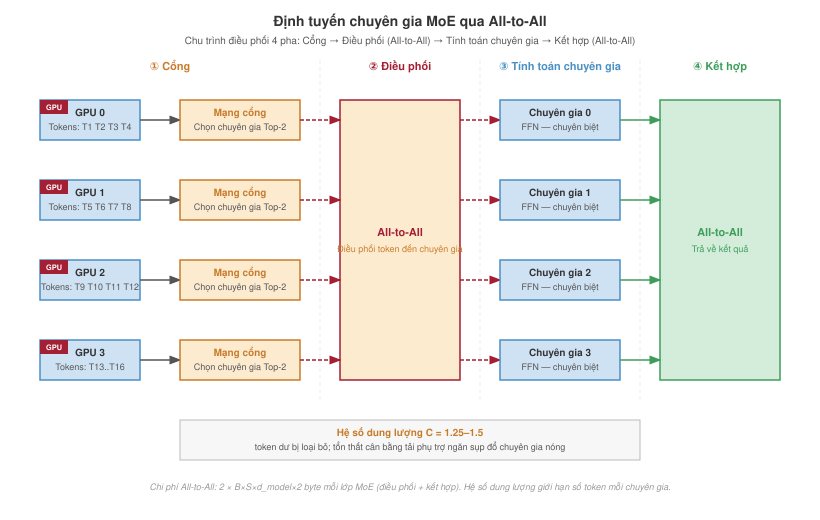

Tại sao phân tán lại cần thiết
Huấn luyện phân tán

Mục đích
Tại sao quan niệm đơn giản “càng nhiều phần cứng thì huấn luyện càng nhanh” lại không còn đúng khi gặp phải giới hạn băng thông chia đôi?
Huấn luyện phân tán có vẻ đơn giản khi ta hình dung nó là việc chia nhỏ công việc giữa các máy rồi tổng hợp kết quả. Tuy nhiên, khi quy mô hệ thống machine learning tăng lên, chi phí giao tiếp tăng lên trong khi khả năng tính toán trên mỗi máy lại giảm xuống. Đến một lúc nào đó, chi phí đồng bộ hóa sẽ chiếm ưu thế, và việc bổ sung thêm phần cứng thậm chí có thể làm giảm hiệu suất. Khi một tác vụ được huấn luyện trên một bộ tăng tốc duy nhất, thiết kế sẽ tối ưu hóa cường độ tính toán số học; nhưng khi huấn luyện trên 10.000 bộ tăng tốc, thiết kế lại phải tối ưu hóa cường độ giao tiếp. Giới hạn mở rộng này xuất phát từ khoảng cách về độ tin cậy và tỷ lệ giữa giao tiếp và tính toán. Để điều phối các máy độc lập, chúng ta cần di chuyển hàng terabyte dữ liệu trạng thái qua các mạng có tốc độ chậm hơn nhiều bậc so với bộ nhớ trên chip. Huấn luyện phân tán giải quyết vấn đề này bằng cách phân chia công việc để giảm thiểu chi phí điều phối, chồng chéo giao tiếp với tính toán để che giấu độ trễ, và lựa chọn các chiến lược đồng bộ hóa sao cho cân bằng giữa tính nhất quán và thông lượng. Nếu không hiểu rõ điều này, các tổ chức có thể lãng phí hàng triệu đô la vào phần cứng nằm không, chờ đợi gradient đến, hoặc tạo ra các mô hình không thể hội tụ vì các bản cập nhật cũ làm gián đoạn quá trình tối ưu hóa. Huấn luyện phân tán đưa phân loại C³ vào thực tiễn, với mỗi lựa chọn thiết kế đều là sự đánh đổi giữa việc tính toán song song và giao tiếp bị giới hạn bởi mạng cùng với sự điều phối giữa các worker.
Learning Objectives
- Áp dụng luật về hệ thống để chẩn đoán các chế độ huấn luyện phân tán bị giới hạn bởi tính toán, bộ nhớ, giao tiếp hoặc điều phối
- Tính toán hiệu quả mở rộng, giới hạn kích thước batch tới hạn và chi phí đồng bộ hóa cho các tác vụ huấn luyện song song dữ liệu
- Thiết kế các kế hoạch phân chia bộ nhớ đánh đổi dung lượng bộ tăng tốc để tăng giao tiếp
- Ánh xạ các hình thức song song hóa (tensor, pipeline, chuyên gia và dữ liệu) vào các cấp băng thông phần cứng và cấu trúc mô hình
- Xây dựng các lịch trình pipeline microbatch nhằm giảm thiểu các khoảng trống (bubbles) trong khi vẫn duy trì thông lượng và sự ổn định hội tụ
- Đánh giá các chính sách đồng bộ hóa và độ chính xác thấp, có xét đến các ràng buộc về tính lỗi thời của dữ liệu, các tác vụ bị chậm trễ (straggler) và tính ổn định số học.
- Tổng hợp các cấu hình song song lai cho các ràng buộc khi huấn luyện các mô hình tiên phong, khuyến nghị và căn chỉnh.
Kiến trúc phân cấp của các bộ tăng tốc, cấu trúc mạng và pipeline lưu trữ tạo thành nền tảng vật lý cho toàn bộ hệ thống. Thử thách còn lại mang tính thuật toán: làm sao để phân chia một tác vụ huấn luyện duy nhất trên hàng nghìn tài nguyên mà vẫn giữ được ý nghĩa của một quá trình tối ưu hóa thống nhất. Định luật mở rộng phổ quát (nguyên lý 9) giải thích tại sao áp lực này ngày càng gia tăng: những cải tiến về chất lượng ở các mô hình tiên phong đòi hỏi lượng tính toán, dữ liệu và tham số lớn hơn một cách không cân xứng, khiến cho bài toán huấn luyện cuối cùng vượt quá khả năng của bất kỳ một máy đơn lẻ nào.
Một bộ tăng tốc duy nhất với 100 terabyte bộ nhớ và một exaflop tính toán sẽ khiến việc huấn luyện phân tán trở nên không cần thiết. Thay vào đó, các hệ thống thực tế có dung lượng bộ nhớ băng thông cao (HBM) hữu hạn, băng thông kết nối bị giới hạn và ngân sách lỗi cũng bị giới hạn. Vì vậy, quá trình huấn luyện phải được phân chia trên nhiều chip độc lập. Trong khuôn khổ kiến trúc tổng thể được thể hiện trong Fleet Stack, huấn luyện phân tán đại diện cho lớp phân phối: là logic phân chia khối lượng công việc toán học trên hệ thống vật lý. Các chiến lược được định nghĩa ở đây, bao gồm song song dữ liệu, tensor, pipeline và lai, tạo ra các mô hình lưu lượng mà các kết nối mạng phải xử lý.
Vật lý của cụm
Trước khi tối ưu hóa thuật toán, chúng ta cần hiểu rõ các ràng buộc vật lý của hệ thống Machine Learning. Hiệu suất của bất kỳ tác vụ huấn luyện phân tán nào được chi phối bởi luật hệ thống (nguyên lý 10), đã được giới thiệu trong Định luật đội máy. Luật này phân tách thời gian cho mỗi bước như sau:
\[ T_{\text{step}}(N) = \frac{T_{\text{compute}}}{N} + T_{\text{comm}}(N) + T_{\text{sync}}(N) - T_{\text{overlap}} \]
Thuật ngữ quan trọng là Tỷ lệ Giao tiếp-Tính toán, \(\rho = T_{\text{comm}}(N)/(T_{\text{compute}}/N)\). Tỷ lệ này quyết định liệu một cụm có hoạt động hiệu quả như một siêu máy tính, hay chỉ là một tập hợp các thiết bị sưởi ấm không hoạt động.
{kind=link}
Từ tỷ lệ này, ta có hai trạng thái. Một cụm bị giới hạn bởi tính toán, nơi \(T_{\text{compute}}/N \gg T_{\text{comm}}(N)\), sẽ dành phần lớn thời gian để nhân ma trận; đây là trạng thái lý tưởng, thường thấy với kích thước batch lớn trên các mô hình dày đặc như ResNet. Ngược lại, một cụm bị giới hạn bởi giao tiếp, nơi \(T_{\text{comm}}(N) \approx T_{\text{compute}}/N\), sẽ tốn nhiều thời gian chờ gradient hoặc activation đến. Đây là tình trạng phổ biến ở các mô hình ngôn ngữ lớn (LLM) và các mô hình khuyến nghị kiểu Deep Learning Recommendation Model (DLRM), khi việc đồng bộ hóa tham số làm bão hòa mạng. Bảng chẩn đoán nút thắt cổ chai đã sử dụng tỷ lệ này để xây dựng một khuôn khổ chẩn đoán, giúp phân loại khối lượng công việc (workload) là bị giới hạn bởi tính toán, bộ nhớ hay giao tiếp dựa trên băng thông đo được và cường độ số học của nó, từ đó biến các trạng thái định tính này thành một thử nghiệm có thể lặp lại.
Các yêu cầu khi huấn luyện trên nhiều máy
Có ba tín hiệu rõ ràng cho thấy khi nào huấn luyện phân tán trở nên cần thiết, chứ không chỉ đơn thuần là có lợi. Tín hiệu đầu tiên là Cạn kiệt bộ nhớ: các tham số mô hình, trạng thái optimizer và bộ nhớ lưu trữ activation vượt quá dung lượng của một thiết bị. Chẳng hạn, với huấn luyện độ chính xác hỗn hợp đầy đủ sử dụng Adaptive Moment Estimation (Adam), riêng ngân sách cho tham số, gradient và trạng thái optimizer đã có thể vượt quá khả năng của một bộ tăng tốc 80 GB khi mô hình có khoảng 5 tỷ tham số, chưa kể đến activation. Các mô hình lớn hơn 10–20 tỷ tham số sẽ cần đến sharding, offload hoặc các kỹ thuật tiết kiệm bộ nhớ khác (Rajbhandari et al. 2020). Nguồn gốc giả định ghi lại dung lượng 80 GB của H100 và A100\index{A100] được dùng để tính toán các ngân sách này trong suốt chương, giúp người đọc có thể truy vết mọi giới hạn bộ nhớ về một nguồn tài liệu duy nhất.
Tín hiệu thứ hai là Thời lượng huấn luyện không thể chấp nhận được. Ngay cả khi mô hình vừa vặn với một thiết bị, việc huấn luyện trên một thiết bị đơn lẻ có thể mất hàng tuần hoặc hàng tháng để hội tụ. Điều này khiến chính thời gian thực hiện trở thành một ràng buộc của hệ thống. Ví dụ, quá trình huấn luyện mô hình GPT-3 với 175 tỷ tham số đã sử dụng một cụm GPU V100 (Brown et al. 2020). Điều này cho thấy rõ ràng rằng ở quy mô này, không chỉ dung lượng HBM mà cả thời gian biểu cũng buộc chúng ta phải phân tán việc huấn luyện.
Tín hiệu thứ ba là Quy mô tập dữ liệu. Khi dữ liệu huấn luyện đạt đến nhiều terabyte, như trong các bài toán mô hình ngôn ngữ hoặc thị giác quy mô lớn, một máy đơn lẻ không còn đủ khả năng lưu trữ hay xử lý dữ liệu đầu vào với thông lượng cao một cách hiệu quả nữa. Khi đó, huấn luyện phân tán trở thành giải pháp không chỉ để lưu trữ dữ liệu mà còn để cung cấp dữ liệu cho mô hình. Cả ba tín hiệu này đều dẫn đến cùng một giới hạn về cấu trúc. Biểu đồ Figure 1 minh họa rõ điều này: dung lượng bộ nhớ thiết bị tăng, nhưng nhu cầu của mô hình tăng nhanh hơn. Điểm giao nhau chính là lúc huấn luyện phân tán không còn là một phương án tối ưu mà trở thành một điều kiện bắt buộc.
{kind=link}
Đánh đổi độ phức tạp của huấn luyện phân tán
Khi phân tán, bài toán tối ưu hóa sẽ thay đổi vì phát sinh thêm các chi phí mà một máy đơn lẻ không có. Có ba yếu tố phức tạp quyết định tính khả thi của một chiến lược song song hóa, bởi vì bất kỳ yếu tố nào trong số chúng cũng có thể trở thành nút thắt. Chi phí giao tiếp là chi phí để đồng bộ hóa các gradient. Với một mô hình có \(P\) tham số được phân tán trên \(N\) thiết bị, các phép toán all-reduce cần truyền khoảng \(2P(N-1)/N\) giá trị gradient mỗi bước, nhân với số byte của mỗi phần tử gradient. Trên các mạng thông thường, chi phí này có thể chiếm phần lớn thời gian tính toán. Khả năng chịu lỗi càng khó đảm bảo khi cụm máy tính càng lớn. Lý do là số lỗi dự kiến trên mỗi đơn vị thời gian tăng tuyến tính theo kích thước cụm, trong khi xác suất toàn bộ cụm hoạt động liên tục mà không có lỗi nào lại giảm theo cấp số nhân. Ví dụ, nếu một cụm 100 nút có tỷ lệ sống sót hàng giờ trên mỗi nút là 99.9 percent, thì xác suất lỗi ở cấp cụm là 9.5 percent mỗi giờ. Điều này tương ứng với thời gian trung bình giữa các lần hỏng hóc (MTBF) khoảng 10 hours. Phần Chuỗi MTBF sẽ giải thích chi tiết cách tính toán này, từ tỷ lệ sống sót của từng nút đến MTBF của toàn cụm, kèm theo một ví dụ đầy đủ để bạn đọc hiểu rõ tại sao MTBF lại giảm mạnh khi cụm mở rộng. Tính ổn định thuật toán là yếu tố cuối cùng. Kích thước batch lớn do song song hóa dữ liệu sẽ ảnh hưởng đến hành vi hội tụ, đòi hỏi phải có các chiến lược điều chỉnh tốc độ học và khởi động mà quá trình huấn luyện trên một máy đơn lẻ không cần đến (Goyal et al. 2017). Tóm lại, những chi phí này cho thấy huấn luyện phân tán là một bài toán cần thỏa mãn nhiều ràng buộc, chứ không đơn thuần là việc nhân rộng phần cứng.
Chuyển đổi từ một máy sang hệ thống phân tán
Phương pháp tối ưu hóa có hệ thống đã được xây dựng cho huấn luyện trên một máy có thể mở rộng sang môi trường phân tán, nhưng cần có những điều chỉnh quan trọng. Việc lập hồ sơ (profiling) cần thu thập các mẫu giao tiếp giữa các thiết bị và chi phí đồng bộ hóa, bên cạnh các chỉ số về tính toán và bộ nhớ. Không gian giải pháp cũng mở rộng, bao gồm song song hóa dữ liệu, song song hóa mô hình, song song hóa pipeline và các phương pháp lai. Figure 2 minh họa không gian cấu hình ba chiều này.
{kind=link}
Figure 2 cho thấy tổng số bộ tăng tốc là \(N_{\text{total}} = d \times p \times t\). Các trục này đại diện cho các cách phân chia toán học riêng biệt, nhưng chúng không phải là các tham số cấu hình độc lập. Cụ thể, các hệ số song song hóa tensor và pipeline phải chia hết cấu trúc mô hình; hệ số song song hóa dữ liệu và lịch trình microbatch phải tạo ra một batch toàn cục khả thi; mỗi phân vùng phải vừa với bộ nhớ; và mỗi nhóm giao tiếp phải ánh xạ tới một cấu trúc liên kết phù hợp cùng một miền lỗi chấp nhận được. Vì vậy, các hệ thống huấn luyện sẽ chọn một tọa độ khả thi chung, thay vì điều chỉnh \(d\), \(p\) và \(t\) một cách riêng lẻ.
Đánh đổi kỹ thuật: Chọn một chiến lược song song hóa
Việc lựa chọn chiến lược song song hóa phù hợp không phải là vấn đề sở thích; đó là một bài toán thỏa mãn ràng buộc được chi phối bởi số lượng tham số \((P)\), kích thước batch \((B)\) và băng thông kết nối. Table 1 định lượng chi phí giao tiếp của song song hóa cho từng chiến lược, tiết lộ những phương pháp nào khả thi về mặt vật lý cho một cấu trúc liên kết phần cứng nhất định.
| Chiến lược | Mô hình giao tiếp | Khối lượng giao tiếp | Ràng buộc phần cứng |
|---|---|---|---|
| Data Parallel (DP) | AllReduce Gradients | \(\propto M_{\text{grad}}\) (gradient bytes) | Yêu cầu băng thông bisection cao |
| Tensor Parallel (TP) | AllReduce Activations | \(\propto B \times N_L\) (Layers) | Quan trọng: Cần NVLink |
| Pipeline Parallel (PP) | Point-to-Point (P2P) | \(\propto B \times S \times d_{\text{model}}\) (Activations) | Băng thông thấp (Ethernet là đủ) |
Yêu cầu về băng thông đặt ra một ràng buộc nghiêm ngặt cho việc bố trí phần cứng: mỗi chiến lược song song hóa phải phù hợp với kết nối giữa các GPU cần giao tiếp. Nếu không, thiết kế sẽ thất bại ngay từ trên bản vẽ. Việc kiểm tra nhanh khả năng đáp ứng băng thông (kiểu nháp) sẽ giúp phát hiện sự không phù hợp này trước khi chúng ta bắt đầu viết mã.
Systems Perspective 1.1: Kiểm tra khả năng đáp ứng băng thông
Figure 3 trình bày một cách chính thức quá trình đáp ứng các ràng buộc này dưới dạng một cây quyết định. Nó cho thấy kích thước mô hình và cấu trúc liên kết phần cứng sẽ quyết định những chiến lược song song hóa nào là khả thi.
{kind=link}
Cây quyết định cho thấy việc lựa chọn chiến lược song song hóa không phải là sở thích mà là hệ quả của các ràng buộc vật lý. Đây là một cái nhìn sơ lược về cấp độ ràng buộc: các công thức về khối lượng giao tiếp trong table 1 cho biết mỗi chiến lược di chuyển những gì, nhưng ý nghĩa đầy đủ của chúng phụ thuộc vào cơ chế của song song hóa tensor, pipeline và lai được phát triển trong phần còn lại của chương. Section 1.8 sẽ hoàn thiện bộ lọc này khi các cơ chế đó đã được thiết lập. Câu hỏi tiếp theo là làm thế nào các ràng buộc này định hình cơ chế của một bước huấn luyện phân tán trên một cụm thực tế.
Bước Huấn luyện Phân tán
Để chia một tác vụ huấn luyện cho nhiều bộ tăng tốc, chúng ta phải giữ nguyên ý nghĩa toán học của một bước tối ưu hóa duy nhất. Thách thức chính ở đây là làm sao để 1.024 GPU, dù hoạt động hoàn toàn độc lập, vẫn phải thống nhất được một bộ trọng số cập nhật duy nhất và đúng đắn về mặt toán học sau mỗi vòng lặp huấn luyện.
Definition 1.1: Huấn luyện phân tán
Huấn luyện phân tán là một phương pháp huấn luyện chia nhỏ vòng lặp tối ưu hóa trên nhiều nút tính toán (bằng cách phân tán dữ liệu, các lớp của mô hình, hoặc từng phép toán tensor). Sau đó, nó phối hợp kết quả đầu ra của các nút này thông qua các cơ chế giao tiếp đồng bộ để tạo ra một mô hình duy nhất và nhất quán.
- Ý nghĩa: Huấn luyện phân tán trở nên cần thiết khi lượng bộ nhớ mà mô hình cần vượt quá khả năng của một bộ tăng tốc. Ví dụ, GPT-3 (175B tham số) cần khoảng 350 GB ở định dạng BF16—gấp hơn 4\(\times\) dung lượng 80 GB của một H100. Để huấn luyện GPT-3, riêng việc phân mảnh mô hình đã cần ít nhất 5 H100. Đối với các lần chạy lớn, người ta có thể dùng hàng trăm hoặc hàng nghìn bộ tăng tốc để đạt được thời gian thực tế (wall-clock time) chấp nhận được.
- Điểm khác biệt: Không như đa luồng trên một nút (nơi các lõi chia sẻ chung một không gian bộ nhớ vật lý), huấn luyện phân tán chia sẻ trạng thái trên các bộ nhớ riêng biệt của các bộ tăng tốc. Điều này đòi hỏi phải có các cơ chế giao tiếp tập thể rõ ràng thông qua các mạng kết nối để đồng bộ hóa trạng thái tối ưu hóa.
- Cạm bẫy thường gặp: Một quan niệm sai lầm phổ biến là huấn luyện phân tán sẽ mở rộng hiệu năng tuyến tính theo số lượng nút. Trên thực tế, chi phí giao tiếp tăng lên cùng với kích thước cụm và phần công việc tuần tự trong mỗi bước (theo Định luật Amdahl). Ví dụ, nếu 30% thời gian của một bước dành cho việc đồng bộ hóa, thì giới hạn mở rộng hiệu năng về mặt lý thuyết chỉ là \(1/0.30 \approx 3\times\), cho dù có thêm bao nhiêu bộ tăng tốc đi chăng nữa.
Một mô hình tư duy hữu ích là coi các chiến lược phân tán này như các phép biến đổi vòng lặp, giống như bộ công cụ khái niệm mà trình biên dịch dùng để tối ưu hóa mã tuần tự. Nếu chúng ta xem quá trình huấn luyện là một vòng lặp lớn chạy qua dữ liệu và các lớp, thì các chiến lược phân tán chỉ đơn giản là các phép biến đổi vòng lặp do trình biên dịch cấp cụm thực hiện. Vòng lặp huấn luyện logic có ba bộ lặp lồng nhau (epochs, batches, các lớp), và mỗi chiến lược song song hóa sẽ “mở rộng” (unroll) một trong số các bộ lặp đó ra các thiết bị khác nhau:
Song song dữ liệu là cách triển khai vòng lặp for song song, bằng cách phân tách vòng lặp ngoài (chiều batch) trên các thiết bị. Nhờ đó, mỗi thiết bị sẽ chạy cùng một đoạn mã nhưng với các chỉ số dữ liệu khác nhau. Song song tensor là kỹ thuật vector hóa, hay còn gọi là SIMD (một lệnh, nhiều dữ liệu). Kỹ thuật này chia các vòng lặp bên trong (phép nhân ma trận) ra các thiết bị khác nhau trong một hệ thống SIMD quy mô cụm, nơi NVLink đóng vai trò như một tệp thanh ghi vector. Song song pipeline là kỹ thuật pipeline lệnh, chia các phép toán tuần tự (các lớp) cho các thiết bị khác nhau. Tương tự như cách pipeline của CPU có các giai đoạn tìm nạp, giải mã và thực thi, cụm thiết bị sẽ lần lượt xử lý Lớp 1, Lớp 2, Lớp 3 để đảm bảo tất cả các bộ xử lý luôn bận rộn.
Dù chiến lược nào được dùng để phân tách vòng lặp, huấn luyện phân tán1 đều trải khối lượng công việc (workload) ra nhiều máy. Các máy này cần phối hợp với nhau để huấn luyện một mô hình duy nhất. Việc phối hợp ở đây có nghĩa là đảm bảo mọi phân đoạn hoặc bản sao của mô hình đều ở cùng một bước huấn luyện tương thích. Các rào cản cơ bản có thể giúp duy trì trật tự cho một lần chạy nghiên cứu nhỏ. Tuy nhiên, các tác vụ huấn luyện kéo dài còn cần thêm cơ chế hết thời gian (timeout), checkpoint và phục hồi để tránh việc một worker bị lỗi làm lãng phí nhiều ngày tính toán. Khả năng chịu lỗi sẽ đi sâu phân tích những thách thức về kỹ thuật độ tin cậy này.
1 Huấn luyện phân tán: DistBelief (2012) của Google là một framework tiên phong cho việc huấn luyện mạng nơ-ron trên hàng nghìn máy. Tuy nhiên, kiến trúc máy chủ tham số của nó đã tạo ra các nút thắt cổ chai băng thông tại các nút trung tâm. Hạn chế này đã thúc đẩy sự chuyển đổi sang các mẫu AllReduce phi tập trung trong các hệ thống kế nhiệm như Horovod và PyTorch DistributedDataParallel (DDP). Trong các hệ thống này, các worker song song dữ liệu được nhân bản sẽ đồng bộ hóa gradient với chi phí \(2(N-1)/N\) cho mỗi worker, thay vì tập trung toàn bộ lưu lượng tại một máy chủ duy nhất (Dean et al. 2012; Sergeev and Balso 2018; Li et al. 2020; Patarasuk and Yuan 2009).
2 NVLink: Kết nối GPU điểm-điểm của NVIDIA cung cấp băng thông hai chiều 600 GB/s–900 GB/s, xấp xỉ 24×–36× InfiniBand HDR trên mỗi cổng. Chính vì khoảng cách băng thông này mà song song tensor, vốn yêu cầu AllReduce trên mỗi lớp, bị giới hạn trong giao tiếp nội nút, còn song song pipeline và song song dữ liệu thì vẫn chấp nhận được mạng liên kết giữa các nút chậm hơn.
3 NCCL (Thư viện Giao tiếp Tập thể NVIDIA): NCCL cung cấp các hàm giao tiếp tập thể giữa các GPU có khả năng nhận biết cấu trúc liên kết, bao gồm AllReduce, trên các mạng PCIe, NVLink, InfiniBand và IP. Các triển khai NCCL hiện nay hỗ trợ các nhóm thuật toán dạng vòng, cây và các thuật toán liên quan thông qua các điều khiển lựa chọn và điều chỉnh runtime, nhờ đó các framework huấn luyện có thể tránh được các cách ánh xạ đơn giản (naive) mà sẽ định tuyến toàn bộ lưu lượng qua đường dẫn liên nút chậm nhất (Jeaugey 2017; NVIDIA 2026).
Mỗi bước trong lộ trình mở rộng quy mô đều kế thừa những thách thức từ bước trước đó. Huấn luyện trên một GPU chỉ cần quản lý bộ nhớ cục bộ và các lượt truyền xuôi/ngược. Việc mở rộng quy mô lên nhiều GPU trong cùng một nút sẽ phát sinh nhu cầu giao tiếp băng thông cao. Giao tiếp này được xử lý thông qua NVLink2 hoặc PCIe với các tối ưu hóa của NCCL3, đồng thời vẫn phải duy trì khả năng chịu lỗi và lập lịch của một máy đơn.
Việc chuyển sang huấn luyện đa nút sẽ làm tăng thêm chi phí giao tiếp mạng, các yêu cầu về khả năng chịu lỗi và việc điều phối cụm. Vì mỗi giai đoạn đều làm trầm trọng thêm các nút thắt cổ chai của giai đoạn trước đó, nên hiệu suất của từng GPU phải được tối ưu hóa trước khi mở rộng quy mô, để tránh việc sự kém hiệu quả bị nhân rộng trên toàn hệ thống. Mặc dù các framework đã trừu tượng hóa phần lớn các vấn đề này thông qua song song dữ liệu phân mảnh và các thư viện giao tiếp, nhưng việc triển khai huấn luyện phân tán hiệu quả vẫn đòi hỏi cấu hình mạng cẩn thận (điều chỉnh InfiniBand, định tuyến nhận biết cấu trúc liên kết), quản lý cơ sở hạ tầng thông qua các bộ lập lịch cụm và gỡ lỗi các vấn đề không cục bộ như treo đồng bộ hóa hay tắc nghẽn giao tiếp.
Mặc dù có sự phức tạp này, quy trình làm việc cốt lõi thì về mặt cơ học khá đơn giản; thách thức kỹ thuật nằm ở việc làm cho nó nhanh và đáng tin cậy ở quy mô lớn. Chi phí phát sinh lặp đi lặp lại chính là việc đồng bộ hóa gradient để tổng hợp kết quả từ các thiết bị, đây là một chi phí phụ trội tăng lên khi hệ thống mở rộng quy mô, như section 1.3 đã định lượng.
Bốn phương pháp này giải quyết các giới hạn khác nhau. Song song dữ liệu chia tập dữ liệu huấn luyện ra cho nhiều máy, trong khi mỗi máy vẫn giữ một bản sao mô hình hoàn chỉnh. Đây là phương pháp đơn giản nhất cho các mô hình có thể chứa vừa trong bộ nhớ của một thiết bị. Song song mô hình chia chính mô hình đó ra nhiều thiết bị khi số lượng tham số vượt quá bộ nhớ của một thiết bị. Song song pipeline chia mô hình thành nhiều giai đoạn tuần tự, mỗi giai đoạn xử lý các microbatch đồng thời. Cách này giúp cải thiện hiệu suất sử dụng so với song song mô hình thông thường. Các phương pháp lai kết hợp nhiều chiến lược, cho phép huấn luyện ở quy mô lớn mà bất kỳ phương pháp đơn lẻ nào cũng không thể thực hiện được. Mỗi chiến lược chỉ trở nên cần thiết khi chiến lược trước đó đã đạt đến giới hạn vật lý.
Self-Check: Question
What structural requirement most fundamentally distinguishes distributed training from a stateless distributed web service that handles independent HTTP queries across multiple replicas?
- Distributed training must run on strictly more nodes than web services because neural networks cannot execute on small clusters
- Distributed training requires all workers to maintain a consistent mathematical view of mutable shared parameters via collective gradient synchronization
- Distributed training is always compute-bound while web serving is strictly latency-bound, preventing the workloads from sharing cluster hardware
- Distributed training cannot tolerate hardware failures because synchronization protocols prevent checkpoint-based recovery
Order the causal phases of a single synchronous data-parallel training iteration from earliest to latest:
- Update local model parameters using aggregated gradients via the optimizer
- Partition and assign a disjoint batch shard to each worker rank
- Synchronize local gradient tensors across all workers using AllReduce
- Compute forward and backward passes locally on the assigned batch shard
Framing distributed parallelism strategies as compiler loop transformations across the training loop’s iterators (batches, layers, and operations), which distributed strategy corresponds to vectorization (SIMD) of inner matrix multiplications?
- Tensor parallelism, which splits inner matrix-multiplication operations across devices with NVLink acting as a cluster-scale register fabric
- Data parallelism, which unrolls the outer batch loop across devices so each rank processes independent data indices
- Pipeline parallelism, which stages sequential layer operations across devices analogous to CPU instruction pipelining
- Model replication, which duplicates the entire forward and backward execution redundantly across machines
A 1,024-GPU Bulk Synchronous Parallel (BSP) training job reports a 180 ms average per-worker compute time, but the measured step time averages 340 ms with a p99 latency of 720 ms. Explain the mechanism behind this discrepancy and why it worsens as cluster size grows.
True or False: In a synchronous distributed training cluster using collective communication, if control-flow divergence causes worker Rank 0 to execute an AllReduce collective while Rank 1 skips it, the cluster will automatically recover by substituting stale gradients from the previous step.
Song song dữ liệu
Phương pháp đơn giản nhất là gán cho mỗi GPU một bản sao mô hình hoàn chỉnh, giống hệt nhau và một phần dữ liệu riêng biệt. Song song dữ liệu là điểm khởi đầu tự nhiên cho huấn luyện phân tán vì nó đòi hỏi thay đổi rất ít so với quy trình huấn luyện trên một thiết bị.
Definition 1.2: Song song dữ liệu
Song song dữ liệu là một chiến lược huấn luyện phân tán mà trong đó mỗi worker giữ một bản sao mô hình hoàn chỉnh và xử lý một phần độc lập của minibatch, sau đó đồng bộ hóa các cập nhật gradient thông qua AllReduce để tất cả các bản sao áp dụng các thay đổi tham số giống hệt nhau ở mỗi bước.
- Ý nghĩa: Với \(N\) worker, mỗi worker xử lý một batch có kích thước batch là \(B\), thì kích thước batch toàn cục hiệu quả sẽ là \(N \times B\). Điều này giúp tăng thông lượng tuyến tính, đồng thời giữ cho bộ nhớ trên mỗi worker không đổi. Ví dụ, với một mô hình 1 tỷ tham số, chiếm 2 GB bộ nhớ ở định dạng BF16, 1.024 worker có thể đạt được thông lượng gấp 1.024 lần so với một GPU đơn. Tuy nhiên, hiệu quả này sẽ giảm đi khi quá trình AllReduce gradient (2 GB mỗi bước với \(2(N-1)/N\) tối ưu theo vòng trên mỗi worker) vượt quá thời gian tính toán ngược và tạo ra nút thắt cổ chai về truyền thông.
- Điểm khác biệt: Không như song song mô hình và song song pipeline (vốn phân chia các lớp hoặc các phép toán của mạng trên các bộ tăng tốc), song song dữ liệu nhân bản toàn bộ mô hình trên tất cả các worker và chỉ phân chia tập dữ liệu huấn luyện, đồng thời yêu cầu đồng bộ hóa gradient sau mỗi lượt truyền ngược.
- Cạm bẫy thường gặp: Một quan niệm sai lầm phổ biến là song song hóa dữ liệu có thể mở rộng vô hạn theo số lượng worker. Nếu tăng kích thước batch hiệu quả \(B\) vượt quá kích thước batch tới hạn (phụ thuộc vào khối lượng công việc (workload)), hiệu quả thống kê sẽ giảm. Điều này đòi hỏi nhiều bước huấn luyện hơn để đạt được hàm mất mát mục tiêu, đồng thời làm giảm đáng kể lợi ích về thông lượng khi thêm nhiều worker hơn (Shallue et al. 2019).
Mỗi thiết bị huấn luyện một bản sao hoàn chỉnh của mô hình bằng cách sử dụng tập dữ liệu con được gán cho nó. Ví dụ, khi huấn luyện một mô hình phân loại ảnh trên 1 triệu ảnh bằng 4 GPU, mỗi GPU xử lý 250.000 ảnh đồng thời duy trì một bản sao giống hệt của kiến trúc mô hình.
Song song hóa dữ liệu hiệu quả nhất khi kích thước tập dữ liệu lớn nhưng kích thước mô hình vẫn ở mức có thể quản lý được. Lý do là mỗi thiết bị phải lưu trữ một bản sao đầy đủ của mô hình trong bộ nhớ. Phương pháp này được sử dụng rộng rãi trong phân loại ảnh và xử lý ngôn ngữ tự nhiên, nơi tập dữ liệu có thể được xử lý song song mà không có sự phụ thuộc giữa các mẫu dữ liệu. Ví dụ, khi huấn luyện một mô hình ResNet (He et al. 2016) trên ImageNet, mỗi GPU có thể độc lập xử lý phần ảnh của mình vì việc phân loại một ảnh không phụ thuộc vào kết quả của ảnh khác.
Hiệu quả của song song hóa dữ liệu bắt nguồn từ một thuộc tính của gradient descent ngẫu nhiên. Các gradient được tính toán trên các batch nhỏ (minibatch) khác nhau có thể được tính trung bình mà vẫn giữ được sự tương đương về mặt toán học so với việc huấn luyện trên một thiết bị duy nhất. Thuộc tính này cho phép tính toán song song trên nhiều thiết bị, với cơ sở toán học trực tiếp từ tính tuyến tính của kỳ vọng.
Xét một mô hình với các tham số \(\theta\) đang được huấn luyện trên một tập dữ liệu \(D\). Hàm mất mát cho một điểm dữ liệu \(x_i\) là \(\mathcal{L}(\theta, x_i)\). Trong gradient descent ngẫu nhiên (SGD) tiêu chuẩn với kích thước batch \(B\), công thức cập nhật gradient cho một batch nhỏ (minibatch) là: \[ g = \frac{1}{B} \sum_{i=1}^B \nabla_{\theta} \mathcal{L}(\theta, x_i) \]
Trong song song hóa dữ liệu với \(N\) thiết bị, mỗi thiết bị \(k\) sẽ tính toán gradient trên batch nhỏ (minibatch) \(B_k\) của riêng nó: \[ g_k = \frac{1}{|B_k|} \sum_{x_i \in B_k} \nabla_{\theta} \mathcal{L}(\theta, x_i) \]
Khi tất cả các worker sử dụng cùng kích thước batch cục bộ, việc cập nhật toàn cục sẽ tính trung bình các gradient cục bộ này: \[ g_{\text{global}} = \frac{1}{N} \sum_{k=1}^N g_k \]
Theo giả định các batch bằng nhau, việc tính trung bình này tương đương về mặt toán học với việc tính toán gradient trên batch kết hợp \(B_{\text{total}} = \bigcup_{k=1}^N B_k\): \[ g_{\text{global}} = \frac{1}{|B_{\text{total}}|} \sum_{x_i \in B_{\text{total}}} \nabla_{\theta} \mathcal{L}(\theta, x_i) \]
Với các kích thước batch cục bộ khác nhau, gradient của batch tổng hợp là trung bình có trọng số \(g_{\text{global}} = (1/|B_{\text{total}}|)\sum_k |B_k|g_k\). Điều này cho thấy tại sao song song hóa dữ liệu vẫn giữ được các đặc tính thống kê của quá trình huấn luyện SGD: bằng cách lấy mẫu batch toàn cục mong muốn trên các thiết bị, tính toán tổng gradient cục bộ một cách độc lập, rồi chuẩn hóa bằng tổng mẫu số, ta sẽ tái tạo được ước lượng của nó. Bước tổng hợp (reduction) sử dụng AllReduce trên tổng gradient cục bộ và số lượng phần tử hợp lệ; AllReduce sẽ trình bày các mô hình chi phí cho AllReduce dạng vòng và dạng cây, giúp xác định chi phí của quá trình đồng bộ hóa này. Từ đó, người đọc có thể dự đoán khi nào chi phí đồng bộ hóa sẽ lớn hơn thời gian tính toán cục bộ tiết kiệm được nhờ song song hóa.
Checkpoint 1.1: Cơ chế song song hóa dữ liệu
Xác minh sự hiểu biết của bạn về cách song song hóa dữ liệu phân phối công việc:
Phương pháp này tương tự như tích lũy gradient, trong đó một thiết bị duy nhất sẽ tích lũy gradient qua nhiều lượt truyền xuôi trước khi cập nhật tham số. Cả hai kỹ thuật đều sử dụng các thuộc tính cộng của gradient để xử lý các batch lớn một cách hiệu quả. Tuy nhiên, việc áp dụng ý tưởng này vào một cụm máy tính sẽ phát sinh các thách thức vận hành, vượt ra ngoài sự tương đương về mặt lý thuyết. Chi phí truyền thông, lỗi nút và các ràng buộc về chi phí đều gây ra những hiệu ứng thứ cấp mà các suy luận trên một máy đơn không thể lường trước.
Triển khai song song hóa dữ liệu
Các chi tiết triển khai rất quan trọng, bởi vì sự tương đương SGD chỉ đúng khi mỗi giai đoạn đảm bảo việc lấy mẫu và gán trọng số tổng hợp đúng như dự kiến, đóng góp gradient cục bộ đầy đủ, và chỉ một lần cập nhật đồng bộ. Do đó, quy trình làm việc cụ thể sẽ mô tả toàn bộ quá trình, từ việc gán các batch cục bộ cho đến khi đồng bộ hóa các gradient đã tính toán. Hãy xem figure 4: hình này minh họa toàn bộ quy trình, từ việc gán batch cho đến khi tổng hợp gradient. Nó cho thấy cách mỗi GPU xử lý batch được gán cho mình, sau đó quá trình đồng bộ hóa sẽ tập hợp tất cả gradient lại để cập nhật tham số.
{kind=link}
Điểm đồng bộ hóa quan trọng là giai đoạn 4 (figure 4): AllReduce phải hoàn thành trước khi bất kỳ GPU nào có thể cập nhật tham số, khiến việc giao tiếp gradient trở thành nút thắt cổ chai chính khi số lượng thiết bị tăng lên.
Chia tập dữ liệu
Chia dữ liệu là điểm đầu tiên mà sự tương đương SGD có thể thất bại. Tuy nhiên, sự duy nhất và các shard có kích thước bằng nhau là các điều kiện đủ, chứ không phải là bản thân bất biến. Các ví dụ hoặc token tổng hợp, xác suất lấy mẫu và trọng số gradient của chúng phải tạo ra ước lượng batch toàn cục mong muốn. Việc lấy mẫu đồng nhất không hoàn lại có thể gán các shard rời rạc; lấy mẫu có hoàn lại có thể lặp lại các ví dụ một cách hợp lệ; và các batch có độ dài thay đổi có thể gán số lượng token không bằng nhau nếu quá trình tổng hợp gán trọng số cho mỗi worker dựa trên mẫu số của số ví dụ hợp lệ hoặc token hợp lệ của nó. Ngược lại, một trung bình không trọng số của các trung bình cục bộ không bằng nhau sẽ làm tăng trọng số cho các worker có mẫu số nhỏ hơn.
Do đó, bộ lấy mẫu là một phần của hệ thống huấn luyện, không chỉ là một công cụ tiện lợi để tải dữ liệu đầu vào. Một bộ lấy mẫu phân tán có thể điều phối các worker dựa trên thứ hạng của chúng, đồng thời phân vùng hoặc lấy các chỉ mục một cách xác định từ một luồng lấy mẫu đã được khởi tạo (seeded sampling stream). Đối với một tập dữ liệu gồm 1,2 triệu ví dụ được phân phối đều trên 32 GPU, mỗi GPU sẽ xử lý khoảng 37.500 ví dụ mỗi epoch. Nếu bộ lấy mẫu đệm batch cuối cùng bằng cách lặp lại các ví dụ, thì việc chuẩn hóa mất mát hoặc trọng số mẫu phải tính đến các lần lặp đó khi cần độ chính xác cao trong việc tính trọng số ở cấp độ epoch. Một hạt giống đã được ghi lại và luồng chỉ mục xác định sẽ giúp việc gán mẫu có thể lặp lại; khả năng tái tạo kết quả ở mức bit còn phụ thuộc vào tính xác định của kernel, thứ tự giảm tập thể, độ chính xác số học và trạng thái của bộ tạo số ngẫu nhiên đã được checkpoint.
Giai đoạn tính toán: Truyền xuôi và lan truyền ngược
Điểm đặc trưng chính của song song dữ liệu là giai đoạn tính toán, bao gồm cả truyền xuôi và lan truyền ngược, đều song song hóa một cách dễ dàng. Mỗi GPU hoạt động như một đơn vị độc lập, thực thi một bản sao y hệt của mô hình trên microbatch được gán cho nó. Ở đây, microbatch có nghĩa là phần dữ liệu cục bộ trên mỗi GPU dùng để tính toán activation; microbatching pipeline lại sử dụng thuật ngữ này cho một cơ chế khác, đó là chia nhỏ một batch tổng thể để giữ cho các giai đoạn của pipeline luôn hoạt động. Đối với mô hình tham chiếu tham số 175B của chúng tôi, sự độc lập này là rất quan trọng: trong quá trình truyền xuôi, mỗi GPU độc lập tính toán các activation cho batch cục bộ của mình (kích thước microbatch 4, độ dài chuỗi 2048). Nếu không có tối ưu hóa, việc lưu trữ các activation này để lan truyền ngược sẽ tiêu tốn khoảng 1.1 TB HBM, lớn hơn một bậc độ lớn so với dung lượng của ngay cả GPU H100. Kỹ thuật checkpointing activation, vốn tính toán lại các activation trong quá trình lan truyền ngược thay vì lưu trữ chúng, trở nên cần thiết trong trường hợp này để giảm dung lượng xuống còn ~19.3 GB.
Việc kiểm tra dung lượng phải bao gồm cả các activation, chứ không chỉ dừng lại ở số byte trên mỗi tham số. Tại thời điểm sử dụng bộ nhớ cao nhất, \[ M_{\text{total}} = M_{\text{weights}} + M_{\text{gradients}} + M_{\text{optimizer}} + M_{\text{activations}}, \] với các bộ đệm giao tiếp và không gian làm việc tạm thời chiếm thêm bộ nhớ dự phòng. Sharding giúp giảm ba yếu tố đầu tiên tùy theo giai đoạn áp dụng, trong khi độ dài chuỗi, kích thước microbatch cục bộ và lập lịch pipeline sẽ quyết định \(M_{\text{activations}}\). Checkpointing activation giúp giảm yếu tố cuối cùng này bằng cách chỉ giữ lại các điểm ranh giới được chọn và tính toán lại các phép toán truyền xuôi đã bỏ qua trong quá trình lan truyền ngược (Narayanan et al. 2021). Do đó, việc tiết kiệm bộ nhớ phải đánh đổi bằng việc tăng thêm FLOPs và kéo dài đường tới hạn; một kế hoạch song song khả thi cần phải tính toán đến cả hai yếu tố này.
Pha truyền ngược cũng thể hiện sự độc lập này nhưng lại tạo ra nút thắt cổ chai chính của hệ thống. Khi GPU duyệt ngược đồ thị tính toán, nó tính toán gradient cho các tham số mà bản sao hoặc shard đó đang giữ. Trong song song dữ liệu thuần túy, một bản sao FP16 175B đầy đủ sẽ cần một tensor gradient 350 GB cho mỗi worker, vượt quá giới hạn bộ nhớ của một bộ tăng tốc đơn lẻ; do đó, các lần chạy lớn thường kết hợp song song dữ liệu với sharding, song song tensor hoặc song song pipeline. Bản thân quá trình tính toán không yêu cầu giao tiếp, nhưng các gradient thu được chỉ thể hiện một phần rời rạc của bề mặt mất mát thực sự, chỉ hợp lệ cho micro-batch cục bộ đó. Trước khi bước optimizer được thực hiện, các gradient cục bộ hoặc các shard gradient tương ứng phải được tổng hợp từ các worker song song dữ liệu để tạo thành một bản cập nhật toàn cục hợp lệ. Sự chuyển đổi từ tính toán biệt lập, thông lượng cao sang đồng bộ hóa đã định hình nhịp điệu của quá trình huấn luyện song song dữ liệu: những khoảng thời gian dài tính toán số học thầm lặng, chuyên sâu, xen kẽ là những đợt lưu lượng mạng lớn.
Đồng bộ hóa gradient
Đồng bộ gradient là quá trình các ước lượng SGD độc lập được tổng hợp thành một bản cập nhật duy nhất. Do đó, chi phí này quyết định liệu việc song song hóa dữ liệu có thực sự là một chiến lược mở rộng hiệu quả hay chỉ dừng lại ở mức một benchmark mạng. Yêu cầu ngay lập tức trong quá trình huấn luyện rất đơn giản: mọi bản sao (replica) song song dữ liệu phải áp dụng cùng một gradient trung bình trước khi chuyển sang bước kế tiếp. AllReduce là một thao tác cơ bản (primitive) dùng để thực hiện việc này với các tensor được nhân bản (replicated tensors): mỗi worker sẽ đóng góp tensor gradient cục bộ của mình; toàn bộ nhóm worker sẽ tổng hợp các tensor này, và mọi worker đều nhận được cùng một kết quả đã tổng hợp (reduced result). Trong các biến thể phân mảnh (sharded variants), các thuật toán ReduceScatter và AllGather sẽ di chuyển các phần tương ứng thay vì toàn bộ tensor trên mỗi thiết bị. Tuy nhiên, chi phí đồng bộ hóa vẫn không thay đổi. Với các tensor nhỏ, độ trễ đồng bộ hóa là yếu tố chính vì mỗi vòng giao tiếp đều có một chi phí khởi tạo. Ngược lại, với các tensor lớn, băng thông lại là yếu tố chi phối vì lượng dữ liệu gradient cần truyền qua các liên kết là đáng kể. Truyền thông tập thể sẽ trình bày chi tiết các thuật toán dạng vòng (ring), cây (tree) và phân cấp (hierarchical) để thực hiện thao tác tính trung bình này trên các hệ thống thực tế.
Khi hiệu suất đồng bộ hóa không đạt được như kỳ vọng lý thuyết, framework fleet stack sẽ cung cấp một phương pháp có cấu trúc để xác định và cô lập điểm nghẽn.
Example 1.1: Gỡ lỗi khi đồng bộ gradient chậm
Chẩn đoán: Độ trễ thấp hơn nhiều so với giới hạn lý thuyết của thuật toán vòng phẳng (flat-ring) là 239.8 ms, điều này xác nhận NCCL đang sử dụng một thuật toán phân cấp. Tuy nhiên, các bộ đếm trên switch cho thấy các liên kết InfiniBand giữa các node chỉ đạt mức sử dụng 60 percent do tắc nghẽn đường truyền lên (uplink congestion).
Bài học về hệ thống: Để gỡ lỗi giao tiếp tập thể, chúng ta cần đánh giá mức độ sử dụng của các liên kết vật lý và so sánh với các giới hạn lý thuyết của thuật toán. Sự chênh lệch giữa độ trễ lý thuyết (48.5 ms) và độ trễ thực tế quan sát được (100 ms) xuất phát từ việc tranh chấp đường truyền lên (uplink contention) trong cơ sở hạ tầng mạng. Điều này đòi hỏi phải tối ưu hóa cấu trúc liên kết mạng (topology) theo từng đường truyền (rail-optimized) thay vì chỉ thay đổi thuật toán.
Nhìn rộng hơn từ cụm cụ thể đó sang không gian thiết kế, figure 5 đối chiếu ba cấu trúc liên kết đồng bộ hóa cấp cao: AllReduce vòng tối ưu băng thông, máy chủ tham số tập trung và lưới all-to-all kết nối đầy đủ. Trong các thiết lập song song dữ liệu đồng bộ dày đặc, AllReduce vòng có thể tránh được tình trạng tắc nghẽn do một bộ giảm duy nhất gây ra bằng cách phân phối lưu lượng đồng đều trên các liên kết tham gia, như minh họa trong triển khai của Baidu (Gibiansky 2017).
{kind=link}
Sự đánh đổi có thể thấy trong figure 5 là giữa băng thông và độ trễ: một vòng phân phối băng thông đều nhưng thêm một bước độ trễ cho mỗi bước nhảy, trong khi một lưới all-to-all rút gọn đường dẫn độ trễ thành các vòng cố định với chi phí là số lượng liên kết tăng theo cấp số nhân với số lượng node. Các thư viện hiệu suất cao như NCCL tự động chọn giữa các cấu trúc liên kết này dựa trên kích thước thông điệp và cấu trúc liên kết cụm. Truyền thông tập thể chính thức hóa độ phức tạp về độ trễ của từng cấu trúc liên kết và suy ra khi nào một vòng vượt trội hơn các lựa chọn thay thế.
Các mô hình đồng bộ hóa
Các hệ thống huấn luyện phân tán hoạt động theo các mô hình đồng bộ hóa rõ ràng quy định thời điểm các worker quan sát các bản cập nhật của nhau. Việc lựa chọn mô hình quyết định liệu hệ thống có đảm bảo sự tương đương toán học với huấn luyện trên một thiết bị hay đánh đổi tính nhất quán để lấy thông lượng. Mô hình cơ sở, song song đồng bộ hàng loạt (BSP)4 (Valiant 1990), yêu cầu tất cả các worker hoàn thành tính toán cục bộ của họ trong các lượt truyền xuôi và ngược, đồng bộ gradient thông qua một rào cản với AllReduce, và sau đó đồng thời cập nhật các tham số.
4 Song song đồng bộ theo khối (BSP): Được Valiant (1990) giới thiệu như một “mô hình cầu nối” giữa phần cứng và phần mềm cho tính toán song song. BSP chia công việc thành các siêu bước (tính toán, giao tiếp, rào cản), đảm bảo mỗi worker có một ranh giới siêu bước nhất quán. Hạn chế là: thời gian mỗi vòng lặp sẽ bằng thời gian của worker chậm nhất. Ví dụ, với 1.000 GPU và xác suất 1% mỗi thiết bị bị chậm trễ, thì khoảng 10 GPU sẽ bị chậm trễ ở mỗi bước, làm cho việc chờ đợi (rào cản) trở nên ngày càng tốn kém.
BSP cung cấp ngữ nghĩa cập nhật đồng bộ: mọi worker đều tính toán dựa trên cùng một phiên bản tham số và cùng nhau đạt đến điểm cập nhật tiếp theo. Với cùng một batch toàn cục và phép tổng hợp (reduction), điều này khớp về mặt toán học với cách cập nhật đồng bộ trên một thiết bị đơn lẻ. Tuy nhiên, bản thân BSP không đảm bảo khả năng tái tạo kết quả từng bit (bitwise reproducibility). Thứ tự tổng hợp số dấu phẩy động, các kernel phi xác định, trạng thái phụ thuộc vào thứ tự dữ liệu và phục hồi lỗi vẫn có thể làm thay đổi kết quả. Chi phí đồng bộ hóa vẫn là việc worker chậm nhất sẽ quyết định thời gian của mỗi vòng lặp, từ đó gây ra vấn đề worker chậm trễ.
Song song đồng bộ trễ (SSP) nới lỏng ràng buộc này bằng cách cho phép các worker chạy trước worker chậm nhất tối đa \(s\) vòng lặp trước khi bị chặn lại. Điều này giúp giới hạn độ trễ (staleness) đồng thời giảm thời gian chờ đợi do đồng bộ hóa. SSP đòi hỏi phải điều chỉnh tốc độ học (learning rate) một cách cẩn thận, vì các worker tính toán gradient trên các phiên bản tham số hơi khác nhau. Việc đảm bảo độ trễ có giới hạn này tạo ra một sự cân bằng giữa tính nhất quán mạnh mẽ của BSP và các phương pháp hoàn toàn bất đồng bộ (Ho et al. 2013).
SGD bất đồng bộ (ASP) loại bỏ hoàn toàn các rào cản đồng bộ hóa, cho phép các worker cập nhật tham số một cách độc lập. Cách này giúp tối đa hóa việc sử dụng phần cứng, nhưng lại gây ra độ trễ gradient (gradient staleness) có thể làm giảm hiệu quả hội tụ. Mức độ rủi ro về hội tụ mà hệ thống chấp nhận sẽ được xác định bởi cách vận hành của nó; section 1.3.4 sẽ trình bày chi tiết về tốc độ hội tụ, hình phạt độ trễ và các kỹ thuật bù trừ cần thiết cho mỗi mô hình.
Các đánh đổi chính giữa các mô hình đồng bộ hóa được tóm tắt trong table 2, và figure 6 minh họa cách mỗi chiến lược phân bổ công việc cho các worker theo thời gian.
| Mô hình | Tính nhất quán | Thông lượng | Hội tụ | Trường hợp sử dụng |
|---|---|---|---|---|
| BSP | Mạnh | Bị giới hạn bởi worker chậm nhất | Cùng ngữ nghĩa cập nhật đồng bộ | Các lần huấn luyện cuối cùng được kiểm soát |
| SSP | Độ cũ bị giới hạn | Cao hơn BSP | Gần tương đương với tinh chỉnh | Tìm kiếm siêu tham số |
| Bất đồng bộ | Yếu | Tối đa | Suy giảm, yêu cầu bù đắp | Các cluster không đồng nhất lớn |
Sự đánh đổi tương tự sẽ trở nên rõ ràng hơn khi các lịch trình được đặt trên một dòng thời gian.
{kind=link}
Việc lựa chọn mô hình đồng bộ hóa ảnh hưởng trực tiếp đến cả thông lượng hệ thống và sự hội tụ của mô hình. Các nhóm huấn luyện thường dùng BSP cho các lần chạy cuối cùng cần độ chính xác cao, vì các bước đồng bộ hóa giúp việc so sánh và tái tạo kết quả dễ dàng hơn. Trong quá trình tìm kiếm siêu tham số, họ thường khám phá các phương pháp SSP hoặc bất đồng bộ, nơi thông lượng có thể được ưu tiên hơn tính chính xác tuyệt đối của các cập nhật. Để tái tạo lại kết quả, vẫn cần đảm bảo lấy mẫu xác định, sử dụng các kernel nhất quán, sắp xếp tập thể và khôi phục trạng thái ngẫu nhiên.
Ý nghĩa của rào cản và các dạng lỗi phát sinh
Các hoạt động AllReduce tạo ra các rào cản ngầm định: không worker nào có thể tiếp tục cho đến khi tất cả các worker đã đóng góp gradient của họ. Sự ràng buộc này tạo ra các dạng lỗi không xuất hiện khi huấn luyện trên một thiết bị đơn lẻ.
Khi một worker gặp lỗi trong quá trình AllReduce, tất cả các worker khác sẽ bị chặn vô thời hạn trong khi chờ đợi đóng góp bị thiếu. Nếu không có cơ chế hết thời gian chờ (timeout), toàn bộ tác vụ huấn luyện sẽ bị treo thay vì dừng lại một cách có kiểm soát. Các hệ thống thực tế thường triển khai các bộ hẹn giờ giám sát (watchdog timers) kéo dài vài phút để phát hiện và chấm dứt các tác vụ bị kẹt.
{kind=link}
Một worker bị thiếu làm đình trệ toàn bộ rào cản AllReduce.
Sự không khớp gradient xảy ra khi các worker không thống nhất được tensor nào cần đồng bộ hóa, thường là do các đường dẫn tính toán có điều kiện hoặc batching động. Các phép toán AllReduce có thể bị treo, chờ đợi các tensor mà một số worker không bao giờ gửi. Tình trạng này thường gặp với các chuỗi có độ dài thay đổi trong các mô hình xử lý ngôn ngữ tự nhiên, các đồ thị tính toán động và các hệ thống hỗn hợp chuyên gia (mixture-of-experts) với các quyết định định tuyến khác nhau.
Độ trễ do worker chậm (straggler) gây ra là vì thời gian của một vòng lặp (iteration) sẽ bằng thời gian của worker chậm nhất cộng với chi phí đồng bộ hóa. Chỉ cần một worker chậm, dù là do điều tiết nhiệt (thermal throttling), tắc nghẽn mạng hay độ trễ hệ điều hành (OS jitter), cũng sẽ làm chậm tất cả các worker khác và giảm hiệu suất sử dụng cụm. Ví dụ, với 1.000 GPU và xác suất mỗi GPU có một worker chậm là 1% trong mỗi bước, thì sẽ có khoảng 10 GPU bị chậm trong mỗi vòng lặp.
Các hệ thống đang hoạt động giải quyết những vấn đề này bằng cách sử dụng cơ chế hết thời gian chờ (timeout), giám sát tín hiệu sống (heartbeat monitoring) và huấn luyện đàn hồi (elastic training). Khả năng chịu lỗi sẽ trình bày chi tiết về các phương pháp phát hiện lỗi, các chiến lược checkpoint và cơ chế phục hồi, giúp các tác vụ huấn luyện có thể hoàn thành dù có những lỗi phần cứng không thể tránh khỏi.
Cập nhật tham số
Việc cập nhật tham số hoàn tất bất biến song song dữ liệu: sau khi tổng hợp, mỗi thiết bị phải áp dụng cùng một bản cập nhật từ optimizer, dựa trên cùng các giá trị gradient. Mỗi thiết bị sẽ tự cập nhật các tham số của mô hình bằng cách sử dụng thuật toán tối ưu hóa đã chọn, ví dụ như SGD với momentum hoặc Adam. Chiến lược cập nhật phi tập trung này giúp tránh việc phải có một máy chủ điều phối trung tâm, bởi vì quá trình đồng bộ hóa đã đảm bảo rằng các gradient cục bộ là giống hệt nhau.
Trong một hệ thống với 8 GPU huấn luyện một mô hình ResNet, mỗi GPU tính toán các gradient cục bộ dựa trên tập con dữ liệu riêng của nó. Sau khi các gradient được tính trung bình thông qua thuật toán ring all-reduce (Patarasuk and Yuan 2009), mỗi GPU sẽ có cùng các giá trị gradient toàn cục. Sau đó, mỗi thiết bị sẽ độc lập áp dụng các gradient này theo quy tắc cập nhật của optimizer. Ví dụ, với SGD và tốc độ học 0.1, công thức cập nhật sẽ là weights = weights - 0.1 * gradients. Ví dụ này minh họa lý do tại sao việc cập nhật có thể vẫn phi tập trung mà không làm mất đi sự tương đương toán học so với việc huấn luyện trên một thiết bị duy nhất.
Chu trình chia dữ liệu, tính toán gradient, đồng bộ hóa kết quả và cập nhật tham số sẽ lặp lại cho mỗi batch. Các framework tự động hóa chu trình này, nhưng chúng không thể loại bỏ ràng buộc về thứ tự để giúp các bản sao nhất quán: đó là mỗi worker chỉ được cập nhật sau khi quá trình đồng bộ hóa gradient hoàn tất.
Các đánh đổi: Bức tường giao tiếp
Song song dữ liệu là một chiến lược khởi đầu phổ biến vì nó giúp tăng thông lượng tuyến tính theo số lượng thiết bị, miễn là mô hình vừa đủ trong bộ nhớ và việc giao tiếp không phải là nút thắt cổ chai. Tuy nhiên, chiến lược này sẽ gặp phải một giới hạn cứng được xác định bởi tỷ lệ giữa giao tiếp và tính toán: khi việc trao đổi gradient chiếm phần lớn thời gian tính toán hữu ích, việc thêm nhiều worker hơn chủ yếu chỉ làm tăng thêm công việc đồng bộ hóa (Ben-Nun and Hoefler 2019).
Song song dữ liệu mang lại ba ưu điểm chính. Thứ nhất, thông lượng tăng tuyến tính đối với các mô hình bị giới hạn bởi tính toán: ví dụ, khi mở rộng ResNet-50 trên ImageNet từ 1 lên 256 GPU, ta đạt được tốc độ tăng gần như tuyến tính vì việc trao đổi gradient tốn ít thời gian hơn đáng kể so với thời gian tính toán. Thứ hai, kiến trúc mô hình không thay đổi; framework sẽ đóng gói mô hình vào một container song song dữ liệu, chặn các hook của lượt truyền ngược để tự động kích hoạt đồng bộ hóa gradient. Cuối cùng, hiệu suất sử dụng vẫn cao vì, không giống như song song mô hình, không có hiện tượng pipeline bubble: tất cả các GPU đều thực hiện lượt truyền xuôi và ngược đồng thời.
Tuy nhiên, có ba giới hạn cứng làm giảm đi những ưu điểm này. Thứ nhất là bức tường bộ nhớ, đòi hỏi mỗi GPU phải lưu trữ một bản sao đầy đủ của các tham số mô hình, gradient và trạng thái optimizer. Đối với một mô hình có 175B tham số, điều này cần hơn 1 TB bộ nhớ trên mỗi GPU, vượt quá giới hạn bộ nhớ HBM của mỗi thiết bị nếu không dùng ZeRO sharding. Thứ hai là bức tường băng thông, xuất hiện khi số lượng thiết bị \(N\) tăng lên: chi phí AllReduce \(\frac{2(N-1)}{N} \times \frac{M}{\text{BW}_{\text{net}}}\) cuối cùng sẽ trở nên chiếm ưu thế, và đối với các mô hình ngôn ngữ lớn, đồng bộ hóa gradient có thể tiêu tốn hơn 50% thời gian của mỗi bước, làm giảm đáng kể hiệu quả. Cuối cùng là bẫy kích thước batch, làm trầm trọng thêm vấn đề vì khi mở rộng lên hàng nghìn GPU, ta cần tăng kích thước batch toàn cục \((B_{\text{global}} = N \times B_{\text{local}})\). Cuối cùng, sẽ đạt đến kích thước batch tới hạn, nơi việc thêm nhiều dữ liệu hơn mỗi bước chỉ mang lại hiệu quả hội tụ giảm dần.
Napkin Math 1.1: Mở rộng song song dữ liệu GPT-2: Một node
Đường cơ sở GPU đơn
- Kích thước batch: 16 (với gradient checkpointing, có thể chứa trong 32 GB)
- Thời gian mỗi bước: 1.8 s
- Thời gian cần để đạt 50.000 bước: 25 hours
8 GPU: Một Node đơn dùng NVLink
- Batch trên mỗi GPU: 16, batch toàn cục: 128
- Đồng bộ hóa gradient: 5.2 GB @ 450 GB/s (NVLink, mỗi chiều) \(\approx\) 11.7 ms
Kết quả hiệu năng:
- Thời gian tính toán: 1800 ms cho mỗi bước
- Thời gian giao tiếp: 11.7 ms cho mỗi bước
- Tổng cộng: 1811.7 ms cho mỗi bước
- Độ tăng tốc (thông lượng): 8×
- Hiệu suất song song: 99.4 percent
Thời gian huấn luyện: 25 hours ÷ 8 = 3.1 hours
Bên trong một node, NVLink giúp việc trao đổi gradient không đáng kể so với thời gian tính toán. Nhờ đó, hiệu suất vẫn duy trì gần 99.4 percent. Tuy nhiên, tình hình sẽ đảo ngược khi cùng một mô hình cần đồng bộ hóa giữa các node thông qua một mạng lưới thông thường.
Napkin Math 1.2: Mở rộng song song dữ liệu GPT-2: Mở rộng quy mô với mạng lưới thông thường
Trong trường hợp thứ hai, chúng ta mở rộng cùng một lần chạy GPT-2 trên nhiều node. Lúc này, việc truyền dữ liệu qua NVLink trong cùng một node được thay thế bằng Ethernet giữa các node cho phần lớn quá trình AllReduce.
Cấu hình mạng lưới thông thường: 32 GPUs trên 4 nodes
- Batch trên mỗi GPU: 16, batch toàn cục: 512
- Giao tiếp nội bộ node: 11.7 ms (NVLink)
- Giao tiếp giữa các node: 5.8 GB @ 1.25 GB/s (10GbE) \(\approx\) 4650 ms
Kết quả hiệu năng:
- Thời gian tính toán: 1800 ms (chiếm 27.9 percent tổng thời gian)
- Thời gian giao tiếp: 4661.7 ms (chiếm 72.1 percent tổng thời gian). Do đó, giao tiếp trở thành yếu tố chi phối và là nút thắt cổ chai.
- Tổng cộng: 6461.7 ms cho mỗi bước
- Độ tăng tốc (thông lượng): 8.9× lần → 2.8 hours
- Hiệu suất song song: 27.9 percent
Tích lũy gradient giải quyết vấn đề này trực tiếp bằng cách giữ mọi giao tiếp trong phạm vi NVLink của một node duy nhất, đồng thời vẫn cho phép huấn luyện với một kích thước batch hiệu quả lớn tương đương.
Napkin Math 1.3: Tăng tốc tích lũy gradient
Toán học:
- Kích thước batch hiệu quả: 8 GPUs \(\times\) kích thước batch 16 \(\times\) 4 bước tích lũy = 512.
- Chi phí giao tiếp: Với tích lũy 4 bước, chúng ta thực hiện AllReduce một lần sau mỗi 4 bước.
- Chi phí giao tiếp = 11.7 ms / (4 \(\times\) 1800 ms) \(\approx\) \(0.162\%\).
- Thời lượng huấn luyện: Tổng thời gian là 3.1 hours.
- Chi phí cơ sở khi mở rộng quy mô: 4 nodes \(\times\) 2.8 hours \(\times\) $128/hr = $1,436.
- Chi phí tích lũy: 3.1 hours \(\times\) $128/hr = $401.
Thông tin chuyên sâu về hệ thống: Tích lũy gradient giúp tiết kiệm $1,035 (72.1 percent) bằng cách tập trung tính toán tại nơi có băng thông dồi dào (NVLink trong node) và giảm thiểu tần suất đồng bộ hóa. Khi mạng chậm, đừng mở rộng quy mô hệ thống – thay vào đó, hãy tăng kích thước batch cục bộ.
Kết quả tính toán này thay đổi quyết định về việc mở rộng quy mô: khi băng thông giữa các nút là yếu tố hạn chế chính, việc tích lũy gradient trên một nút có băng thông lớn có thể hiệu quả hơn so với mở rộng quy mô một cách đơn giản, ngay cả khi thời gian chạy thực tế có dài hơn một chút. Từ đó, chúng ta rút ra bốn điểm chính. NVLink cho phép mở rộng quy mô hiệu quả trong phạm vi một nút (99.4 percent hiệu suất), trong khi giao tiếp giữa các nút lại làm giảm hiệu suất đáng kể (giảm xuống còn 27.9 percent). Với các tác vụ bị giới hạn bởi giao tiếp, đặc biệt khi mạng mở rộng quy mô chậm, tích lũy gradient sẽ hiệu quả hơn so với mở rộng quy mô đơn giản. Vì vậy, với kịch bản GPT-2 này, giải pháp tối ưu là sử dụng 8 GPU mỗi nút kết hợp tích lũy gradient, thay vì mở rộng quy mô đơn giản lên 32+ GPU. Bài báo về GPT-2 của OpenAI cũng cho biết họ đã huấn luyện trên 32 GPU V100 phân bố trên 4 nút, sử dụng giao tiếp được tối ưu hóa (khả năng cao là kết hợp tích lũy gradient với song song pipeline), chứ không phải chỉ dùng song song dữ liệu thuần túy.
Song song dữ liệu hiệu quả bộ nhớ: ZeRO và FSDP
Những hạn chế về bộ nhớ của song song dữ liệu đã thúc đẩy sự phát triển của một loạt kỹ thuật. Các kỹ thuật này phân chia trạng thái bộ nhớ giữa các worker, nhưng vẫn giữ được sự đơn giản của quá trình huấn luyện song song dữ liệu. Chẳng hạn, optimizer không dư thừa (ZeRO)5 (Rajbhandari et al. 2020) và phiên bản triển khai trên PyTorch của nó là Song song dữ liệu phân mảnh hoàn toàn (FSDP) (Zhao et al. 2023), giúp huấn luyện các mô hình mà nếu không sẽ cần đến song song mô hình.
5 ZeRO (Zero Redundancy Optimizer): Được Microsoft Research công bố vào năm 2019, ZeRO phân chia trạng thái của optimizer, gradient và (tùy chọn) các tham số giữa các worker, thay vì sao chép chúng. Ở ZeRO Giai đoạn 3 với 64 GPU, bộ nhớ trên mỗi thiết bị giảm từ 16 byte/tham số (khi sao chép hoàn toàn) xuống chỉ còn 0.25 byte/tham số, giúp giảm dung lượng bộ nhớ từ 112 GB xuống còn 1.75 GB. Tuy nhiên, có một sự đánh đổi: FSDP (phiên bản ZeRO-3 của PyTorch) sẽ thêm các thao tác AllGather và ReduceScatter vào mỗi lớp forward và backward. Điều này làm tăng 10-25% chi phí giao tiếp, và chỉ thực sự có lợi khi áp lực bộ nhớ đủ lớn.
Definition 1.3: Song song dữ liệu phân mảnh
Song song dữ liệu phân mảnh là một biến thể của song song dữ liệu (được triển khai dưới dạng các giai đoạn ZeRO và FSDP). Phương pháp này phân chia trạng thái của optimizer, gradient, và ở mức sâu nhất là chính các tham số, giữa các worker xử lý song song dữ liệu. Từng phân mảnh sẽ được tái tạo khi cần thông qua các phép toán tập thể. Nhờ đó, bộ nhớ trên mỗi worker giảm xuống còn \(1/N\) so với trạng thái huấn luyện đầy đủ, trong khi mỗi worker vẫn xử lý một phần minibatch của riêng mình.
- Ý nghĩa: Huấn luyện Adam độ chính xác hỗn hợp cần 16 byte trạng thái cho mỗi tham số. Do đó, một mô hình 7 tỷ tham số sẽ yêu cầu 112 GB trạng thái huấn luyện, vượt quá khả năng của bất kỳ bộ tăng tốc 80 GB nào, mặc dù mô hình vẫn đủ nhỏ để suy luận một cách thoải mái. ZeRO Giai đoạn 3 khi dùng với 64 worker sẽ giảm trạng thái trên mỗi thiết bị xuống còn 1.75 GB (tức là 0.25 byte cho mỗi tham số). Điều này biến rào cản bộ nhớ thành chi phí truyền thông: lưu lượng AllGather và ReduceScatter dùng để tái tạo các phân mảnh khi cần sẽ làm tăng thêm 10–25 phần trăm chi phí cho mỗi bước.
- Điểm khác biệt: Không giống như song song dữ liệu truyền thống (sao chép toàn bộ trạng thái huấn luyện lên mỗi worker) và không giống như song song mô hình (phân chia chính phép tính), song song dữ liệu phân mảnh chỉ phân chia bộ nhớ. Cụ thể, mỗi worker vẫn thực hiện toàn bộ quá trình truyền xuôi và truyền ngược, nhưng chỉ thu thập các tham số của từng lớp đúng lúc và loại bỏ chúng ngay sau khi sử dụng.
- Cạm bẫy thường gặp: Một quan niệm sai lầm phổ biến là phân mảnh giúp tiết kiệm bộ nhớ miễn phí. Các phép toán AllGather theo yêu cầu sẽ đặt lưu lượng tham số vào đường dẫn quan trọng của mỗi lớp trong mỗi bước. Trên các kết nối chậm hoặc với kích thước batch nhỏ trên mỗi worker, việc giao tiếp bị lộ ra này sẽ làm giảm thông lượng nhanh hơn so với lợi ích mà việc tiết kiệm bộ nhớ mang lại. Dung lượng được đánh đổi bằng băng thông.
Để hiểu mức độ tiết kiệm bộ nhớ mà ZeRO mang lại, hãy xem xét ngân sách bộ nhớ thực tế cho một mô hình ngôn ngữ lớn.
Napkin Math 1.4: Tiết kiệm bộ nhớ của ZeRO
Cơ sở: DDP tiêu chuẩn (Trạng thái sao chép) Chi phí bộ nhớ trên mỗi tham số:
- Trọng số (FP16): 2 byte
- Gradient (FP16): 2 byte
- Trạng thái optimizer (FP32): 12 byte (4 trọng số chính + 4 động lượng + 4 phương sai)
- Tổng cộng: 16 byte/tham số
Tổng bộ nhớ cho mô hình 7B:
\[C_{\text{state,total}} = 7 \times 10^9 \times 16 \text{ bytes} \approx 112 \text{ GB}\]
Kết quả cơ sở: Hết bộ nhớ (OOM) trên A100-80 GB.
Tối ưu hóa: ZeRO-3 (Phân mảnh hoàn toàn) Với \(N =\) 64 GPU, trạng thái được phân vùng:
- Trọng số: \(2/N\) byte
- Gradient: \(2/N\) byte
- Optimizer: \(12/N\) byte
- Tổng cộng: 16\(/N =\) 0.25 bytes/tham số lưu trữ hiệu quả!
Bộ nhớ trên mỗi GPU:
\[C_{\text{state,ZeRO3}} = \frac{112 \text{ GB}}{64} \approx 1.75 \text{ GB}\]
Kết quả: Vừa vặn dễ dàng, để lại khoảng ~78 GB cho các activation (kích thước batch).
ZeRO giải quyết sự dư thừa này thông qua phân mảnh lũy tiến, như figure 7 minh họa và table 3 tóm tắt.
{kind=link}
| Giai đoạn | Sharded là gì | Giảm bộ nhớ | Chi phí giao tiếp |
|---|---|---|---|
| ZeRO-1 | Chỉ trạng thái Optimizer | ~4\(\times\) | Không có (giống như DDP) |
| ZeRO-2 | + Gradients | ~8\(\times\) | ReduceScatter thay thế AllReduce |
| ZeRO-3/FSDP | + Parameters | ~\(N\) (tuyến tính theo workers) | AllGather trước mỗi lớp |
ZeRO-1 phân mảnh trạng thái optimizer trên các GPU. Mỗi GPU chỉ lưu trữ \(1/N\) trạng thái liên quan đến optimizer Adam. Sau AllReduce gradient, mỗi GPU chỉ cập nhật phần tham số của nó, sau đó phát các cập nhật đến các GPU khác. Theo quy ước 12 byte (tính cả trọng số chính FP32, động lượng và phương sai), việc tiết kiệm bộ nhớ giúp giảm trạng thái optimizer từ \(12N\) byte/tham số xuống còn tổng cộng \(12\) byte/tham số trên toàn cụm.
ZeRO-2 còn phân mảnh gradient. Thay vì AllReduce giữ lại toàn bộ gradient trên mỗi GPU, ZeRO-2 dùng ReduceScatter để mỗi GPU chỉ nhận \(1/N\) gradient đã được tổng hợp. Theo quy ước gradient FP16 được dùng ở đây, việc tiết kiệm bộ nhớ giúp giảm dung lượng gradient từ \(2N\) byte/tham số được sao chép trên \(N\) worker xuống tổng cộng chỉ còn \(2\) byte/tham số, hay \(2/N\) byte/tham số trên mỗi GPU.
ZeRO-3 và FSDP phân mảnh trực tiếp các tham số. Mỗi GPU chỉ lưu trữ \(1/N\) của mô hình. Trước mỗi lượt truyền xuôi của từng lớp, các tham số được tập hợp lại qua AllGather; sau lượt truyền ngược, gradient được tổng hợp qua ReduceScatter, rồi các tham số được loại bỏ. Điều này giúp đạt hiệu quả bộ nhớ tối đa, nhưng phải trả giá bằng chi phí giao tiếp bổ sung mà FSDP mang lại so với DDP tiêu chuẩn.
Việc phân mảnh này khiến việc giao tiếp trở thành nút thắt cổ chai mà DDP tránh được. Lượt truyền xuôi cần một AllGather để tái tạo lại các tham số của từng lớp (\(M_{\text{layer}}\) byte); lượt truyền ngược cần một AllGather thứ hai để tái tạo chúng khi các tham số được phân mảnh lại sau lượt truyền xuôi (\(M_{\text{layer}}\) byte), tiếp theo là một ReduceScatter cho gradient (\(M_{\text{layer}}\) byte). Đối với một mô hình có \(N_L\) lớp, FSDP phân mảnh hoàn toàn kèm theo việc phân mảnh lại do đó thực hiện khoảng \(3N_L\) thao tác tập thể trong mỗi bước huấn luyện, so với chỉ một AllReduce mà DDP cần. Điều này nâng tổng dung lượng giao tiếp lên khoảng \(3M_{\text{state}}\) byte, so với \(2M_{\text{state}}\) byte của DDP. Tuy nhiên, các thao tác tập thể được trải rộng qua nhiều hoạt động hơn, tạo cơ hội chồng chéo: trong khi lớp \(i\) tính toán, lớp \(i+1\) có thể tìm nạp trước các tham số của nó.
Việc lựa chọn giữa FSDP và DDP phụ thuộc vào kích thước mô hình và các hạn chế về bộ nhớ. Khi mô hình vừa đủ trong bộ nhớ GPU và còn chỗ cho các activation, DDP thường được ưu tiên vì nó tránh được thao tác AllGather lặp đi lặp lại. Khi áp lực bộ nhớ tăng cao, ZeRO-2 trở nên đáng cân nhắc vì nó phân mảnh gradient và trạng thái optimizer trong khi vẫn giữ nguyên các tham số được sao chép. Một khi bản thân các tham số vượt quá dung lượng bộ nhớ của một GPU, ZeRO-3/FSDP trở nên cần thiết, dù điều này khiến AllGather trở thành nút thắt cổ chai. Để huấn luyện các mô hình 70B+ trên 80 GB, FSDP thường phải kết hợp với song song tensor thay vì thay thế nó.
Để song song dữ liệu tiết kiệm bộ nhớ, chúng ta cần tinh chỉnh kỹ lưỡng chiến lược phân mảnh (theo lớp, theo khối transformer, hoặc chia phẳng) và các cài đặt độ chính xác hỗn hợp. Mức độ chi tiết của việc phân mảnh sẽ quyết định sự đánh đổi: phân mảnh càng mịn thì bộ nhớ cần dùng trên mỗi GPU càng giảm, nhưng tần suất trao đổi dữ liệu lại tăng lên, vì sẽ có nhiều phép toán AllGather và ReduceScatter hơn phải chạy trong mỗi bước huấn luyện.
Khi bộ nhớ không còn là nút thắt cổ chai nhờ ZeRO và FSDP, việc mở rộng song song dữ liệu lên hàng trăm GPU trở nên rất hấp dẫn. Tuy nhiên, làm như vậy sẽ thay đổi đáng kể cách tối ưu hóa, theo những cách mà việc phân tích giao tiếp đơn thuần không thể lường trước được. Kích thước batch toàn cục lớn sẽ làm thay đổi các thống kê về nhiễu gradient, và các lịch trình tốc độ học đã được tinh chỉnh cho các lần chạy với tám GPU có thể bị phân kỳ nghiêm trọng khi dùng đến 256 GPU. Một minh chứng quy mô lớn mang tính bước ngoặt cho kiểu lỗi này, cùng với một giải pháp kỹ thuật sau đó đã có ảnh hưởng rộng rãi, lại xuất phát từ một thí nghiệm duy nhất.
War Story 1.1: Lần chạy ImageNet một giờ (2017)
Cơ chế: Khi mở rộng kích thước batch toàn cục lên 8.192, điều này làm giảm phương sai gradient trên mỗi bước. Hệ quả là quá trình tối ưu hóa SGD với tốc độ học không đổi tiêu chuẩn bị phân kỳ trong các epoch huấn luyện đầu tiên.
Tác động: Nếu không điều chỉnh quá trình tối ưu hóa, độ chính xác khi huấn luyện bị giảm sút nghiêm trọng. Điều này khiến việc mở rộng trên nhiều GPU trở nên không hiệu quả, dù thông lượng phần cứng vẫn cao.
Khắc phục: Nhóm nghiên cứu đã giới thiệu quy tắc điều chỉnh tốc độ học tuyến tính, kết hợp với một lịch trình khởi động dần (warmup) trong 5 epoch. Điều này đã giúp ổn định quá trình tối ưu hóa với kích thước batch là 8.192.
Bài học hệ thống: Huấn luyện phân tán không đơn thuần chỉ là việc sử dụng phần cứng song song. Việc mở rộng quy mô sẽ làm thay đổi chế độ tối ưu hóa. Do đó, cụm máy tính, lịch trình giao tiếp, kích thước batch và lịch trình tốc độ học đều phải được tinh chỉnh như một hệ thống thống nhất.
Self-Check: Question
A 7B-parameter transformer in mixed precision requires 112 GB of static memory for standard replicated DDP (14 GB for FP16 weights, 14 GB for FP16 gradients, and 84 GB for FP32 Adam master weights, momentum, and variance). Under ZeRO Stage 3 (or FSDP Full Shard) across 64 GPUs, what is the resulting static training memory per GPU?
- \(112\text{ GB}\), because ZeRO-3 only reduces dynamic activation memory rather than model state
- \(28\text{ GB}\), because only optimizer states are sharded while parameters and gradients remain fully replicated
- \(1.75\text{ GB}\), because weights, gradients, and optimizer states are each partitioned equally across all 64 workers
- \(0.25\text{ GB}\), because INT4 quantization eliminates floating-point representation entirely
The chapter’s GPT-2 scaling case study shows that 8 GPUs on a single NVLink-connected node using gradient accumulation achieves higher cost efficiency and throughput than naive scale-out to 32 GPUs across a 10 Gb/s commodity Ethernet network. Explain the quantitative mechanism driving this outcome.
Order the memory sharding stages of data parallelism from least sharded (highest memory footprint) to deepest sharded (lowest memory footprint):
- ZeRO-2 (shards optimizer states and gradients using ReduceScatter)
- Standard DDP (full replication of parameters, gradients, and optimizer states)
- ZeRO-3 / FSDP (shards optimizer states, gradients, and model parameters with layer-wise AllGather/ReduceScatter)
- ZeRO-1 (shards optimizer states only, keeping parameters and gradients replicated)
If a model’s parameters, gradients, and activations already fit comfortably within single-GPU memory with high compute utilization under standard DDP, what is the expected throughput impact of enabling ZeRO-3 / FSDP Full Sharding?
- Throughput will increase linearly by \(N\times\) because sharding reduces per-GPU gradient memory
- Throughput will decrease because FSDP introduces additional AllGather collectives before forward and backward passes and ReduceScatter on the critical path
- Throughput will remain exactly identical because NCCL automatically hides all collective communication overhead
- Throughput will double because parameter sharding eliminates the backward pass entirely
Why did modern distributed training frameworks replace centralized parameter servers with decentralized AllReduce collective topologies for dense synchronous training?
- Parameter servers cannot execute stochastic gradient descent updates with mathematical validity
- Parameter servers are restricted to CPU hosts and cannot interface with GPU accelerators
- AllReduce eliminates all network traffic by updating weights locally without exchanging data
- Centralized parameter servers create an \(\mathcal{O}(N)\) network bottleneck at the server’s network interface, whereas AllReduce distributes communication symmetrically across all workers
In standard PyTorch DistributedDataParallel, each worker uses a ____ to partition dataset indices deterministically and prevent sample overlap across ranks based on process rank and epoch seed.
Hiệu quả mở rộng và hội tụ
Khi số lượng GPU tăng gấp đôi mà tốc độ chỉ tăng 1.5\(\times\), điều đó có nghĩa là 25% ngân sách tính toán đáng lẽ phải có đã bị tiêu tốn vào chi phí giao tiếp và các rào cản đồng bộ hóa. Kỹ thuật song song dữ liệu đã làm rõ cơ chế thực tế của việc đồng bộ hóa gradient và phân chia bộ nhớ. Tuy nhiên, để hiểu tại sao hiệu suất mở rộng lại suy giảm và cách hội tụ thay đổi khi áp dụng song song hóa, chúng ta cần một framework định lượng. Các số liệu và nguyên tắc hội tụ này áp dụng cho tất cả các chiến lược song song hóa (dữ liệu, mô hình, pipeline và lai), chi phối các đánh đổi cơ bản giữa thông lượng, chi phí giao tiếp và chất lượng tối ưu hóa.
Toán học về hiệu suất mở rộng
Để đánh giá các chiến lược song song hóa cụ thể, trước tiên chúng ta cần định nghĩa một thước đo để xác định xem việc mở rộng từ một thiết bị lên nhiều thiết bị có thực sự hiệu quả hay không: đó chính là hiệu suất mở rộng. Nếu một mô hình được huấn luyện trong thời gian \(T_1\) trên một thiết bị, thì việc mở rộng lý tưởng (tuyến tính) sẽ giúp huấn luyện mô hình đó trong thời gian \(T_1/N\) trên \(N\) thiết bị. Tuy nhiên, trong thực tế, chi phí giao tiếp, các khoảng chờ trong pipeline và sự mất cân bằng tải sẽ làm giảm hiệu suất tăng tốc. Hiệu suất mở rộng được định nghĩa bởi equation 1:
\[\eta_{\text{scaling}} = \frac{T_1}{N \times T_N} \tag{1}\]
trong đó \(T_N\) là thời gian huấn luyện khi dùng \(N\) thiết bị. Hiệu suất 1.0 có nghĩa là khả năng mở rộng tuyến tính hoàn hảo; còn hiệu suất 0.5 có nghĩa là chúng ta chỉ đạt được một nửa tốc độ tăng kỳ vọng.
Definition 1.4: Hiệu suất mở rộng
Hiệu suất mở rộng \((\eta_{\text{scaling}})\) là tỷ lệ của thông lượng huấn luyện thực tế so với thông lượng tuyến tính lý tưởng khi tăng số lượng thiết bị tính toán học máy (\(N\)).
- Ý nghĩa: Đây là thước đo quan trọng nhất về năng suất của cụm (\(\eta_{\text{scaling}} = \frac{T_1}{N \times T_N}\)). Hiệu suất mở rộng 0.50 có nghĩa là một cụm 10.000 GPU chỉ thực hiện được lượng công việc hữu ích tương đương với một cụm 5.000 GPU, làm lãng phí 50% chi phí đầu tư phần cứng.
- Điểm khác biệt: Không giống như hiệu suất nút đơn (vốn phản ánh các nút thắt cổ chai cục bộ như \(\text{BW}\)), hiệu suất mở rộng phản ánh chi phí phát sinh ở cấp độ cụm, bao gồm thời gian giao tiếp \((T_{\text{comm}}(N))\) và đồng bộ hóa.
- Lỗi thường gặp: Một lầm tưởng phổ biến là hiệu suất mở rộng luôn là một hằng số. Trên thực tế, nó phụ thuộc vào kích thước bài toán: khi \(N\) tăng, tỷ lệ giữa giao tiếp và tính toán thường trở nên kém hiệu quả hơn (Định luật Amdahl), điều này khiến việc duy trì hiệu suất cao cho các mô hình nhỏ trở nên khó khăn hơn.
Khi huấn luyện song song dữ liệu cho mô hình 175B, chi phí giao tiếp ở mỗi bước chủ yếu đến từ thao tác AllReduce của lượng gradient 350 GB.
Khi dùng ring-AllReduce qua InfiniBand với băng thông hiệu dụng là 50 GB/s, thời gian giao tiếp thô xấp xỉ \(2 \times (N-1)/N \times 350 / 50\). Với \(N\) lớn, giá trị này sẽ tiến tới \(2 \times 350 / 50\) giây. Nếu có 75% thời gian giao tiếp gradient được chồng lấp với lượt truyền ngược, thì thời gian giao tiếp hiệu dụng bị bộc lộ sẽ giảm xuống còn \(T_{\text{comm}}(N) \approx 3.5\) giây. Với các giả định tương tự, thời gian tính toán là \(T_{\text{compute}}/N \approx 2.1\) giây. Như vậy, thời gian bước bị bộc lộ là khoảng 5.6 s, và hiệu suất mở rộng song song dữ liệu đơn giản sẽ là 2.1 s/5.6 s \(\approx\) 37.5 percent. Các hệ thống được cấu hình tốt có thể khắc phục phần lớn tổn thất này bằng cách kết hợp song song tensor, song song pipeline, phân bổ vị trí dựa trên cấu trúc liên kết, và chồng lấp giao tiếp hiệu quả hơn.
Hiệu suất mở rộng phụ thuộc chủ yếu vào lượng tính toán trên mỗi byte dữ liệu được truyền đi. Với số token cố định cho mỗi lần cập nhật, việc tăng số lượng tham số sẽ làm tăng cả khối lượng tính toán của transformer lẫn số byte gradient một cách tương ứng. Do đó, chỉ riêng kích thước mô hình không đảm bảo khả năng mở rộng tốt hơn. Các batch lớn hơn sẽ làm tăng lượng tính toán trên mỗi bước optimizer mà không làm thay đổi kích thước gradient. Tuy nhiên, điều đáng lưu ý là các batch lớn có thể ảnh hưởng xấu đến sự hội tụ và do đó đòi hỏi phải điều chỉnh tốc độ học cùng lịch trình khởi động (warmup schedules). Băng thông mạng ảnh hưởng trực tiếp: việc tăng gấp đôi băng thông InfiniBand sẽ giảm một nửa thành phần băng thông, nhưng hiệu suất thay đổi dựa trên toàn bộ mẫu số của thời gian bước, chứ không phải tỷ lệ thuận trực tiếp. Vì vậy, cấu trúc mạng là yếu tố quyết định hàng đầu đến năng suất của cụm, chứ không phải là một mối quan tâm thứ yếu. Chi phí của nó (10-15% tổng chi phí hệ thống) dễ dàng được biện minh nếu nó giúp tăng hiệu suất mở rộng dù chỉ vài phần trăm, bởi vì hiệu suất mở rộng kém sẽ lãng phí 85-90% còn lại của khoản đầu tư.
Các khối lượng công việc (workload) có lượng tính toán trên mỗi byte dữ liệu được truyền đi lớn hơn sẽ dễ mở rộng hơn.
Các yếu tố này tương tác với nhau, nên không thể chỉ dựa vào kích thước mô hình hay số lượng GPU mà suy ra hiệu suất. Mô hình ví dụ dưới đây giữ cố định số lượng tham số, số token mỗi lần cập nhật, số bộ tăng tốc, băng thông hiệu quả, mức độ sử dụng FLOPs của mô hình (MFU) và mức độ chồng chéo trước khi tính toán một điểm hiệu suất. Nếu thay đổi bất kỳ yếu tố đầu vào nào, ta cần tính toán lại toàn bộ mô hình thời gian cho một bước.
Tuy nhiên, ngay cả với các mô hình lớn, việc mở rộng quy mô cũng không thể tiếp tục mãi mãi. Tồn tại một Ngưỡng Giới Hạn Mở Rộng mà khi vượt qua, mức tăng tốc nhỏ không còn đáng để bổ sung thêm thiết bị. Theo mô hình cụ thể duy nhất được sử dụng ở đây (một mô hình 175B, 2M token mỗi lần cập nhật, 1,024 GPUs GPU, 50 percent MFU và 75 percent mức độ chồng chéo giao tiếp), phương pháp song song dữ liệu đơn giản chỉ đạt 37.5 percent. Do đó, ví dụ này không có nghĩa là có một vùng hiệu quả chung cho 1.024–4.096 GPU hay một ngưỡng giới hạn 8.192 GPU. Để đánh giá một kích thước cụm khác, cần tính toán lại thời gian tính toán trên mỗi thiết bị, chi phí độ trễ và băng thông của các hoạt động tập thể, mức độ chồng chéo và cấu trúc liên kết. Kiến trúc mô hình và kích thước cụm phải được đồng thiết kế để giữ các yếu tố đó cân bằng.
Napkin Math 1.5: Hiệu quả mở rộng quy mô cho mô hình 175B
Tính toán mỗi bước (giả sử kích thước batch 2M token, 6 FLOPs trên mỗi tham số trên mỗi token): \(O_{\text{step}} = 6 \times 175 \times 10^9 \times 2 \times 10^6 \approx 2.1 \times 10^{18}\) FLOPs
Thời gian tính toán trên mỗi GPU trên 1,024 GPUs GPU, mỗi GPU đạt hiệu năng đỉnh FP8 1979 TFLOP/s (với mức độ sử dụng 50 percent): \(T_{\text{compute}}/N \approx 2.1\) giây
Thời gian AllReduce cho 350 GB gradient sử dụng thuật toán ring-AllReduce với mức độ chồng chéo: \(T_{\text{comm}}(N) \approx 3.5\) giây (quá trình truyền dữ liệu thô mất khoảng 14 seconds; ví dụ này giả định có 75 percent mức độ chồng chéo với lượt truyền ngược)
Hiệu quả mở rộng quy mô: \(\eta_{\text{scaling}} \approx \frac{T_{\text{compute}}/N}{T_{\text{compute}}/N + T_{\text{comm}}(N) + T_{\text{sync}}(N) - T_{\text{overlap}}} = 2.1/5.6 \approx 0.375\) trong ví dụ đơn giản này. Ở đây, phần đồng bộ hóa đã được tính vào thuật ngữ AllReduce, và kỹ thuật chồng lấn giao tiếp 75 percent cũng đã được áp dụng.
Hiệu quả thấp (37.5 percent) cho thấy tại sao việc áp dụng song song dữ liệu một cách đơn thuần ở quy mô này là không đủ. Các hệ thống nhận biết phân cấp có thể khôi phục phần lớn hiệu quả bị mất bằng cách kết hợp song song dữ liệu với song song tensor (giao tiếp qua NVLink) và song song pipeline (cho phép chồng lấn tính toán với giao tiếp).
Tương tác giữa song song hóa và hạ tầng
Phân tích hiệu quả mở rộng quy mô cho thấy chiến lược song song hóa hiệu quả không chỉ được xác định bởi kiến trúc mô hình mà còn bởi tương tác giữa các yêu cầu giao tiếp của mô hình và phân cấp băng thông của hạ tầng. Mỗi sự kết hợp giữa chiến lược song song hóa và cấu trúc liên kết hạ tầng sẽ tạo ra một đường cong hiệu quả mở rộng quy mô khác nhau. Việc chọn sai sự kết hợp có thể lãng phí một phần đáng kể dung lượng của cụm. Phép tính sơ bộ trước đó cho thấy song song dữ liệu thuần túy bị đình trệ ở mức hiệu quả gần 37,5% tại quy mô này. Để khôi phục dung lượng bị mất, chúng ta cần ánh xạ mỗi chiều song song hóa vào tầng băng thông phù hợp để truyền tải lưu lượng của nó. Section 1.6 sẽ trình bày sự kết hợp này qua ba cấu hình cụ thể và chính thức hóa nó thành song song hóa nhận biết phân cấp, sau khi đã phát triển các khái niệm về song song tensor và song song pipeline.
Do đó, việc lựa chọn và kết hợp các chiến lược song song hóa sẽ trực tiếp tạo ra các loại lưu lượng dữ liệu tương ứng. Cấu trúc mạng đã xem xét cách cấu trúc liên kết được đồng thiết kế với ánh xạ song song hóa để tối đa hóa hiệu quả mở rộng quy mô. Ở đây, câu hỏi tiếp theo là các phép toán tập thể tự chúng ảnh hưởng đến thời gian thực hiện mỗi bước như thế nào. Các phép toán AllReduce có thể tiêu tốn từ 10–40% tổng thời gian huấn luyện trong các hệ thống song song dữ liệu, và chi phí này tăng theo kích thước cụm. Mô hình BERT-Large trên 128 GPU có thể gặp phải chi phí giao tiếp chiếm một phần lớn tổng runtime, trong khi các mô hình quy mô GPT-3 yêu cầu kết hợp song song tensor, song song pipeline và song song dữ liệu, cùng với kỹ thuật chồng lấn giao tiếp, để tránh việc đồng bộ hóa gradient trong song song dữ liệu trở thành yếu tố chiếm ưu thế trong mỗi bước.
Độ phức tạp của AllReduce phụ thuộc vào hai yếu tố: độ trễ \((\alpha)\) và băng thông \((\beta)\). Ring AllReduce đạt được giao tiếp hiệu quả về băng thông với mức sử dụng \((N-1)/N\). Trong khi đó, các phương pháp dựa trên cây lại cho độ trễ thấp hơn, chỉ \(\mathcal{O}(\log N)\) bước. Việc lựa chọn phương pháp nào phụ thuộc vào kích thước thông điệp: thuật toán cây phù hợp hơn cho các thông điệp nhỏ mà độ trễ là yếu tố chính, còn thuật toán vòng lại hiệu quả hơn cho các gradient lớn mà băng thông là yếu tố chính. Các triển khai hiệu suất cao như NCCL sử dụng thuật toán phân cấp, kết hợp độ trễ của cây bên trong các nút và băng thông của vòng giữa các nút. Truyền thông tập thể sẽ phân tích chi tiết các thuật toán này, bao gồm công thức độ phức tạp, các biến thể phân cấp và các tối ưu hóa dựa trên cấu trúc liên kết cho các phép toán tập thể quy mô lớn.
Việc lựa chọn kết nối giữa các thiết bị quyết định liệu các hệ thống triển khai quy mô lớn sẽ tiếp tục bị giới hạn bởi khả năng tính toán, hay chuyển sang bị giới hạn bởi giao tiếp. Yêu cầu băng thông cho huấn luyện phân tán hiệu quả là rất đáng kể, đặc biệt đối với các mô hình transformer. Các hệ thống hiệu quả thường cần băng thông tổng hợp 100–400 GB/s cho mỗi nút đối với kiến trúc transformer. Ví dụ, BERT-Base (110 triệu tham số) cần khoảng 440 MB để đồng bộ gradient mỗi lần lặp ở định dạng FP32, trong khi BERT-Large (340 triệu tham số) cần khoảng 1.4 GB. Trên 64 GPU, những yêu cầu đồng bộ này đòi hỏi băng thông ổn định 100–200 GB/s để đạt độ trễ đồng bộ dưới 50 ms. Đối với các mô hình ngôn ngữ có 175B tham số, yêu cầu băng thông chính xác sẽ phụ thuộc vào cấu hình song song 3D, tích lũy gradient, sự chồng chéo và cấu trúc liên kết của kết nối giữa các thiết bị, chứ không phải một con số cố định áp dụng chung cho mọi trường hợp.
Tần suất đồng bộ hóa thể hiện một sự đánh đổi giữa hiệu quả giao tiếp và hành vi hội tụ. Việc tích lũy gradient qua 4 microstep có thể giảm tần suất đồng bộ hóa tới 75%. Tuy nhiên, mức giảm thời gian thực thi mỗi bước thực tế sẽ phụ thuộc vào tỷ lệ giữa thời gian tính toán và thời gian giao tiếp, cũng như mức độ giao tiếp có thể chồng chéo với quá trình lan truyền ngược. Trong các triển khai tiêu chuẩn, việc tích lũy gradient thường tái sử dụng một bộ đệm gradient cố định và tích lũy ngay tại đó. Áp lực bộ nhớ phát sinh từ việc phải giữ bộ đệm đó luôn tồn tại, và từ việc chọn kích thước microbatch hoặc activation lớn hơn, chứ không phải từ việc lưu trữ 4 tensor gradient độc lập. Các phương pháp bất đồng bộ loại bỏ hoàn toàn chi phí đồng bộ hóa, nhưng lại gây ra tình trạng dữ liệu cũ (staleness) làm giảm hiệu quả hội tụ 15–30% khi tốc độ học lớn.
Nguyên lý mở rộng quy mô: Định luật Amdahl có tính đến yếu tố giao tiếp
Cũng như Định luật Sắt về Hiệu suất Bộ xử lý chi phối việc thực thi đơn luồng, huấn luyện phân tán cũng tuân theo một phiên bản mở rộng của Định luật Amdahl, có tính đến rõ ràng chi phí giao tiếp. Thời gian để hoàn thành một bước huấn luyện trên \(N\) thiết bị không chỉ đơn thuần là \(T_{\text{single}} / N\), mà còn bị giới hạn bởi tính tuần tự của quá trình đồng bộ hóa. Định luật Amdahl ở quy mô đội máy sẽ trình bày cách tính toán giới hạn tăng tốc ở quy mô cụm và minh họa bằng một ví dụ cụ thể. Điều quan trọng cần nhớ là: một phần công việc đồng bộ hóa không đổi sẽ giới hạn tốc độ tăng tốc, bất kể bạn thêm bao nhiêu bộ tăng tốc.
Figure 8 minh họa sự chênh lệch giữa hiệu suất thực tế và hiệu suất mở rộng quy mô tuyến tính lý tưởng. Sự chênh lệch này được gọi là Thuế Mở rộng Quy mô, là hệ quả trực tiếp của giới hạn hiệu quả mở rộng quy mô (nguyên tắc 8). Hình này cho thấy chi phí giao tiếp \((r)\) đóng vai trò như một lực cản hiệu suất, tạo ra một ‘bức tường giao tiếp’ khiến việc thêm nhiều GPU hơn sẽ mang lại lợi ích giảm dần.
{kind=link}
Định luật cụm (nguyên tắc 10) có thể ánh xạ trực tiếp vào các biến của định luật sắt, phân tách các yếu tố tính toán, băng thông và điều phối thành các số hạng có thể cộng lại được:
\[ T_{\text{step}}(N) = \underbrace{\frac{T_{\text{compute}}}{N}}_{\text{Compute-Time Term}} + \underbrace{T_{\text{comm}}(N)}_{\text{Bandwidth Term}} + \underbrace{T_{\text{sync}}(N)}_{\text{Coordination Term}} - T_{\text{overlap}} \]
Các số hạng trong định luật cụm phân tách thời gian thực hiện một bước thành bốn loại chi phí riêng biệt:
- Số hạng Thời gian Tính toán \((T_{\text{compute}}/N)\): Tổng lượng tính toán cần thiết cho một batch, sau khi đã phân chia lý tưởng trên \(N\) thiết bị.
- Số hạng Băng thông \((T_{\text{comm}}(N))\): Đây là thời gian cần để di chuyển dữ liệu. Nó được xác định bởi số hạng di chuyển dữ liệu trong định luật cơ bản (iron law), \(D_{\text{vol}}/\text{BW}\). Với Ring AllReduce, số hạng này là \(\frac{2(N-1)}{N} \times \frac{M}{\text{BW}_{\text{net}}}\), trong đó \(M\) là số byte gradient hoặc trạng thái mô hình được truyền đi và \(\text{BW}_{\text{net}}\) là băng thông mạng.
- Số hạng Điều phối \((T_{\text{sync}}(N))\): Đây là chi phí không thể che giấu (non-overlapped) phát sinh từ các rào cản đồng bộ (barriers), việc sắp xếp thứ tự các tác vụ (ordering) và chờ đợi các tiến trình/thiết bị chậm trễ (straggler waiting).
- Chồng chéo \((T_{\text{overlap}})\): Là phần giao tiếp được che giấu (ẩn đi) trong quá trình tính toán.
Định luật về hiệu suất hệ thống phân tán (fleet law) cho ta chỉ số hiệu quả mở rộng quy mô đối với một khối lượng công việc tổng thể cố định. Trong đó, \(T_{\text{compute}}\) là thời gian tính toán của công việc đó trên một thiết bị đơn lẻ:
\[ \eta_{\text{scaling}} = \frac{T_{\text{compute}}}{N \times T_{\text{step}}(N)} = \frac{1}{1 + \frac{N(T_{\text{comm}}(N) + T_{\text{sync}}(N) - T_{\text{overlap}})}{T_{\text{compute}}}} \]
Đây chính là giới hạn của hiệu quả mở rộng quy mô (nguyên tắc 8): việc mở rộng quy mô tuyến tính hoàn hảo \((\eta_{\text{scaling}} = 1.0)\) chỉ là một giới hạn lý thuyết, chứ không phải một mục tiêu thực tế. Các hệ thống được cấu hình tốt có thể đạt \(\eta_{\text{scaling}} = 0.85\)–\(0.95\) ở quy mô vừa phải, nhưng hiệu quả sẽ giảm dần khi số lượng thiết bị \(N\) tăng lên. Khoảng cách giữa \(\eta_{\text{scaling}} = 1.0\) và hiệu quả thực tế đạt được chính là thuế giao tiếp và thuế điều phối – cái giá phải trả cho việc thực thi phân tán.
Phương trình này cho thấy Bức tường Mở rộng Quy mô: khi số lượng thiết bị \(N\) tăng, số hạng tính toán \((T_{\text{compute}}/N)\) sẽ giảm xuống, nhưng các số hạng liên quan đến giao tiếp và đồng bộ hóa có thể giữ nguyên hoặc thậm chí tăng lên. Cuối cùng, mẫu số sẽ bị chi phối bởi các chi phí phát sinh (overhead), đẩy hiệu quả xuống gần bằng 0. Không chỉ ảnh hưởng đến thời gian thực tế (wall-clock time), chi phí giao tiếp này còn tạo ra một thuế năng lượng tỷ lệ thuận với khoảng cách vật lý giữa các thiết bị.
{kind=link}
Systems Perspective 1.2: Thuế năng lượng khi mở rộng quy mô
Ở quy mô 10,000 GPUs, việc nhân với băng thông tổng hợp làm thay đổi bản chất bài toán kỹ thuật. Với NVLink H100, khả năng truyền tải tối đa trên toàn cụm ước tính khoảng 9 PB/s; ở mức 7.5 pJ/bit, việc truyền tải dữ liệu đó tiêu tốn khoảng 540 kW, chưa kể chi phí làm mát và chuyển mạch. Khả năng truyền tải tối đa của InfiniBand NDR tổng hợp thì nhỏ hơn (500 TB/s), nhưng ở mức 35 pJ/bit nó vẫn tiêu tốn khoảng 140 kW. Do đó, việc chồng chéo giữa giao tiếp và tính toán là cần thiết để đạt hiệu quả thời gian thực, nhưng tránh di chuyển dữ liệu không cần thiết là cách trực tiếp để giảm công suất tiêu thụ.
Hiệu quả thời gian thực và chi phí năng lượng cùng suy giảm khi \(N\) tăng, theo các quy luật có thể dự đoán được tùy theo số lượng GPU. Thông thường, theo kinh nghiệm, các hệ thống hoạt động trong vùng mở rộng tuyến tính (từ 2 đến 32 GPU) thường đạt hiệu suất song song 85–95 phần trăm vì chi phí giao tiếp vẫn nhỏ. Vùng bị giới hạn bởi giao tiếp bắt đầu xuất hiện khi dùng 64–256 GPU, khiến hiệu suất có thể giảm xuống 60–80 phần trăm, ngay cả khi các kết nối nội bộ đã được tối ưu tốt. Vượt quá 512 GPU, chi phí điều phối có thể trở nên chiếm ưu thế và giới hạn hiệu suất ở mức 40–60 phần trăm do độ trễ của các hoạt động tập thể.
Việc lựa chọn phần cứng ảnh hưởng rất lớn đến các đặc tính mở rộng này. Các hệ thống NVIDIA DGX A100 cung cấp 600 GB/s băng thông NVLink hai chiều trên mỗi GPU, cùng với băng thông NVSwitch tổng hợp ở cấp độ hệ thống, cho phép hiệu suất song song cao bên trong một nút 8-GPU. Để mở rộng sang nhiều nút, cần có một kiến trúc mạng với đủ băng thông bisection; các liên kết 100 Gbps loại EDR có thể hỗ trợ các tác vụ đa nút nhỏ hơn, còn các liên kết 200 Gbps loại HDR có thể hỗ trợ các cụm lớn hơn, đặc biệt khi cấu trúc liên kết, vị trí và sự chồng chéo được tối ưu tốt.
Các chỉ số hiệu suất ảnh hưởng trực tiếp đến việc lựa chọn chiến lược song song hóa. Song song hóa dữ liệu hoạt động tốt trong chế độ mở rộng tuyến tính nhưng khi mở rộng quy mô lớn thì bị giới hạn bởi truyền thông. Song song hóa mô hình giải quyết các ràng buộc về bộ nhớ nhưng lại tạo ra các phụ thuộc tuần tự làm hạn chế hiệu suất. Song song hóa pipeline giảm thời gian nhàn rỗi của thiết bị nhưng lại làm tăng độ phức tạp trong việc quản lý các microbatch. Chiến lược hiệu quả phụ thuộc vào ràng buộc nào (bộ nhớ, băng thông, hoặc đồng bộ hóa) chiếm ưu thế trong khối lượng công việc (workload) mục tiêu.
Các chỉ số hiệu suất phần cứng quy định thông lượng, nhưng lý thuyết hội tụ sẽ xác định liệu huấn luyện phân tán có đạt được chất lượng giải pháp tương tự như huấn luyện trên một thiết bị hay không. Song song hóa ảnh hưởng đến sự hội tụ tối ưu hóa theo ba cách: tốc độ hội tụ thay đổi theo kích thước batch, việc thêm worker mang lại lợi ích giảm dần vượt quá kích thước batch tới hạn, và tốc độ học phải tỷ lệ thuận với kích thước batch.
Tốc độ hội tụ cho SGD song song dữ liệu đồng bộ
Kết quả hội tụ cơ bản cho SGD phân tán giải thích những gì phép lấy trung bình đồng bộ bảo toàn. Giả sử \(\mathcal{L}\) bị chặn dưới bởi \(\mathcal{L}_{\inf}\) và có các gradient \(L_s\)-Lipschitz. Mỗi worker tính toán gradient từ \(b\) mẫu độc lập, ước lượng tổng hợp \(g_k\) là không chệch, và phương sai có điều kiện của nó thỏa mãn \(\mathbb{E}[\|g_k-\nabla\mathcal{L}(\theta_k)\|^2\mid\theta_k]\leq\sigma^2/(Nb)\). Những giả định này mang lại một đảm bảo tính dừng không lồi mà không khẳng định sự hội tụ đến một cực tiểu toàn cục.
Theorem 1.1: Tốc độ hội tụ cho SGD phân tán
\[ \frac{1}{K}\sum_{k=0}^{K-1}\mathbb{E}\!\left[\|\nabla\mathcal{L}(\theta_k)\|^2\right] \leq \underbrace{\frac{2\bigl(\mathcal{L}(\theta_0)-\mathcal{L}_{\inf}\bigr)}{\eta K}}_{\text{optimization term}} + \underbrace{\frac{\eta L_s\sigma^2}{Nb}}_{\text{stochastic-variance term}}. \]
Việc chọn \(\eta=\min\!\left\{1/L_s,\sqrt{2(\mathcal{L}(\theta_0)-\mathcal{L}_{\inf})Nb/(L_s\sigma^2K)}\right\}\) cân bằng hai số hạng. Trước khi giới hạn độ trơn có hiệu lực, đóng góp ngẫu nhiên tỷ lệ với \(\mathcal{O}(1/\sqrt{NbK})\).
Định lý này làm rõ lợi ích có được từ các giả định. Với kích thước batch cục bộ \(b\) bằng nhau, SGD đồng bộ song song dữ liệu tính toán ước lượng minibatch giống như khi một worker dùng kích thước batch \(Nb\) cho lần cập nhật đó, và phương sai của ước lượng giảm theo tỉ lệ \(1/(Nb)\). Định lý không nói rằng mọi sự gia tăng kích thước batch đều giảm thời gian đạt được mức mất mát mục tiêu một cách tỉ lệ; các giới hạn về tốc độ học và hiệu ứng kích thước batch tới hạn vẫn có hiệu lực. Đây chính là Hiệu quả Thống kê của huấn luyện phân tán, khác với hiệu suất phần cứng.
Định lý giả định sự đồng bộ hóa hoàn hảo (BSP). Khi các worker làm việc với tốc độ khác nhau hoặc sử dụng gradient lỗi thời, khả năng hội tụ sẽ giảm dần khi độ lỗi thời tăng lên.
Tác động của độ cũ: BSP so với SSP so với ASP
Các đảm bảo về hoạt động của BSP, SSP và ASP, được thiết lập trong section 1.2.1.4, có những hệ quả liên quan đến sự hội tụ. Tuy nhiên, không có khoản phạt độ cũ cộng thêm mang tính phổ quát nào mà không phụ thuộc vào hàm mục tiêu, lịch trình kích thước bước, số lượng worker và mô hình độ trễ. Tham số độ cũ \(\tau_{\text{stale}}\) định lượng số lần cập nhật xảy ra giữa thời điểm tính toán và áp dụng gradient, liên kết thông lượng với chất lượng của giải pháp (Ho et al. 2013; Dutta et al. 2018).
Definition 1.5: Độ cũ gradient
Độ cũ Gradient (\(\tau_{\text{stale}}\)) là số lần cập nhật tham số xảy ra giữa thời điểm gradient được tính toán và thời điểm nó được áp dụng vào trạng thái mô hình toàn cục.
- Ý nghĩa: Nó thể hiện lỗi đồng bộ hóa trong tối ưu hóa phân tán. Việc tăng \(\tau_{\text{stale}}\) có thể cải thiện thông lượng bằng cách giảm thời gian chờ tại rào chắn \((T_{\text{sync}}(N))\), nhưng thường làm giảm tốc độ hội tụ, đòi hỏi nhiều phép toán \((O)\) hơn để đạt được cùng độ chính xác.
- Điểm khác biệt: Không giống như độ trễ mạng là một độ trễ vật lý, độ cũ là một sự lệch pha về thuật toán phát sinh từ việc chọn giao thức đồng bộ hóa (ví dụ: ASP, SSP).
- Sai lầm thường gặp: Một quan niệm sai lầm phổ biến là độ cũ “luôn luôn xấu”. Trên thực tế, đó là sự đánh đổi giữa thông lượng và hội tụ: đối với một số khối lượng công việc quy mô lớn, cho phép độ cũ có giới hạn là một cách thực tế để duy trì hoạt động của hàng nghìn GPU.
Hành vi hội tụ của các mô hình này khác nhau, điều này ảnh hưởng trực tiếp đến chi phí huấn luyện và chất lượng nghiệm. Trong BSP (\(\tau_{\text{stale}}=0\)), tất cả các worker tính toán với cùng một phiên bản tham số và tổng hợp (các gradient) trước khi cập nhật. Theo các giả định của định lý 1.1, bộ ước lượng đồng bộ kế thừa đảm bảo \(Nb\) minibatch.
SSP (\(\tau_{\text{stale}}\leq s\)) cho phép các worker tiến hành trước worker chậm nhất tối đa \(s\) bước thời gian (clock cycles). Ho et al. (2013) chứng minh tốc độ regret trung bình \(\mathcal{O}(\sqrt{(s+1)N/T})\) cho chuỗi cập nhật SSP của họ với \(N\) worker và \(T\) cập nhật, giả sử các hàm thành phần Lipschitz lồi, một miền bị chặn và kích thước bước giảm dần. Kết quả này làm rõ sự phụ thuộc vào độ trễ (staleness), nhưng nó không thể thay thế cho định lý về tính dừng không lồi 1.1.
SGD bất đồng bộ không áp đặt giới hạn trễ hữu hạn cho toàn bộ giao thức. Việc loại bỏ rào cản có thể cải thiện thông lượng cập nhật, nhưng tốc độ hội tụ đòi hỏi các giả định bổ sung về độ trễ thực tế, hàm mục tiêu và lịch trình kích thước bước. Dutta et al. (2018) phân tích điều này như một sự đánh đổi giữa lỗi và runtime, trong đó tốc độ của worker và độ trễ của gradient cùng nhau quyết định việc chấp nhận một bản cập nhật bị trễ có hữu ích hay không. Do đó, cả hình phạt bình phương độ trễ trung bình cố định lẫn việc mất hoàn toàn khả năng giảm phương sai của \(N\) worker đều không chỉ do việc thực thi bất đồng bộ gây ra.
Table 4 tóm tắt các thuộc tính hội tụ của từng mô hình đồng bộ hóa.
| Mô hình | Kiểm soát độ trễ | Đảm bảo theo phạm vi | Hiệu ứng hệ thống |
|---|---|---|---|
| BSP | \(\tau_{\text{stale}}=0\) | Định lý \(Nb\)-minibatch đồng bộ 1.1 | Chờ worker chậm nhất |
| SSP | \(\tau_{\text{stale}}\leq s\) | \(\mathcal{O}(\sqrt{(s+1)N/T})\) độ hối tiếc trung bình dưới các giả định lồi (Ho et al. 2013) | Giới hạn độ trễ trong khi giảm một số lần chờ |
| ASP | Không có giới hạn hữu hạn trên toàn giao thức | Không có tốc độ chung nếu không có các giả định bổ sung về độ trễ và mục tiêu | Loại bỏ rào cản toàn cục nhưng áp dụng các bản cập nhật cũ |
Các quy tắc điều chỉnh tốc độ học
Khi tăng kích thước batch hiệu quả thông qua song song hóa dữ liệu, tốc độ học cần được điều chỉnh để duy trì chất lượng hội tụ. Hai quy tắc điều chỉnh chính đã xuất hiện từ cả lý thuyết và thực tiễn.
Quy tắc điều chỉnh tuyến tính (Goyal et al. 2017) nêu rõ rằng khi kích thước batch tăng \(k\) lần, tốc độ học cũng nên tăng \(k\) lần:
\[ \eta_{\text{large}} = k \cdot \eta_{\text{base}} \]
Quy tắc này được giải thích dựa trên việc xấp xỉ: một bước batch lớn với tốc độ học \(k\eta\) tương đương với \(k\) bước batch nhỏ liên tiếp, mỗi bước có tốc độ học \(\eta\). Với kích thước batch \(kB\), phương sai gradient giảm đi \(k\) lần, giúp bước lớn hơn hoạt động ổn định hơn. Phép xấp xỉ này đúng khi các tham số không thay đổi đáng kể trong \(k\) bước batch nhỏ đó. Quy tắc này mang tính kinh nghiệm chứ không phải là quy tắc phổ quát: Goyal et al. (2017) đã kiểm chứng nó cho ResNet-50/ImageNet với kích thước batch toàn cục 8.192 và khởi động dần dần. Trong khi đó, các phương pháp như điều chỉnh tốc độ học thích ứng theo lớp (LARS) và optimizer dựa trên các moment thích ứng theo lớp (LAMB) mở rộng các công thức batch lớn bằng cách điều chỉnh theo từng lớp cho ImageNet và quá trình tiền huấn luyện kiểu BERT (You et al. 2017; You et al. 2020). Một Giai đoạn khởi động làm tăng tốc độ học tuyến tính từ \(\eta_{\text{base}}\) lên \(k \cdot \eta_{\text{base}}\) trong \(W\) lần lặp đầu tiên, cho phép mô hình đạt đến một vùng trong không gian hàm mất mát mà ở đó tốc độ học lớn vẫn ổn định:
\[ \eta_t = \eta_{\text{base}} + \frac{t}{W}(k \cdot \eta_{\text{base}} - \eta_{\text{base}}) \quad \text{for } t < W \]
Quy tắc tỉ lệ căn bậc hai áp dụng khi kích thước batch trở nên quá lớn, khiến cho việc tỉ lệ tuyến tính không còn hiệu quả:
\[ \eta_{\text{large}} = \sqrt{k} \cdot \eta_{\text{base}} \]
Quy tắc căn bậc hai mang tính thận trọng hơn này được đưa ra dựa trên quan sát rằng nhiễu gradient (chứ không chỉ độ lớn của nó) ảnh hưởng đến động lực của quá trình tối ưu hóa. Quy tắc căn bậc hai giúp bảo toàn tốt hơn tỉ lệ tín hiệu trên nhiễu của các cập nhật gradient. Theo kinh nghiệm, việc tỉ lệ theo căn bậc hai trở nên cần thiết khi kích thước batch vượt quá ngưỡng kích thước batch tới hạn.
Đối với các kích thước batch cực lớn (32K–1M), LARS (You et al. 2017) và biến thể Adam của nó là LAMB (You et al. 2020) tự động điều chỉnh tốc độ học cho từng lớp dựa trên tỉ lệ giữa chuẩn trọng số và chuẩn gradient:
\[ \eta_\ell = \eta_{\text{global}} \cdot \frac{\|w_\ell\|}{\|g_\ell\| + \lambda_{\text{wd}}\|w_\ell\|} \]
Ở đây \(\lambda_{\text{wd}}\) là hệ số suy giảm trọng số của optimizer trong cập nhật LARS/LAMB, để tránh nhầm lẫn với tham số tỉ lệ lỗi được dùng trong phân tích độ tin cậy. Việc tỉ lệ theo lớp giúp ngăn chặn các lớp có trọng số nhỏ nhận các cập nhật quá lớn một cách không cân xứng. LAMB đã giúp huấn luyện BERT với kích thước batch lên tới 64K mà vẫn duy trì được chất lượng hội tụ.
Kích thước batch tới hạn và hiệu suất giảm dần
Một đặc tính cơ bản của huấn luyện phân tán là việc thêm nhiều worker hơn sẽ không còn mang lại lợi ích khi vượt quá một ngưỡng nhất định. Kích thước batch tới hạn \(B^{*}\) đánh dấu điểm chuyển tiếp mà vượt quá điểm đó, việc tăng kích thước batch sẽ mang lại hiệu suất giảm dần về khả năng hội tụ trên mỗi mẫu đã thấy.
Definition 1.6: `Kích thước batch` tới hạn
Kích thước batch tới hạn \((B^{*})\) là kích thước batch trong quá trình huấn luyện phân tán, tại đó mức độ nhiễu gradient đủ lớn khiến cho việc tăng kích thước batch thêm nữa sẽ mang lại hiệu quả sử dụng mẫu giảm dần (McCandlish et al. 2018; Shallue et al. 2019).
- Ý nghĩa: \(B^{*}\) đánh dấu điểm chuyển giao về hiệu quả mở rộng song song. Khi kích thước batch nhỏ hơn \(B^{*}\), việc tăng kích thước batch sẽ cải thiện tuyến tính tốc độ hội tụ trên mỗi bước. Ngược lại, khi kích thước batch lớn hơn \(B^{*}\), các batch lớn hơn sẽ mang lại hiệu quả giảm dần, đòi hỏi nhiều mẫu \((D)\) hơn theo tỷ lệ để đạt được cùng một giá trị hàm mất mát.
- Điểm khác biệt: Khác với kích thước batch bị giới hạn bởi bộ nhớ (do dung lượng bộ nhớ và lượng bộ nhớ cần cho các activation quyết định), kích thước batch tới hạn là một đặc tính thuật toán của mô hình và tập dữ liệu.
- Sai lầm thường gặp: Một quan niệm sai lầm phổ biến là có thể tăng tốc quá trình huấn luyện vô hạn bằng cách thêm GPU. Trên thực tế, \(B^{*}\) xác định giới hạn vật lý cho việc song song hóa dữ liệu: nếu thêm worker vượt quá điểm này sẽ lãng phí năng lượng và tài nguyên tính toán \((O)\) mà không làm giảm tổng thời gian huấn luyện \((T)\).
Đại lượng xấp xỉ mức độ nhiễu gradient cho kích thước batch tới hạn có thể được ước tính như sau:
\[ B^{*} \approx \frac{\text{tr}(\Sigma)}{\|\nabla \mathcal{L}(\theta)\|^2} \]
trong đó \(\text{tr}(\Sigma)\) là vết của ma trận hiệp phương sai gradient (tổng phương sai gradient) và \(\|\nabla \mathcal{L}(\theta)\|^2\) là chuẩn gradient bình phương (cường độ tín hiệu). Một cách trực quan, \(B^{*}\) là kích thước batch mà tại đó việc lấy trung bình giúp giảm phương sai gradient xuống bằng với độ lớn của gradient thực.
Các chế độ batch lớn được công bố thường minh họa quy mô hơn là đưa ra các ngưỡng cố định. Trên ImageNet, Goyal et al. (2017) đã ổn định ResNet-50 với kích thước batch toàn cục 8.192 kèm theo kỹ thuật khởi động (warmup), và LARS còn mở rộng huấn luyện batch lớn trên ImageNet hơn nữa trong một số trường hợp (You et al. 2017). Đối với tiền huấn luyện BERT-Large, LAMB báo cáo huấn luyện với kích thước batch từ 32K–64K cùng với các cập nhật thích ứng theo từng lớp (You et al. 2020). Trong các lĩnh vực khác, McCandlish et al. (2018) cho thấy các giới hạn kích thước batch hữu ích dao động từ hàng chục nghìn trong các thiết lập tương tự ImageNet đến hàng triệu trong các khối lượng công việc học tăng cường. Do đó, các ngưỡng mới cho mô hình ngôn ngữ tiên tiến cần được đo lường cụ thể thay vì sao chép.
Quy luật tỷ lệ (scaling law) thể hiện ba kiểu hành vi rõ rệt. Dưới kích thước batch tới hạn \((B < B^{*})\), tính tỷ lệ tuyến tính được duy trì: khi tăng gấp đôi kích thước batch, số lần lặp cần thiết để đạt được hàm mất mát mục tiêu sẽ giảm một nửa, và hiệu quả của phần cứng quyết định thông lượng. Tại điểm tới hạn \((B \approx B^{*})\), hiệu quả xử lý mẫu trên giây đạt mức tối đa, đây là điểm cân bằng tối ưu. Trên điểm đó \((B > B^{*})\), lợi ích thu được giảm dần, vì việc tăng gấp đôi kích thước batch đòi hỏi tổng số mẫu phải tăng hơn gấp đôi. Do đó, việc thêm worker chỉ giúp tăng thông lượng chứ không tăng hiệu quả mẫu.
Figure 9 minh họa mối quan hệ này giữa kích thước batch và hiệu quả huấn luyện.
{kind=link}
Kích thước batch tới hạn có ý nghĩa quan trọng đối với thiết kế hệ thống huấn luyện phân tán. Việc thêm worker vượt quá \(B^{*}/b\) (với \(b\) là kích thước batch trên mỗi worker) giúp tăng thông lượng nhưng không tăng hiệu quả mẫu, mặc dù vẫn có thể đáng giá về mặt chi phí nếu chi phí biên của các worker bổ sung thấp. Lịch trình tốc độ học cũng rất quan trọng, vì khi vượt quá \(B^{*}\), việc khởi động mạnh mẽ (aggressive warmup) trở nên thiết yếu, bởi vì không gian hàm mất mát gần điểm khởi tạo có thể không hỗ trợ các cập nhật lớn mà tính tỷ lệ tuyến tính sẽ tạo ra. Các đánh đổi trong giao tiếp cũng thay đổi, vì khi vượt quá \(B^{*}\), lợi ích giảm đi của các batch lớn hơn khiến chi phí giao tiếp trở nên tương đối tốn kém hơn, củng cố lập luận ủng hộ việc nén gradient hoặc các phương pháp bất đồng bộ.
Checkpoint 1.2: Các quyết định tỷ lệ
Cho một mô hình 7 tỷ tham số phân tán trên một cụm gồm 64 GPU A100 (mỗi GPU 80 GB HBM2e), hãy xác định kích thước batch hữu ích tối đa. Sử dụng dữ liệu từ một lần chạy thử nghiệm với \(\text{tr}(\Sigma)=1.6 \times 10^6\), \(\|\mu\|^2=100\), batch trên mỗi GPU \(b=4\), và độ sâu tích lũy gradient đề xuất là 32 bước, khi đó \(B_{\text{toàn cục}} = 64 \times 4 \times 32 = 8192\) mẫu.
Ví dụ minh họa: So sánh hội tụ giữa 8 và 64 worker
Để minh họa cụ thể các khái niệm này, chúng ta hãy xem xét việc mở rộng từ 8 lên 64 worker khi huấn luyện một mô hình ngôn ngữ transformer với kích thước batch cơ sở \(B = 32\) cho mỗi worker.
Napkin Math 1.6: Mở rộng từ 8 lên 64 worker
8 Worker (BSP)
- Kích thước batch hiệu quả: \(B =\) 8 \(\times\) 32 = 256
- Tốc độ học: \(\eta =\) 8 \(\times \eta_{\text{base}}\) (tỷ lệ tuyến tính kèm khởi động)
- Số lần lặp dự kiến: 100K \(/\) 8 = 12.5K lần lặp
- Hội tụ: Đạt độ phức tạp mục tiêu sau 12.8K lần lặp (hiệu quả 98 percent)
- Chi phí giao tiếp: 15 percent (NVLink nội nút)
- Tăng tốc thời gian thực: 100K \(\times\) 1 \(/\) (12.8K \(\times\) 1.15×) = 6.8×
64 Worker (BSP)
- Kích thước batch hiệu quả: \(B =\) 64 \(\times\) 32 = 2,048
- Tốc độ học (\(N =\) 64 worker): \(\eta = N \times \eta_{\text{base}}\) (nếu \(B < B^*\)) hoặc \(\eta = \sqrt{N} \times \eta_{\text{base}}\) (nếu \(B > B^*\))
- Giả sử \(B^* \approx\) 4,000 (dưới ngưỡng tới hạn): Tỷ lệ tuyến tính được áp dụng.
- Số lần lặp dự kiến: 100K \(/\) 64 = 1.56K lần lặp
- Hội tụ: Đạt được độ phức tạp mục tiêu sau 1.72K lần lặp (với hiệu suất 91 percent).
- Chi phí giao tiếp: 45 percent (InfiniBand giữa các nút, 8 nodes nút).
- Tăng tốc thời gian thực: 100K \(\times\) 1 \(/\) (1.72K \(\times\) 1.45×) = 40.1×.
Các worker SSP: 64 worker (\(s =\) 4).
- Kích thước batch hiệu dụng như nhau: \(B =\) 2,048.
- Tốc độ học: \(\eta' = \eta_{\text{BSP}} / \sqrt{1 + s}\) với \(s =\) 4, ta có \(\eta' \approx\) 0.45 \(\times \eta_{\text{BSP}}\).
- Số lần lặp dự kiến: Cao hơn do hình phạt độ trễ.
- Hội tụ: Đạt được độ phức tạp mục tiêu sau 2.1K lần lặp (với hiệu suất 74 percent).
- Chi phí giao tiếp: 25 percent (do giảm đồng bộ hóa).
- Tăng tốc thời gian thực: 100K \(\times\) 1 \(/\) (2.1K \(\times\) 1.25×) = 38.1×.
Phân tích (table 5)
| Cấu hình | Lần lặp | Chi phí truyền thông | Tăng tốc thời gian thực | Hiệu quả mẫu |
|---|---|---|---|---|
| 1 GPU (đường cơ sở) | 100,000 | 0% | 1\(\times\) | 100% |
| 8 GPU BSP | 12,800 | 15% | 6.8× | 98% |
| 64 GPU BSP | 1,720 | 45% | 40.1× | 91% |
| 64 GPU SSP | 2,100 | 25% | 38.1× | 74% |
Cấu hình BSP 64-GPU đạt được mức tăng tốc 40× mặc dù hiệu suất mẫu chỉ là 91 percent. Điều này là do chi phí giao tiếp (45 percent) được bù đắp bởi khả năng song song hóa lớn. SSP mang lại thời gian thực tương đương với chi phí giao tiếp thấp hơn nhưng lại đòi hỏi tổng số mẫu lớn hơn.
Phân tích chi phí (giả sử $3/GPU-hour):
- 8: 12.8K lần lặp \(\times\) 0.4 s/lần lặp \(\times\) 8/3600 \(\times\) $3/GPU-hour = $34.
- 64 BSP: 1.72K lần lặp \(\times\) 0.58 s/lần lặp \(\times\) 64/3600 \(\times\) $3/GPU-hour = $53.
- 64 SSP: 2.1K lần lặp \(\times\) 0.50 s/lần lặp \(\times\) 64/3600 \(\times\) $3/GPU-hour = $56.
Mặc dù có mức độ song song hóa cao hơn, quá trình huấn luyện với 64 GPU tốn kém hơn cho mỗi lần chạy do chi phí giao tiếp và hiệu quả sử dụng mẫu giảm. Cấu hình 8 GPU hiệu quả về chi phí hơn nhưng mất thời gian thực tế lâu hơn 6\(\times\). Việc lựa chọn phụ thuộc vào việc ưu tiên giảm thiểu chi phí hay giảm thiểu thời gian để có kết quả.
Đánh đổi: Chi phí giao tiếp so với tốc độ hội tụ.
Sự đánh đổi cơ bản trong huấn luyện phân tán là giữa hiệu quả giao tiếp và chất lượng hội tụ. Figure 10 minh họa không gian đánh đổi này.
{kind=link}
Một số kỹ thuật nằm ở các điểm khác nhau trên đường cong đánh đổi này. Nén gradient giúp giảm lượng giao tiếp bằng cách truyền thông tin gradient đã nén thông qua lượng tử hoá, làm thưa thớt (sparsification) hoặc xấp xỉ bậc thấp. Các ví dụ bao gồm cập nhật dựa trên dấu (Bernstein et al. 2018), Nén Gradient Sâu (Lin et al. 2018), PowerSGD (Vogels et al. 2019), SGD lượng tử hóa với phân tích hội tụ (Alistarh et al. 2017) và loại bỏ gradient thưa thớt theo kinh nghiệm cho dịch máy sử dụng mạng nơ-ron (Aji and Heafield 2017).
Local SGD có một cách tiếp cận khác: các worker thực hiện \(H_{\text{local}}\) cập nhật cục bộ trước khi đồng bộ hóa, nhờ đó giảm tần suất giao tiếp đi \(H_{\text{local}}\) lần. Phân tích hội tụ cho thấy rằng đối với các hàm mục tiêu trơn và lồi mạnh, Local SGD đạt được cùng tốc độ tiệm cận như SGD đồng bộ với tốc độ học được tinh chỉnh phù hợp (Stich 2019).
SGD phi tập trung chỉ cho phép các worker giao tiếp với các worker lân cận trong một đồ thị giao tiếp, thay vì thực hiện AllReduce toàn cục. Điều này giúp giảm nhu cầu băng thông, nhưng đổi lại tốc độ trộn (mixing) chậm hơn. Do đó, phương pháp này phù hợp cho huấn luyện phân tán theo địa lý, nơi việc đồng bộ hóa toàn cục thường tốn kém.
Việc lựa chọn giữa các phương pháp này phụ thuộc vào điểm nghẽn cụ thể. Khi băng thông mạng giới hạn thông lượng, nén gradient mang lại sự đánh đổi tốt nhất. Khi độ trễ đồng bộ hóa là yếu tố chính, Local SGD hoặc SSP nên được ưu tiên. Khi có các ràng buộc về cấu trúc liên kết mạng, các phương pháp phi tập trung có thể là cần thiết.
Self-Check: Question
A team scales a data-parallel training run from 8 to 64 workers, increasing the effective global batch size from 512 to 4,096 samples. If the model operates comfortably below its critical batch size, which learning-rate adjustment rule is the standard default?
- Keep the learning rate unchanged, because large-batch variance reduction automatically stabilizes optimization
- Multiply the learning rate by 64 to match the total worker count rather than the batch expansion ratio
- Multiply the learning rate by \(\sqrt{8}\) from step zero without a warmup schedule
- Multiply the learning rate by \(8\times\) (matching the batch expansion ratio) and include a gradual linear warmup schedule
Explain the distinction between hardware efficiency and statistical efficiency in distributed training, and describe a concrete scenario where a cluster configuration achieves high hardware efficiency but poor statistical efficiency.
Why does Stale-Synchronous Parallel (SSP) training typically require a smaller effective learning rate than Bulk-Synchronous Parallel (BSP) at the same global batch size?
- Bounded parameter staleness introduces an optimization error term that destabilizes parameter updates unless damped by a smaller learning rate
- SSP workers compute exact full-batch gradients instead of stochastic minibatches
- SSP eliminates all inter-GPU network communication, which alters the loss landscape
- SSP is mathematically restricted to second-order quasi-Newton optimizers that require small step sizes
The threshold batch size \(B^* \approx \frac{\text{tr}(\Sigma)}{\|\nabla \mathcal{L}(\theta)\|^2}\), representing the point where gradient variance equals true gradient magnitude and past which larger batches yield diminishing returns in sample efficiency, is known as the ____.
True or False: Scaling data parallelism significantly beyond a model’s critical batch size (\(B \gg B^*\)) continues to reduce total GPU-hours to reach target loss because additional GPUs always increase processed samples per second.
Song song hóa mô hình
Khi trạng thái của mô hình, activations, trạng thái của optimizer hoặc một thao tác tensor riêng lẻ vượt quá ngân sách bộ nhớ hoặc giao tiếp của một nhóm bộ tăng tốc, song song dữ liệu hoàn toàn không thể thực hiện được. Đây chính là khoảng cách dung lượng bộ nhớ (nguyên lý 3) trong thực tế: sự phát triển của tham số mô hình vượt quá khả năng tăng trưởng của bộ nhớ thiết bị, buộc việc tính toán và trạng thái của mô hình phải được phân vùng. Các tối ưu hóa bộ nhớ song song dữ liệu mở rộng khả năng sao chép, nhưng cuối cùng, chính mô hình phải được phân vùng.
Definition 1.7: Song song mô hình
Song song mô hình là một chiến lược huấn luyện phân tán nhằm chia nhỏ các tham số hoặc thao tác của một mạng nơ-ron duy nhất trên nhiều thiết bị, sao cho mỗi thiết bị tính toán một phần riêng biệt của mô hình.
- Ý nghĩa: Nếu một mô hình với trạng thái tham số \(S_{\text{model}}\) được chia trên \(N_{\text{mp}}\) thiết bị, lượng tham số lý tưởng trên mỗi thiết bị sẽ giảm xuống còn \(S_{\text{model}}/N_{\text{mp}}\), điều này cho phép huấn luyện các mô hình lớn hơn bộ nhớ của một thiết bị đơn lẻ. Tuy nhiên, cái giá phải trả là việc trao đổi dữ liệu bổ sung cho activations và gradient, cùng với thời gian chờ do các phụ thuộc tuần tự. Vì vậy, lợi ích về bộ nhớ mang lại phải lớn hơn chi phí truyền tải và chi phí phát sinh từ pipeline-bubble do việc phân chia này.
- Điểm khác biệt: Không giống như song song dữ liệu (data parallelism), vốn nhân bản toàn bộ mô hình trên mỗi worker và chia nhỏ minibatch, song song mô hình (model parallelism) lại chia nhỏ chính mô hình. Song song pipeline (pipeline parallelism) và song song tensor (tensor parallelism) là các hình thức triển khai của song song mô hình: một chia các lớp (layers) thành các giai đoạn (stages), trong khi cái còn lại chia nhỏ các phép toán tensor riêng lẻ.
- Cạm bẫy thường gặp: Một quan niệm sai lầm phổ biến là song song mô hình sẽ tự động đẩy nhanh quá trình huấn luyện. Lợi ích chính của nó là tăng khả năng xử lý (capacity), chứ không phải tăng thông lượng (throughput). Nếu không có lịch trình và sự chồng chéo (overlap) cẩn thận, các thiết bị ở phía sau (downstream devices) sẽ phải chờ activations từ các thiết bị phía trước (upstream devices), và hiệu suất sử dụng (utilization) có thể giảm xuống thấp hơn cả khi chỉ dùng một thiết bị đơn lẻ.
{kind=link}
Ngay cả khi ZeRO-3 được triển khai đầy đủ, với việc phân chia trạng thái optimizer, gradient và tham số trên nhiều worker, một số kiến trúc mô hình vẫn quá lớn để xử lý. Kỹ thuật song song tensor, như minh họa trong figure 11, giải quyết vấn đề này bằng cách chia nhỏ từng ma trận trọng số ra các thiết bị khác nhau. Còn song song pipeline thì chia các lớp ra thành nhiều giai đoạn và sẽ được giới thiệu sau ở section 1.4.2.2. Đối với một mô hình có 175B tham số, chỉ riêng các trọng số đã chiếm 350 GB, tức là khoảng 5.5 GB trên mỗi GPU (trong tổng số 64 GPU). Toàn bộ trạng thái huấn luyện Adam với độ chính xác hỗn hợp còn lớn hơn nhiều: 2,800 GB trên toàn hệ thống, hay khoảng 43.8 GB trên mỗi GPU trước khi tính đến các activation. Điều này quan trọng vì việc phân chia optimizer giúp giảm dung lượng trạng thái tĩnh, nhưng nó không giải quyết được các hạn chế về bộ nhớ cho activation và cho từng lớp, vốn là những yếu tố bắt buộc phải dùng đến song song mô hình.
{kind=link}
Đối với các transformer ngữ cảnh dài mà bộ nhớ dành cho activation là yếu tố chính gây hạn chế, một chuỗi 2048 token khi đi qua mô hình có 175B tham số sẽ tạo ra khoảng một terabyte dữ liệu activation trung gian, ngay cả khi dùng một micro-batch nhỏ (khoảng 1.1 TB với micro-batch 4, như đã tính toán trước đó). Trong trường hợp này, việc phân chia optimizer cũng không thể giải quyết được hạn chế này. Song song mô hình giải quyết những hạn chế này bằng cách chia kiến trúc mô hình ra nhiều thiết bị, thay vì nhân bản mô hình và phân chia trạng thái của nó.
Napkin Math 1.7: Giới hạn bộ nhớ khi mở rộng quy mô
Tính toán:
- Lưu trữ tham số: 175B tham số \(\times\) 2 byte (FP16) = 350 GB.
- Gradient và trạng thái optimizer: Gradient thêm 175B tham số \(\times\) 2 byte = 350 GB, trong khi trọng số chính Adam FP32, động lượng và phương sai thêm 175B tham số \(\times\) 12 byte = 2,100 GB.
- Tổng bộ nhớ tĩnh: 2,800 GB.
- Phân mảnh ZeRO-3: Với 64 GPUs, bộ nhớ tĩnh trên mỗi GPU = 2,800 GB/64 GPUs \(\approx\) 43.8 GB.
- Bộ nhớ activation: Đối với độ dài chuỗi 2048 và kích thước batch 1, chiến lược checkpointing đầy đủ tiêu chuẩn lưu trữ \(\approx\) 4.8 GB activations trên mỗi GPU.
Thông tin chuyên sâu về hệ thống: 43.8 GB (tĩnh) + 4.8 GB (động) = 48.6 GB. Theo cách tính đơn giản hóa này, ZeRO-3 cùng với checkpointing activation đầy đủ phù hợp với dung lượng A100 là 80 GB, để lại khoảng trống đáng kể cho các bộ đệm của framework và dữ liệu tạm thời của các lớp. Nếu các cấp phát bổ sung đó vượt quá HBM còn lại, thiết kế có thể giảm micro-batch, chuyển trạng thái ra ngoài, tăng mức độ phân chia, hoặc thêm song song hóa tensor hoặc pipeline; song song hóa tensor không phải là giải pháp duy nhất.
Song song hóa mô hình giải quyết hạn chế này bằng cách phân tán kiến trúc mô hình ra nhiều thiết bị. Tuy nhiên, vấn đề đặt ra là phải quyết định cắt mô hình ở đâu. Có ba cách chia chính: Chia theo lớp, Chia theo kênh và Chia theo đầu attention (đối với kiến trúc Transformer).
- Chia theo lớp: Gán các thiết bị cho các nhóm lớp tuần tự, ví dụ: các lớp 1–4 trên một thiết bị và các lớp 5–8 trên thiết bị tiếp theo.
- Chia theo kênh: Chia các kênh bên trong một lớp, ví dụ: 512 kênh trên một thiết bị và các kênh còn lại trên một thiết bị khác.
- Với kiến trúc Transformer, người ta còn có thể chia theo đầu attention, trong đó mỗi thiết bị sẽ quản lý các đầu attention khác nhau.
Mỗi cách chia này lại mang đến những đánh đổi (chi phí) khác nhau: chia theo lớp giúp tiết kiệm bộ nhớ nhưng lại làm cho pipeline hoạt động tuần tự (không song song); trong khi chia theo kênh và theo đầu cho phép nhiều công việc được thực hiện song song hơn, nhưng lại đòi hỏi giao tiếp nội lớp (giữa các phần của cùng một lớp) phải nhanh hơn.
Nhờ các cách chia này, ta có thể xử lý các mô hình quy mô lớn mà một thiết bị đơn lẻ không thể đáp ứng được, vì nhiều lý do khác nhau. Ví dụ, GPT-3 với 175B tham số, dựa vào song song hóa mô hình trong quá trình huấn luyện. Các mô hình Transformer trong thị giác máy tính xử lý hình ảnh pixel độ phân giải cao \(16k{\times}16k\) cũng sử dụng song song hóa mô hình để quản lý các hạn chế về activation và bộ nhớ. Kiến trúc Mixture-of-experts áp dụng phương pháp này để phân tán các đường dẫn tính toán có điều kiện của chúng ra nhiều phần cứng (Shazeer et al. 2017; Lepikhin et al. 2021; Fedus et al. 2022).
Việc phối hợp giữa các thiết bị diễn ra qua ba giai đoạn chính. Ở lượt truyền xuôi (forward pass), dữ liệu luân chuyển tuần tự qua các phân đoạn của mô hình trên các thiết bị khác nhau. Ở lượt truyền ngược (backward pass), gradient được lan truyền theo thứ tự ngược lại qua các phân đoạn này. Trong quá trình cập nhật tham số, mỗi thiết bị chỉ sửa đổi phần mô hình được gán cho nó. Sự phối hợp này đảm bảo kết quả huấn luyện tương đương về mặt toán học so với việc huấn luyện trên một thiết bị đơn lẻ, đồng thời cho phép xử lý các mô hình vượt quá dung lượng bộ nhớ của từng thiết bị. Tuy nhiên, cái giá phải trả là sự phụ thuộc tuần tự giữa các giai đoạn: khi một thiết bị đang thực hiện lượt truyền xuôi, các thiết bị tiếp theo (hạ nguồn) phải chờ, dẫn đến hiện tượng ‘bong bóng pipeline’ (pipeline bubble) làm giảm hiệu suất sử dụng tài nguyên của các hệ thống song song mô hình.
Checkpoint 1.3: Nền tảng song song hóa mô hình
Xác minh sự hiểu biết của bạn về phân chia mô hình:
Triển khai song song hóa mô hình
Khi chính mô hình là đối tượng được phân chia, vấn đề triển khai chính là việc sắp xếp vị trí: mỗi điểm cắt (phân chia) phải giúp tiết kiệm đủ bộ nhớ để bù đắp cho chi phí truyền activation và thời gian chờ mà nó tạo ra. Hình Figure 12 minh họa luồng dữ liệu hai chiều này: dữ liệu đầu vào đi qua các phân vùng mô hình được gán tuần tự theo chiều xuôi, trong khi gradient truyền ngược lại để cập nhật các tham số, và các kết quả trung gian được truyền qua ranh giới giữa các thiết bị ở mỗi giai đoạn.
{kind=link}
Hãy xem xét ví dụ của chúng ta: mô hình có 175B tham số yêu cầu 350 GB bộ nhớ dưới dạng FP16, vượt quá bốn lần dung lượng 80 GB của một A100 đơn lẻ. Song song mô hình giải quyết Rào cản Dung lượng này bằng cách phân chia các trọng số của mô hình ra nhiều thiết bị, biến chúng thành một bộ tăng tốc siêu mạnh duy nhất. Không giống như song song dữ liệu, trong đó mỗi GPU giữ một bản sao đầy đủ của mô hình và xử lý một phần riêng biệt của batch tổng thể, thì song song mô hình lại yêu cầu mỗi GPU giữ một phần riêng biệt của mô hình và xử lý cùng một luồng dữ liệu theo trình tự. Với việc phân chia 8 phần trên các GPU A100, riêng các trọng số BF16 đã chiếm khoảng 44 GB trên mỗi GPU. Đó mới chỉ là phần bộ nhớ dành cho trọng số: việc huấn luyện đầy đủ vẫn cần đến activation, gradient và trạng thái của optimizer, nên việc song song mô hình thuần túy với 8 phần là chưa đủ. Để huấn luyện, cần thêm các kỹ thuật phân chia (sharding) hoặc offload cho trạng thái của optimizer và gradient, cùng với song song pipeline hoặc song song lai (hybrid parallelism) để đảm bảo bộ nhớ activation nằm trong giới hạn cho phép.
Trong một hệ thống song song pipeline điển hình, vòng lặp huấn luyện hoạt động như một cuộc đua tiếp sức. Lượt truyền xuôi (forward pass) bắt đầu trên GPU 1, nơi nó tính toán các khối transformer ban đầu và truyền tensor activation trung gian thu được qua kết nối nội bộ đến GPU 2. Đối với mô hình 175B của chúng ta, với chiều ẩn là 12.288 và kích thước micro-batch là 4 chuỗi (mỗi chuỗi 2.048 token), việc chuyển giao này đòi hỏi di chuyển khoảng 200 MB dữ liệu qua mỗi ranh giới giai đoạn trong mỗi bước. GPU 2 phải đợi payload này trước khi có thể bắt đầu tính toán, tạo ra một chuỗi phụ thuộc chặt chẽ lan truyền qua tất cả các giai đoạn. Lượt truyền ngược (backward pass) phản ánh đường dẫn này theo chiều ngược lại, lan truyền gradient lỗi từ lớp cuối cùng trở lại đầu vào, với mỗi thiết bị chỉ tính toán gradient cho các tham số cục bộ của nó.
Kiến trúc này thay đổi đáng kể cách tối ưu hóa hoạt động so với kỹ thuật song song dữ liệu. Thay vì dùng AllReduce toàn cục để tính trung bình gradient trên các bản sao (replica), mỗi GPU thực hiện một bước optimizer cục bộ (như Adam (Kingma and Ba 2015), AdaFactor, hoặc các optimizer tương tự) trên phần tham số được gán cho nó. Chẳng hạn, một thiết bị phụ trách các lớp transformer từ 1 đến 12 sẽ chỉ cập nhật trọng số và độ chệch (bias) của các lớp đó, mà không cần đồng bộ hóa giữa các thiết bị trong quá trình tối ưu hóa. Mặc dù cách này loại bỏ được việc đồng bộ hóa gradient tốn băng thông của kỹ thuật song song dữ liệu, nhưng nó lại tạo ra một nút thắt cổ chai khác: các bong bóng pipeline. Nếu các lớp được gán cho GPU 1 nặng hơn về mặt tính toán so với các lớp trên GPU 2 (điều này thường xảy ra khi các lớp attention có số lượng head khác nhau hoặc các lớp embedding có kích thước không đồng đều), thì các chu kỳ tính toán quý giá sẽ bị lãng phí do phải chờ đợi. Do đó, thách thức kỹ thuật chính chuyển từ việc tối đa hóa cường độ số học sang giảm thiểu độ trễ tuần tự hóa và đảm bảo tải cân bằng trên toàn bộ cụm máy tính đã được phân vùng (Rasley et al. 2020).
Các biến thể song song
Chiến lược phân vùng quyết định “cái giá” mà mô hình phải trả khi bộ nhớ không còn đủ trên một thiết bị. Phân vùng theo lớp đánh đổi bằng thời gian nhàn rỗi để giảm bộ nhớ trên mỗi thiết bị; song song pipeline lại đánh đổi bằng độ phức tạp trong việc lập lịch để che giấu thời gian nhàn rỗi đó; còn song song tensor thì đánh đổi bằng việc sử dụng băng thông NVLink để chia một lớp duy nhất. Các tiểu mục tiếp theo sẽ phân tích các lựa chọn này dựa trên kiến trúc và kết nối nội bộ (interconnect) giúp mỗi lựa chọn trở nên khả thi.
Phân vùng theo lớp
Phân vùng theo lớp là cách chia mô hình ít “xâm lấn” nhất: nó giúp tiết kiệm bộ nhớ bằng cách gán các lớp liên tiếp cho các thiết bị riêng biệt, đồng thời vẫn bảo toàn sự phụ thuộc tuần tự của mô hình. Trong các kiến trúc transformer, điều này có nghĩa là các thiết bị cụ thể sẽ quản lý các tập hợp khối attention và feed-forward đã được xác định trước. Figure 13 minh họa cách phân vùng này cho một transformer 16 lớp: bốn khối liên tiếp được đặt trên mỗi trong bốn thiết bị. Các activation truyền xuôi từ trái sang phải, còn gradient ngược thì lan truyền từ phải sang trái, vượt qua các ranh giới giữa các thiết bị.
{kind=link}
Việc xử lý tuần tự dẫn đến thời gian nhàn rỗi cho các thiết bị, vì mỗi thiết bị phải chờ thiết bị trước đó hoàn tất tính toán của mình rồi mới có thể bắt đầu công việc. Trong khi thiết bị 1 xử lý các khối đầu tiên, các thiết bị 2, 3 và 4 vẫn không hoạt động. Tương tự, khi thiết bị 2 bắt đầu tính toán, thiết bị 1 lại nhàn rỗi. Kiểu chờ đợi và thời gian nhàn rỗi này làm giảm đáng kể hiệu quả sử dụng phần cứng so với các chiến lược song song hóa khác.
Song song pipeline
Kỹ thuật song song pipeline mở rộng cách phân vùng mô hình theo lớp bằng cách sử dụng microbatching, giúp giảm thời gian nhàn rỗi của thiết bị. Thay vì chờ đợi toàn bộ một batch đi qua tuần tự tất cả các thiết bị, quá trình tính toán được chia thành các phân đoạn nhỏ hơn gọi là microbatch, với việc thực thi chồng chéo giữa các giai đoạn của pipeline (figure 14). Trong lịch trình này, mỗi hàng đại diện cho một thiết bị xử lý các lớp của mô hình qua các microbatch, với các activation truyền xuôi di chuyển xuống và gradient ngược lan truyền lên. Sự chồng chéo này giúp giảm, nhưng không loại bỏ hoàn toàn, các khoảng chờ nhàn rỗi trong pipeline.
{kind=link}
Definition 1.8: Song song pipeline
Song song hóa Pipeline là một kỹ thuật song song mô hình. Nó chia các lớp của một mạng nơ-ron thành nhiều giai đoạn nối tiếp, mỗi giai đoạn được gán cho một thiết bị khác nhau. Kỹ thuật này truyền các activation theo chiều xuôi và gradient theo chiều ngược giữa các giai đoạn, đồng thời chồng chéo tính toán giữa các giai đoạn bằng cách sử dụng micro-batch để duy trì thông lượng.
- Ý nghĩa: Việc giao tiếp giữa các giai đoạn chỉ truyền tensor activation tại ranh giới của mỗi giai đoạn, có kích thước là \(B_{\mu} \times S \times d_{\text{model}} \times 2\) byte (ở định dạng BF16), trong đó \(B_{\mu}\) là kích thước micro-batch. Ví dụ, với chiều ẩn là 8.192, kích thước micro-batch là 1 và chuỗi 2.048 token, lượng dữ liệu này xấp xỉ \(8{,}192 \times 2{,}048 \times 2 \approx 32\) MB cho mỗi ranh giới. Con số này rất nhỏ so với hàng gigabyte cần thiết cho gradient AllReduce trong kỹ thuật song song hóa dữ liệu. Chính vì lượng giao tiếp thấp này mà song song hóa pipeline trở thành kỹ thuật chính để mở rộng chiều sâu mô hình trên các nút được kết nối bằng InfiniBand 50 GB/s. Tuy nhiên, bong bóng pipeline gây lãng phí khoảng \((p-1)/(m+p-1)\) tổng thời gian tính toán, trong đó \(p\) là số giai đoạn và \(m\) là số micro-batch. Ví dụ, với \(p=8\) giai đoạn và \(m=32\) micro-batch, chi phí do bong bóng gây ra là khoảng 18 phần trăm.
- Điểm khác biệt: Khác với song song hóa tensor, kỹ thuật này chia nhỏ các phép nhân ma trận riêng lẻ bên trong một lớp và cần AllReduce trên đầu ra của mỗi lớp (điều này đòi hỏi băng thông cấp NVLink bên trong mỗi giai đoạn), thì song song hóa pipeline lại chia tách mô hình tại ranh giới giữa các lớp. Nó chỉ yêu cầu truyền activation điểm-điểm giữa các giai đoạn, do đó có thể chấp nhận băng thông InfiniBand giữa các nút.
- Cạm bẫy thường gặp: Một hiểu lầm thường gặp là việc thêm các giai đoạn pipeline sẽ luôn cải thiện thông lượng. Thực tế, mỗi giai đoạn bổ sung sẽ làm tăng tỷ lệ bong bóng pipeline \((p-1)/(m+p-1)\), trừ khi số lượng micro-batch \(m\) cũng tăng theo tỷ lệ tương ứng. Điều này khiến phần cứng bị nhàn rỗi và làm mất đi lợi ích của việc phân chia sâu hơn.
{kind=link}
Khái niệm bong bóng này sẽ trở nên rõ ràng hơn trong ví dụ minh họa sau. Ngay cả với một pipeline 8 giai đoạn và 32 micro-batch, vẫn có một lượng thời gian nhàn rỗi đáng kể.
Napkin Math 1.8: Chi phí của bong bóng pipeline
Toán học: Trong một pipeline đồng bộ (1F1B), tỷ lệ bong bóng được tính bằng tỷ lệ giữa số giai đoạn và số micro-batch.
- Thời gian chờ: Khi bắt đầu và kết thúc mỗi batch, các GPU sẽ nhàn rỗi trong \(p-1\) bước.
- Thời gian hiệu quả: Các GPU tính toán trong \(m\) bước.
- Tỷ lệ bong bóng: \((p-1) / (p-1+m) =\) 7 \(/\) (7 \(+\) 32) \(\approx\) 17.9 percent.
Hiểu biết về hệ thống: Song song hóa pipeline là một sự đánh đổi giữa hiệu suất sử dụng và bộ nhớ. Để giảm ‘bong bóng’ từ 18 percent xuống 5%, ta cần nhiều micro-batch hơn \((m)\), điều này làm tiêu tốn thêm bộ nhớ activation trên mỗi GPU. Trong các hệ thống machine learning, việc tăng chiều sâu không phải là miễn phí; cụm máy phải chịu một khoản tổn thất năng lực 17.9 percent chỉ để đảm bảo các giai đoạn được phối hợp. Đây là lý do tại sao các kỹ thuật như pipelining xen kẽ rất quan trọng: chúng chia nhỏ ‘bong bóng’ thành các phần nhỏ hơn để thu hồi lại 18 percent năng lực đã mất của hệ thống.
GPipe6 (Huang et al. 2019) đã giới thiệu kỹ thuật song song hóa pipeline đồng bộ với cơ chế tích lũy micro-batch, trong khi PipeDream (Narayanan et al. 2019) phát triển các phương pháp tiếp cận không đồng bộ với việc lưu trữ trọng số. Các hệ thống hiện đại sử dụng lập lịch 1F1B (One-Forward-One-Backward)7 để thu hồi bộ nhớ activation sớm hơn. Việc giảm áp lực bộ nhớ này giúp việc sử dụng số lượng micro-batch lớn trở nên khả thi hơn, và chính việc tăng \(m\) này sẽ làm giảm hiện tượng ‘bong bóng’.
6 GPipe: Được Google công bố vào năm 2019, GPipe đã giới thiệu kỹ thuật pipeline micro-batch đồng bộ, giúp huấn luyện một mô hình AmoebaNet với 557 triệu tham số trên 8 TPU với khả năng mở rộng gần như tuyến tính. GPipe đã chỉ ra một sự đánh đổi quan trọng: tỷ lệ ‘bong bóng’ trong pipeline \((p-1)/(m+p-1)\) có nghĩa là với \(p=4\) giai đoạn và \(m=4\) micro-batch, 43% tài nguyên tính toán bị lãng phí do thời gian nhàn rỗi. Điều này thúc đẩy việc thiết kế các hệ thống với lịch trình giúp giảm thời gian tồn tại của activation và cho phép sử dụng số lượng micro-batch lớn hơn.
7 Lập lịch 1F1B (one-forward-one-backward): Không giống như GPipe (vốn xử lý tất cả các lượt truyền xuôi trước khi thực hiện bất kỳ lượt truyền ngược nào), 1F1B xen kẽ các lượt truyền xuôi và ngược. Điều này giúp giảm lượng bộ nhớ activation cần dùng tối đa từ \(\mathcal{O}(m \times p)\) xuống \(\mathcal{O}(p)\), trong đó \(m\) là số micro-batch và \(p\) là số giai đoạn pipeline. Chính việc thu hồi bộ nhớ này cho phép sử dụng số lượng micro-batch lớn \((m \gg p)\), điều cần thiết để giữ cho ‘bong bóng’ pipeline ở mức nhỏ.
Về mặt lập lịch, 1F1B hoạt động theo một vòng lặp gồm ba giai đoạn: khởi động, trạng thái ổn định và xả. Algorithm 1 mô tả rõ ràng cách thức hoạt động: mỗi giai đoạn sẽ luân phiên thực hiện công việc truyền xuôi cho các micro-batch mới hơn và công việc truyền ngược cho các micro-batch cũ hơn ngay khi gradient được tính toán, nhờ đó, các activation có thể được giải phóng trước khi toàn bộ batch hoàn tất.
Các giai đoạn khởi động và xả vẫn tạo ra một khoảng trống (bubble) xấp xỉ \((p-1)/(m+p-1)\), nhưng việc xen kẽ công việc truyền ngược trong trạng thái ổn định giúp giải phóng từng activation ngay sau khi quá trình truyền ngược sử dụng xong nó. Nhờ đó, bộ nhớ activation tối đa chỉ tăng theo số lượng giai đoạn, chứ không phải theo số lượng micro-batch. Đây là ưu điểm vượt trội so với cách lập lịch của GPipe (truyền xuôi toàn bộ rồi mới truyền ngược toàn bộ), và điều này cho phép hệ thống tăng giá trị \(m\) cho đến khi bộ nhớ activation, việc tính toán lại, hoặc ràng buộc của global batch trở thành giới hạn tiếp theo. Ví dụ, trong một mô hình transformer được phân tán trên bốn thiết bị, thiết bị 1 sẽ xử lý các khối 1-6 cho micro-batch \(i+1\) trong khi thiết bị 2 tính toán các khối 7-12 cho micro-batch \(i\). Đồng thời, thiết bị 3 thực thi các khối 13-18 cho micro-batch \(i-1\), và thiết bị 4 xử lý các khối 19-24 cho micro-batch \(i-2\). Mỗi thiết bị vẫn đảm nhiệm các khối transformer được gán cho nó nhưng lại xử lý một micro-batch khác, tạo ra một luồng tính toán liên tục.
Việc truyền các trạng thái ẩn giữa các thiết bị diễn ra liên tục, không theo từng giai đoạn riêng biệt. Khi thiết bị 1 hoàn tất xử lý một micro-batch, nó ngay lập tức truyền tensor đầu ra có kích thước \(B_{\mu} \times S \times d_{\text{model}}\) sang thiết bị 2 và bắt đầu xử lý micro-batch tiếp theo. Kiểu tính toán chồng chéo này giúp tận dụng tối đa phần cứng mà vẫn bảo toàn các thuộc tính toán học của mô hình.
Một biến thể quan trọng nhằm giải quyết trực tiếp phần khoảng trống còn lại này. Các GPU ở đầu pipeline thường nhàn rỗi khi chờ gradient truyền ngược từ cuối về, và ngược lại. Những khoảng trống này chính là tài nguyên tính toán bị lãng phí. Lịch trình 1F1B trong algorithm 1 giúp các streaming multiprocessors luôn bận rộn trong trạng thái ổn định và giảm thời gian lưu trữ activation. Tuy nhiên, khoảng trống khởi tạo và kết thúc vẫn còn, trừ khi hệ thống tăng \(m\) hoặc sắp xếp các tác vụ hữu ích vào các khoảng thời gian nhàn rỗi đó.
Lịch trình Pipeline Không Khoảng trống giúp giảm thêm thời gian nhàn rỗi bằng cách thực hiện song song việc tính toán gradient trọng số và truyền nhận gradient activation. Trong một lượt truyền ngược thông thường, GPU sẽ tính toán đồng thời \(\partial \mathcal{L} / \partial W\) (gradient trọng số) và \(\partial \mathcal{L} / \partial X\) (gradient activation, được gửi đến giai đoạn trước). Kỹ thuật lập lịch không khoảng trống sẽ tách các phép tính này thành các kernel riêng biệt: một kernel \(B\) chỉ tính toán gradient activation \(\partial \mathcal{L} / \partial X\) rồi gửi đến giai đoạn trước, và một kernel \(W\) tính toán gradient trọng số \(\partial \mathcal{L} / \partial W\) cục bộ. Kernel \(B\) phải được thực thi ngay lập tức (vì nó nằm trên đường găng), nhưng kernel \(W\) có thể được sắp xếp linh hoạt để lấp đầy các khoảng trống.
Việc tách B/W mang lại sự linh hoạt đáng kể trong việc lập lịch. Ví dụ, trong một pipeline 4 giai đoạn với 8 microbatch, lịch trình 1F1B tiêu chuẩn có tỷ lệ khoảng trống (thời gian nhàn rỗi) xấp xỉ \((p-1)/(m+p-1)\), trong đó \(p\) là số giai đoạn và \(m\) là số microbatch. Với \(p=4, m=8\), tỷ lệ này là \(3/11 \approx 27\%\) thời gian nhàn rỗi. Kỹ thuật lập lịch không khoảng trống có thể giảm con số này xuống gần bằng 0 bằng cách lấp đầy các khoảng trống khởi tạo và kết thúc bằng các phép tính W.
Tuy nhiên, điều này phải đánh đổi bằng bộ nhớ: lập lịch không khoảng trống đòi hỏi phải lưu trữ các activation trung gian lâu hơn (vì phép tính W bị trì hoãn), dẫn đến tăng mức sử dụng bộ nhớ cao nhất. Để giải quyết vấn đề này, một số cách triển khai kết hợp lập lịch không khoảng trống với checkpointing activation, tức là tính toán lại có chọn lọc một số activation thay vì phải lưu trữ tất cả. Sự kết hợp giữa các kỹ thuật này tạo ra một sự đánh đổi ba chiều giữa kích thước khoảng trống trong pipeline, mức tiêu thụ bộ nhớ và chi phí tính toán lại. Đây là một ví dụ về sự chuyển dịch chi phí (nguyên tắc 13).
Song song hóa tensor
Song song hóa pipeline, được trình bày trong section 1.4.2.2, giải quyết vấn đề thời gian nhàn rỗi của thiết bị bằng cách cho phép xử lý các microbatch chồng lấn nhau qua các giai đoạn. Mỗi thiết bị lưu giữ các lớp hoàn chỉnh và xử lý chúng tuần tự. Việc giao tiếp chỉ xảy ra tại ranh giới giữa các giai đoạn, khi các activation được truyền giữa các thiết bị. Cách tiếp cận này có thể hoạt động tốt với băng thông kết nối vừa phải, vì giao tiếp diễn ra không thường xuyên, chỉ một lần tại mỗi ranh giới lớp cho mỗi microbatch. Tuy nhiên, song song hóa pipeline không hiệu quả khi bản thân từng lớp riêng lẻ vượt quá bộ nhớ của thiết bị, hoặc khi mô hình giao tiếp bên trong các lớp đòi hỏi một mức độ chi tiết khác so với ranh giới lớp.
Song song hóa tensor áp dụng một cách tiếp cận cơ bản khác: thay vì gán toàn bộ các lớp cho các thiết bị, nó chia nhỏ các ma trận trọng số bên trong mỗi lớp. Kiểu song song hóa cấp độ toán tử này (còn gọi là song song hóa nội lớp) cho phép phân phối dữ liệu chi tiết hơn, nhưng lại đòi hỏi các kết nối có băng thông cao để xử lý lượng giao tiếp nội lớp thường xuyên phát sinh.
Definition 1.9: Song song hóa tensor
Song song hóa tensor là một kỹ thuật song song hóa mô hình, phân chia các phép toán tensor riêng lẻ—chủ yếu là phép nhân ma trận—trên nhiều thiết bị. Kỹ thuật này sử dụng cách chia các trọng số theo cột hoặc theo hàng, và thường đòi hỏi hai phép toán AllReduce cho mỗi lớp transformer trong các khối transformer kiểu Megatron để tổng hợp các kết quả cục bộ từ tất cả các thiết bị tham gia.
- Ý nghĩa: Song song hóa tensor kiểu Megatron-LM thực hiện hai phép toán AllReduce cho mỗi khối transformer—một sau lớp attention và một sau MLP. Mỗi phép toán tập thể này xử lý một tensor activation có kích thước \(B_{\text{batch}} \times S \times d_{\text{model}} \times 2\) byte ở định dạng BF16. Một phép toán AllReduce dạng vòng sẽ di chuyển lượng dữ liệu gấp khoảng \(2(t-1)/t\) lần lượng tải đó trên mỗi GPU. Với bậc \(t=8\) trên NVLink và băng thông 900 GB/s, mỗi phép toán AllReduce mất khoảng 0,1–0,5 ms. Tương tự, nếu thực hiện phép toán này trên InfiniBand (50 GB/s), nó sẽ mất 2–10 ms cho mỗi lớp. Với 96 khối transformer, điều này sẽ làm tăng thêm 200–960 ms chi phí đồng bộ hóa thuần túy cho mỗi bước, khiến hiệu suất MFU giảm xuống chỉ còn một chữ số.
- Điểm khác biệt: Không như song song hóa pipeline chỉ giao tiếp ở ranh giới các lớp và truyền các phần activation nhỏ, song song hóa tensor lại đồng bộ hóa bên trong mỗi lớp thông qua AllReduce. Điều này khiến nó rất nhạy cảm với độ trễ của từng thao tác qua kết nối và trên thực tế, nó chỉ phù hợp với các kết nối NVLink trong cùng một nút xử lý.
- Sai lầm thường gặp: Một sai lầm phổ biến là cho rằng song song hóa tensor có thể dễ dàng mở rộng trên nhiều nút thông qua InfiniBand. NVLink cung cấp khoảng 900 GB/s băng thông hai chiều, hoặc 450 GB/s mỗi chiều; InfiniBand NDR cung cấp 50 GB/s mỗi cổng, tạo ra một khoảng chênh lệch 9× mỗi chiều. Việc chạy song song hóa tensor qua InfiniBand thường làm giảm MFU xuống mức phần trăm một chữ số, khiến chi phí truyền thông trở nên lớn hơn lợi ích tính toán từ việc phân tán phép nhân ma trận.
Cấu trúc liên kết của hệ thống quyết định hình thức song song hóa mô hình nào là khả thi ở mỗi cấp độ trong kiến trúc cụm. Việc đồng bộ hóa trong mỗi lớp của song song hóa tensor đòi hỏi băng thông cấp NVLink; trong khi đó, giao tiếp chỉ ở ranh giới các lớp của song song hóa pipeline có thể chấp nhận InfiniBand. Mô hình băng thông này tạo ra yêu cầu thiết kế một giải pháp lai: sử dụng song song hóa tensor cho các phân tách trong lớp cần nhiều băng thông và song song hóa pipeline cho các phân tách giữa các lớp có mức độ chi tiết thô hơn.
{kind=link}
Song song hóa tensor cần băng thông NVLink; song song hóa pipeline có thể chấp nhận kết nối chậm hơn.
8 Megatron-LM: framework của NVIDIA ra mắt năm 2019, đã huấn luyện một transformer 8.3 tỷ tham số – lớn gấp 24\(\times\) BERT và 5.6\(\times\) GPT-2 vào thời điểm đó – bằng cách bố trí chiến lược chỉ hai phép toán AllReduce trên mỗi khối transformer (một sau attention, một sau perceptron đa lớp (MLP)). Cơ chế phân chia cột-hàng này giúp loại bỏ giao tiếp giữa các GPU giữa hai lớp tuyến tính trong mỗi khối, đạt hiệu quả mở rộng 76 phần trăm trên 512 GPU và thiết lập các mẫu song song hóa tensor vẫn có ảnh hưởng lớn trong huấn luyện transformer quy mô lớn.
Song song hóa tensor kiểu Megatron8 (Shoeybi et al. 2019) phân chia phép nhân ma trận thành hai loại. Hãy xem figure 15: phân tách song song cột chia ma trận trọng số theo cột cho các phép chiếu QKV, cho phép tính toán độc lập trên các GPU; trong khi đó, phân tách song song hàng chia theo hàng cho các lớp đầu ra, yêu cầu AllReduce để kết hợp các tổng cục bộ ở cuối mỗi khối.
Các lớp tuyến tính song song cột chia trọng số theo cột. Đối với đầu vào \(X\) và ma trận trọng số \(W = [W_1 | W_2]\) được chia trên 2 GPU: \[\mathbf{Y} = \mathbf{X}\mathbf{W} = \mathbf{X}[\mathbf{W}_1 | \mathbf{W}_2] = [\mathbf{X}\mathbf{W}_1 | \mathbf{X}\mathbf{W}_2]\] Mỗi GPU tính toán phần chia của nó một cách độc lập, và các đầu ra được nối lại mà không cần giao tiếp khi thao tác tiếp theo là song song hàng. Nửa song song hàng của mẫu chia trọng số theo hàng, \(W = \begin{bmatrix} W_1 \\ W_2 \end{bmatrix}\): \[\mathbf{Y} = \mathbf{X}\mathbf{W} = \mathbf{X}_1 \mathbf{W}_1 + \mathbf{X}_2 \mathbf{W}_2\] Mỗi GPU tính toán một tổng cục bộ, và hệ thống thực hiện một AllReduce để kết hợp các đầu ra cục bộ.
{kind=link}
Cách sắp xếp cột-rồi-hàng được thể hiện trong figure 15 là điểm mấu chốt trong thiết kế. Việc kết hợp một lớp song song cột với một lớp song song hàng cho phép các activation trung gian truyền trực tiếp giữa chúng mà không cần trao đổi dữ liệu, và chỉ cần đồng bộ hóa ở cuối cặp này. Megatron áp dụng kiểu mẫu này hai lần trong mỗi khối transformer. Cụ thể, phép chiếu QKV là song song cột, còn phép chiếu đầu ra của cơ chế attention là song song hàng; sau đó, lớp truyền thẳng đầu tiên là song song cột và lớp truyền thẳng thứ hai là song song hàng. Thiết kế này bố trí các phép toán AllReduce một cách chiến lược: một sau cơ chế attention và một sau mạng feed-forward, tức là hai phép toán AllReduce cho mỗi lớp transformer. Lượng dữ liệu cần truyền tải trên mỗi lớp transformer phụ thuộc vào độ dài chuỗi \(S\), kích thước không gian ẩn \(d_{\text{model}}\), mức độ song song tensor \(t\), và kích thước batch \(B\). Tải trọng của activation là: \[M_{\text{act}} = B \times S \times d_{\text{model}} \times \text{sizeof(dtype)}\]
Một phép toán AllReduce vòng truyền khoảng \(2(t-1)/t \times M_{\text{act}}\) byte trên mỗi GPU, gần bằng \(2M_{\text{act}}\) khi \(t\) lớn. Với \(S=2048\), \(d_{\text{model}}=4096\), \(B=4\), và FP16, tải trọng của activation là \(4 \times 2048 \times 4096 \times 2 \approx 67\) MB. Khi áp dụng hệ số vòng, mỗi phép toán AllReduce sẽ tiêu tốn khoảng 134 MB. Đối với một mô hình 96 lớp với hai phép toán AllReduce trên mỗi lớp, tổng cộng khoảng 25.7 GB cho mỗi lượt truyền xuôi (forward pass). Nếu tính cả các phép toán AllReduce ngược (backward pass) đối xứng, lượng dữ liệu cần truyền tải cho mỗi bước huấn luyện sẽ lên tới khoảng 51 GB, điều này đòi hỏi băng thông NVLink đủ lớn để tránh trở thành nút thắt cổ chai.
Khả năng mở rộng của song song tensor suy giảm nhanh chóng khi vượt quá 8 mức độ song song. Bởi vì việc chia tách này, dù giúp giảm bộ nhớ, cũng làm giảm lượng tính toán có sẵn để che giấu việc trao đổi dữ liệu. Khi mức độ song song tensor tăng lên, khối lượng công việc trên mỗi GPU giảm xuống trong khi độ trễ của các phép toán tập thể và tổng lưu lượng truy cập tăng lên. Số byte của phép toán AllReduce vòng trên mỗi GPU tiến gần đến 2\(\times\) kích thước tensor activation, thay vì tăng tuyến tính không giới hạn. Tuy nhiên, phép nhân ma trận cục bộ nhỏ hơn lại để lại ít công việc hữu ích hơn để che giấu việc trao đổi đó. Khi băng thông NVLink bão hòa, việc thêm một phân đoạn song song tensor khác chủ yếu chỉ làm tăng thêm các điểm đồng bộ hóa chứ không làm tăng thông lượng. Các hệ thống đã công bố như Llama 3 405B sử dụng TP=8 trong các nút H100 được kết nối NVLink (Dubey et al. 2024), và cơ chế song song tensor cục bộ trong một nút tương tự là một mẫu thiết kế phổ biến khi huấn luyện các LLM lớn (Jiang et al. 2024).
Ý tưởng phân vùng tương tự có thể áp dụng cho cả độ dài chuỗi và kích thước ma trận. Trong khi song song tensor chuẩn phân chia tính toán qua ranh giới HBM-NVLink trong một nút, Ring Attention phân tán trạng thái attention giữa các GPU thay vì buộc mỗi GPU phải lưu trữ toàn bộ tiền tố (Liu et al. 2023). Cách này đặc biệt hữu ích cho các chuỗi có độ dài vượt quá bộ nhớ của một GPU, chẳng hạn như các cửa sổ ngữ cảnh triệu token. Mỗi GPU sở hữu một khối truy vấn \(Q\) và xoay vòng các khối khóa/giá trị (\(K\)/\(V\)) theo một vòng tròn, tính toán attention với khối đang có trong bộ nhớ, sau đó chuyển tiếp khối đó cho GPU kế tiếp.
Thuật toán thực hiện qua \(N - 1\) vòng giao tiếp (trong đó \(N\) là số lượng GPU). Trong mỗi vòng, mỗi GPU tính toán attention giữa khối \(Q\) cục bộ của nó và khối \(K\)/\(V\) đang có trong bộ nhớ, gửi khối \(K\)/\(V\) đó cho GPU kế tiếp trong vòng, và nhận khối tiếp theo từ GPU lân cận còn lại. Cách triển khai này cho phép chồng chéo việc trao đổi với tính toán: trong khi GPU \(i\) tính toán attention với \(K_j\)/\(V_j\), nó đồng thời nhận \(K_{j+1}\)/\(V_{j+1}\) từ vòng.
Nếu thời gian tính toán của một tile vượt quá thời gian giao tiếp để truyền một tile qua NVLink, quá trình giao tiếp sẽ được ẩn hoàn toàn. Trên một H100 với băng thông HBM là 3.35 TB/s và băng thông NVLink là 900 GB/s, việc chồng chéo này có thể thực hiện được với các kích thước tile thông thường.
Hiệu quả thực tế của Ring Attention được đánh giá qua độ dài ngữ cảnh. Nếu không có nó, khả năng tính toán attention của một GPU bị giới hạn bởi dung lượng HBM: trạng thái khóa/giá trị của một chuỗi có độ dài \(S\) phải nằm gọn trong bộ nhớ của một GPU. Với Ring Attention được triển khai trên \(N\) GPU, mỗi GPU chỉ cần giữ \(S/N\) token của trạng thái đó, nhờ đó cho phép xử lý độ dài ngữ cảnh lên đến \(N \times S_{\text{single}}\). Kỹ thuật hiệu năng sau này sẽ liên hệ việc phân phối ở cấp độ chuỗi này với việc tái sử dụng HBM ở cấp độ tile của FlashAttention; ở đây, bài học rút ra từ huấn luyện phân tán là độ dài chuỗi cũng có thể trở thành một chiều phân vùng, tương tự như các lớp, tensor hay dữ liệu.
Máy chủ tham số và phân mảnh embedding
Trong khi AllReduce là phương pháp chính để huấn luyện các mô hình dày đặc, kiến trúc Parameter Server (PS), được Li et al. (2014) giới thiệu, vẫn rất phổ biến cho các hệ thống khuyến nghị và các khối lượng công việc (workload) thưa thớt khác. Kiến trúc này tách biệt các worker (có nhiệm vụ tính toán gradient) với các server (có nhiệm vụ lưu trữ tham số và áp dụng các cập nhật).
Đối với các mô hình dày đặc (như ResNet hay BERT), kiến trúc PS tạo ra một nút thắt cổ chai: khi có \(N\) worker, băng thông đầu vào của server phải tiếp nhận đồng thời \(N\) luồng gradient, làm tắc nghẽn băng thông mạng của server và biến nó thành điểm nghẽn trong giao tiếp. Vấn đề “incast” này đã thúc đẩy việc áp dụng Ring AllReduce, trong đó mỗi worker gửi và nhận dữ liệu với tốc độ kết nối riêng của mình, đạt được tổng băng thông cao hơn \(N\) lần nhờ việc phân tán tải trên tất cả các nút. Với các mô hình dày đặc sử dụng nhiều hơn 4-8 GPU, AllReduce phi tập trung tỏ ra vượt trội rõ rệt.
Tuy nhiên, đối với Hệ thống khuyến nghị (đặc biệt là DLRM), các tham số của mô hình chủ yếu là các bảng embedding khổng lồ (thường trên 10 TB) mà không thể chứa vừa trên một GPU đơn lẻ nào. Hơn nữa, các cập nhật lại rất thưa thớt: một batch người dùng chỉ tương tác với một phần rất nhỏ (ví dụ: 0.001%) trong tổng số các mục.
Trong môi trường thưa thớt này, parameter server tránh việc đồng bộ hóa dày đặc bằng cách chỉ di chuyển những hàng dữ liệu mà một batch cụ thể cần dùng:
- Phân mảnh Embedding: Các bảng embedding khổng lồ được phân chia trên toàn bộ hệ thống PS (thường là các nút CPU có bộ nhớ DRAM dung lượng lớn).
- Tra cứu thưa thớt: Các worker gửi một danh sách ID đến PS.
- Kéo thưa thớt: PS chỉ trả về các vector embedding được yêu cầu, không phải toàn bộ bảng.
- Đẩy thưa thớt: Các worker chỉ gửi gradient cho các hàng embedding đã chạm tới.
Cơ chế Kéo thưa thớt/Đẩy thưa thớt giúp tránh được nút thắt cổ chai về băng thông mà AllReduce dày đặc thường gặp. Các triển khai như TorchRec hoặc cơ chế phân mảnh phân cấp của Meta sẽ đặt các embedding “nóng” (thường xuyên được truy cập) lên GPU và các embedding “lạnh” (ít được truy cập hơn) lên các nút PS CPU, từ đó tạo ra một hệ thống phân cấp bộ nhớ nhiều tầng cho các tham số mô hình.
Song song chuyên gia (hỗn hợp chuyên gia)
Trong khi song song tensor phân chia các lớp dày đặc trên các thiết bị, song song chuyên gia lại giúp mở rộng khả năng của mô hình (số lượng tham số) mà không làm tăng chi phí tính toán (FLOPs) nhờ sử dụng tính toán có điều kiện. Trong kiến trúc hỗn hợp chuyên gia (MoE) (Shazeer et al. 2017), mạng truyền thẳng của mỗi khối transformer được thay thế bằng một tập hợp \(E\) “chuyên gia” (là các mạng truyền thẳng độc lập). Với mỗi token, một mạng cổng sẽ chọn một tập hợp con nhỏ (thường là top-1 hoặc top-2) các chuyên gia để xử lý token đó.
Trong một môi trường phân tán, các chuyên gia được phân chia giữa các worker. Ví dụ, nếu có 8 GPU và 8 chuyên gia, mỗi GPU sẽ lưu trữ một chuyên gia. Quá trình huấn luyện này tạo ra một kiểu giao tiếp đặc trưng, như Định tuyến AllToAll của Mixture-of-experts (MoE) minh họa:
- Gating: Mỗi token sẽ xác định chuyên gia đích của mình.
- Điều phối All-to-All: Các token được định tuyến qua mạng đến thiết bị đang lưu trữ chuyên gia mà chúng đã chọn.
- Tính toán: Các chuyên gia sẽ xử lý các token được gán cho mình.
- Kết hợp All-to-All: Các token đã được xử lý sẽ được định tuyến trở lại thiết bị gốc để tiếp tục chuỗi xử lý.
::: {#fig-moe-all-to-all-routing fig-env=“figure” fig-pos=“htb” fig-cap=“Định tuyến AllToAll của Mixture-of-experts (MoE): Song song chuyên gia đòi hỏi một kiểu giao tiếp”All-to-All” đặc trưng. Các token từ một batch cục bộ được mạng cổng định tuyến đến các chuyên gia đã được phân chia trên toàn cụm. Điều này bao gồm một quá trình xáo trộn toàn cục, trong đó mỗi GPU gửi và nhận token từ (có thể là) mọi GPU khác, gây áp lực lớn lên băng thông phân chia (bisection bandwidth) của cụm.” fig-alt=“Sơ đồ minh họa các token được định tuyến từ một mạng cổng đến bốn chuyên gia khác nhau được phân chia trên nhiều GPU, sau đó quay trở lại thứ tự chuỗi ban đầu.”}

:::Ưu điểm chính của phương pháp này là tách rời kích thước mô hình khỏi ngân sách tính toán. Một mô hình MoE với hàng nghìn tỷ tham số có thể chỉ sử dụng 10 tỷ tham số cho mỗi token, giúp việc huấn luyện trở nên khả thi với ngân sách phần cứng hạn chế. Tuy nhiên, hạn chế lớn nhất là giao tiếp All-to-All, vốn tiêu tốn nhiều băng thông và rất nhạy cảm với sự mất cân bằng tải.
Definition 1.10: Song song chuyên gia
Song song chuyên gia là chiến lược phân phối dành cho các mô hình hỗn hợp chuyên gia (MoE), trong đó các chuyên gia khác nhau được đặt trên các thiết bị khác nhau. Chiến lược này định tuyến các activation của mỗi token đến các thiết bị đang lưu trữ chuyên gia mà token đó đã chọn, thông qua các phép toán tập thể All-to-All. Nhờ đó, nó mở rộng tổng số lượng tham số trên toàn cụm mà không làm tăng lượng tính toán mà mỗi token phải tiêu thụ.
- Ý nghĩa: Kỹ thuật này giúp tách dung lượng mô hình khỏi ngân sách tính toán. Cụ thể, một mô hình MoE với hàng nghìn tỷ tham số có thể chỉ kích hoạt khoảng 10 tỷ tham số trên mỗi token. Nhờ đó, FLOPS trên mỗi token vẫn tương đương với một mô hình dày đặc 10 tỷ tham số, trong khi dung lượng tổng thể của mô hình tăng lên khoảng 100\(\times\). Tuy nhiên, điều này đòi hỏi một cấu trúc giao tiếp phức tạp: mỗi lớp MoE cần hai lần trao đổi dữ liệu kiểu All-to-All trong mỗi lượt (gửi đi và tổng hợp lại). Khối lượng dữ liệu trao đổi tỉ lệ thuận với số token được di chuyển nhân với chiều ẩn, điều này gây áp lực lớn lên băng thông phân đôi của toàn cụm, thay vì chỉ một liên kết mạng đơn lẻ.
- Điểm khác biệt: Không giống như song song hóa tensor, vốn chia nhỏ các phép toán dày đặc sao cho mỗi thiết bị chỉ tính toán một phần của mỗi token, song song hóa chuyên gia lại là một dạng tính toán có điều kiện: mỗi thiết bị chỉ xử lý các token được định tuyến đến các chuyên gia của nó. Điều này khiến cả mô hình giao tiếp và việc phân phối tải đều phụ thuộc vào dữ liệu đầu vào, chứ không cố định theo kiến trúc đã định sẵn.
- Lỗi thường gặp: Một quan niệm sai lầm phổ biến là cho rằng các chuyên gia sẽ chia sẻ công việc một cách đồng đều. Trên thực tế, việc phân phối token tự nhiên thường bị lệch: một chuyên gia “nóng” (hot expert) có thể nhận lượng truy cập gấp 3-5 lần so với mức đáng lẽ nó phải nhận. Điều này dẫn đến việc bộ đệm activation trên thiết bị của nó bị tràn, trong khi các thiết bị khác lại không hoạt động hiệu quả. Đây là lý do tại sao các hệ thống MoE trong thực tế thường giới hạn số token tối đa mà mỗi chuyên gia có thể xử lý và áp dụng hình phạt cho độ lệch định tuyến trong quá trình huấn luyện, thay vì chỉ dựa vào bộ định tuyến.
Cốt lõi của song song hóa chuyên gia nằm ở cơ chế giao tiếp cơ bản All-to-All, có nhiệm vụ phân phối các token trên toàn cụm dựa trên các quyết định định tuyến động. Hãy xem xét một cấu hình với \(E=64\) chuyên gia được phân phối trên 64 GPU, xử lý một batch gồm \(B=4\) chuỗi, mỗi chuỗi có độ dài \(S=2048\) và chiều ẩn \(d_{\text{model}}=4096\). Đối với mỗi lớp MoE, hệ thống phải gửi \(B \times S\) token đến các chuyên gia được chỉ định. Trong FP16, lượng dữ liệu di chuyển một chiều là \(B \cdot S \cdot d_{\text{model}} \cdot 2\) byte (khoảng 67 MB). Do các embedding đã được xử lý cần phải quay về thiết bị gốc để thực hiện kết nối dư (residual connection), tổng chi phí mạng (network overhead) là khoảng 134 MB cho mỗi khối transformer. Mặc dù lượng dữ liệu này có thể quản lý được nếu xét riêng lẻ, nhưng độ trễ do việc truyền tải này sẽ tích lũy nhanh chóng trong các kiến trúc sâu và thưa thớt như Switch Transformer (Fedus et al. 2022) (lên đến 2.048 chuyên gia) hoặc GShard (Lepikhin et al. 2021).
Hiệu quả của mạng lưới phụ thuộc vào giả định rằng các token được phân phối đồng đều. Tuy nhiên, trên thực tế, ngôn ngữ tự nhiên vốn dĩ có sự phân bố không đồng đều: các chuyên gia chuyên xử lý cú pháp phổ biến hoặc các từ nối có thể nhận lượng truy cập gấp 3-5 lần so với mức đáng lẽ họ phải nhận. Một chuyên gia “nóng” không chỉ gây ra vấn đề về bộ nhớ mà còn là một thách thức trong việc lập lịch. Nếu một chuyên gia nhận quá nhiều token, GPU của nó sẽ cạn kiệt bộ đệm activation, trong khi các chuyên gia khác lại không được sử dụng hết công suất.
Do đó, các hệ thống MoE áp đặt một giới hạn cứng được định nghĩa bởi Hệ số Dung lượng \(C\), thường được đặt trong khoảng từ 1,25 đến 1,5. Tham số này giới hạn số lượng token tối đa mà một expert xử lý, ở mức khoảng \(C \cdot (B \times S)/E\) cho nhóm định tuyến. Nếu cổng định tuyến gán nhiều token hơn mức bộ đệm cho phép, các token dư thừa sẽ bị loại bỏ và đi qua lớp mà không được xử lý, thông qua kết nối residual. Để giảm mất dữ liệu, các mục tiêu huấn luyện bao gồm một Hàm mất mát cân bằng tải phụ trợ, với trọng số từ 0,01–0,1 so với hàm mất mát cross-entropy chính, nhằm phạt bộ định tuyến vì ưu tiên một số expert nhất định. Các mô hình như Mixtral 8x7B sử dụng định tuyến top-2 trên 8 expert, đạt được sự cân bằng tốt giữa khả năng mở rộng dung lượng và độ ổn định của cơ chế định tuyến.
Kiểu giao tiếp thưa thớt phân biệt khối lượng công việc (workload) của hệ thống khuyến nghị và MoE (Nguyên mẫu B (DLRM at Scale)) với quá trình huấn luyện LLM dày đặc (Nguyên mẫu A (GPT-4/Llama-3)) (Ba nguyên mẫu hệ thống).
Lighthouse 1.1: Nguyên mẫu B (DLRM at Scale): So sánh khả năng mở rộng của DLRM và LLM
- LLM (Dày đặc): Mở rộng quy mô bằng cách sử dụng song song hóa Tensor/Pipeline. Giới hạn: năng lực tính toán và băng thông kết nối (NVLink).
- Mô hình kiểu DLRM (Thưa thớt): Mở rộng quy mô bằng cách phân mảnh embedding (Parameter Servers). Giới hạn: dung lượng bộ nhớ và độ trễ của kết nối (Truy cập ngẫu nhiên).
Sự khác biệt này dẫn đến các thiết kế cụm về cơ bản là khác nhau: các cụm GPU dày đặc (dense GPU pods) cho LLM so với các hệ thống lai CPU/GPU giàu bộ nhớ (memory-rich CPU/GPU hybrids) cho RecSys.
Đánh đổi: Thế khó giữa bubble và băng thông
Song song hóa mô hình giúp vượt qua giới hạn bộ nhớ nhưng lại tạo ra các phụ thuộc tuần tự, làm giảm hiệu suất sử dụng phần cứng. Thách thức kỹ thuật là cân bằng giữa các khoảng trống trong pipeline (thời gian nhàn rỗi) và băng thông giao tiếp toàn bộ (thời gian truyền thông).
Song song mô hình mang lại ba lợi ích chính. Thứ nhất, khả năng mở rộng bộ nhớ cho phép huấn luyện các mô hình vượt quá dung lượng của một thiết bị. Chẳng hạn, với song song tensor 8 phần, một lát cắt trọng số FP16 của mô hình 175B vẫn vừa vặn trong HBM của A100, ngay cả trước khi tính đến trạng thái optimizer và ngân sách activation. Thứ hai, việc chia tách mô hình cũng cho phép sử dụng kích thước batch toàn cục lớn hơn mà không gặp lỗi hết bộ nhớ, vì mỗi GPU chỉ xử lý một lát cắt tham số nhỏ hơn. Cuối cùng, cách tiếp cận này phù hợp tự nhiên với cấu trúc vật lý của các transformer, nơi các head attention được chia tách thông qua song song tensor và các lớp được chia tách thông qua song song pipeline.
Tuy nhiên, những lợi ích này đi kèm với ba hạn chế cơ bản. Thứ nhất, bong bóng pipeline khiến các GPU không hoạt động trong quá trình nạp và xả dữ liệu vào pipeline. Tỷ lệ bong bóng xấp xỉ \((p-1)/(m+p-1)\), trong đó \(p\) là số giai đoạn pipeline và \(m\) là số microbatch. Để đạt hiệu suất hơn 90%, cần \(m \gg p\), điều này lại làm tăng bộ nhớ activation. Thứ hai, cường độ giao tiếp trong song song tensor cũng là một yếu tố hạn chế đáng kể: hai phép toán AllReduce được thực hiện trên mỗi lớp trong đường dẫn quan trọng. Điều này đòi hỏi các kết nối có băng thông cực cao và độ trễ thấp (như NVLink), và thường ngăn cản việc mở rộng quy mô vượt quá một nút đơn (8 GPU) trước khi gặp phải giới hạn băng thông. Thứ ba, độ phức tạp trong triển khai cũng là một yếu tố cần cân nhắc trong sự đánh đổi này, vì nó đòi hỏi những thay đổi sâu rộng đối với định nghĩa mô hình (thay thế các lớp tuyến tính tiêu chuẩn bằng các biến thể song song cột và song song hàng), không giống như song song dữ liệu, vốn chỉ bao bọc mô hình từ bên ngoài mà không cần sửa đổi cấu trúc bên trong.
Self-Check: Question
In Megatron-LM style tensor parallelism for a transformer layer, how are the linear projections in the multi-head attention block arranged to minimize cross-device collective communication?
- Both QKV and Output projections are column-parallel, requiring an AllGather after each projection
- Both QKV and Output projections are row-parallel, requiring an AllReduce before each projection
- The QKV projection is column-parallel and the Output projection is row-parallel, requiring only a single AllReduce at the end of the attention block
- The QKV projection is partitioned across pipeline stages while the Output projection is replicated across data-parallel ranks
In a synchronous 1F1B pipeline-parallel training schedule with \(p=8\) stages and \(m=32\) microbatches, calculate the theoretical pipeline bubble fraction and explain how increasing the microbatch count \(m\) affects bubble overhead and activation memory.
Order the four sequential phases of token routing and execution in Expert Parallelism (Mixture of Experts) across distributed workers:
- All-to-All Combine: Processed token embeddings are routed back to their original source devices for residual connections
- Computation: Sharded expert feed-forward networks process their assigned token batches
- Gating: A router network evaluates tokens and selects top-k destination experts
- All-to-All Dispatch: Tokens are shuffled across the network fabric to the devices hosting their selected experts
In a Mixture of Experts (MoE) distributed training system, what occurs when a hot expert receives more tokens than its allocated buffer capacity determined by the Capacity Factor \(C\)?
- Excess tokens are dropped and pass through the MoE layer unprocessed via the residual connection
- The expert GPU dynamically allocates host CPU memory over PCIe, halting computation on other ranks
- The All-to-All collective automatically pauses until all sibling experts process matching token counts
- The extra tokens are rerouted to a random cold expert regardless of gating network weights
Contrast the communication patterns and hardware interconnect requirements of dense LLM training (Megatron-style Tensor Parallelism) with large-scale Recommendation Systems (DLRM embedding sharding).
True or False: Ring Attention scales context length beyond single-GPU memory capacity by circulating key/value blocks in an accelerator ring across \(N-1\) communication rounds while overlapping transfer with block-level attention computation.
FP8 cho Huấn luyện Phân tán
Độ chính xác số học có thể trở thành một yếu tố quan trọng trong việc phân tán hệ thống, nhưng cần lưu ý rằng độ chính xác tính toán và độ chính xác giao tiếp là hai lựa chọn riêng biệt. Việc chuyển đổi các toán hạng của phép nhân ma trận tổng quát (GEMM) sang kích thước chỉ bằng một nửa số byte sẽ giúp giảm dung lượng lưu trữ toán hạng và lưu lượng bộ nhớ cục bộ. Tuy nhiên, điều này chỉ giảm một nửa tải trọng truyền đi khi đường dẫn giao tiếp truyền rõ ràng biểu diễn dữ liệu có độ chính xác thấp hơn đó. Định dạng dấu phẩy động 8 bit (FP8) tận dụng yếu tố tính toán bằng cách giảm độ chính xác của toán hạng, đồng thời vẫn duy trì đủ dải giá trị cần thiết để quá trình tối ưu hóa diễn ra ổn định.
FP8 trở nên quan trọng trong huấn luyện phân tán khi chúng ta phân biệt được bốn loại kiểu dữ liệu (dtype): kiểu dữ liệu của tham số lưu trữ, kiểu dữ liệu toán hạng GEMM, kiểu dữ liệu cho bộ tích lũy hoặc trạng thái chính, và kiểu dữ liệu truyền tải chung. Trong huấn luyện hỗn hợp độ chính xác truyền thống, người ta thường giữ trạng thái optimizer hoặc trạng thái chính ở định dạng FP32, trong khi sử dụng các toán hạng FP16/BF16. Các bộ tăng tốc hỗ trợ FP8 còn bổ sung thêm các định dạng toán hạng E4M3 và E5M2, được tối ưu hóa cho các phân phối tensor khác nhau (Micikevicius et al. 2022). Dữ liệu truyền đi có thể vẫn là gradient hoặc activation ở định dạng FP16/BF16, trừ khi runtime áp dụng một phép chuyển đổi rõ ràng sang FP8 hoặc giao thức nén.
Vì vậy, việc chọn giữa hai định dạng FP8 không chỉ là một chi tiết về tập lệnh; mà nó quyết định tensor nào có thể được thu hẹp (giảm độ chính xác) mà không làm hỏng optimizer. E4M3 (số mũ 4 bit, phần định trị 3 bit) cung cấp dải giá trị xấp xỉ \(\pm 448\) với độ chính xác vừa phải, nên rất phù hợp cho trọng số và activation trong lượt truyền xuôi, nơi các giá trị thường tập trung theo các phân phối có thể dự đoán được. E5M2 (số mũ 5 bit, phần định trị 2 bit) cung cấp dải giá trị lớn hơn nhiều, xấp xỉ \(\pm 57344\) nhưng độ chính xác thô hơn. Đó là lý do nó được dùng cho gradient, vốn có thể trải rộng trên nhiều bậc độ lớn trong quá trình lan truyền ngược. Sử dụng E4M3 cho gradient sẽ gây ra tràn và dưới tràn thường xuyên, còn E5M2 thì nắm bắt được toàn bộ phân phối gradient, dù phải đánh đổi bằng các cập nhật hơi nhiễu hơn. Hãy xem table 6 như một bản đồ ràng buộc phân phối: mỗi hàng cho thấy sự đánh đổi giữa dải giá trị, độ chính xác, lưu lượng bộ nhớ và khả năng huấn luyện.
| Định dạng | Số mũ | Phần định trị | Phạm vi | Độ chính xác | Vai trò số học điển hình |
|---|---|---|---|---|---|
| FP32 | 8 bits | 23 bits | \(\pm 3.4 \times 10^{38}\) | Rất cao | Trạng thái master hoặc optimizer |
| FP16 | 5 bits | 10 bits | \(\pm 65504\) | Cao | Toán hạng, tích lũy/đầu ra độ chính xác cao hơn, hoặc dây |
| BF16 | 8 bits | 7 bits | \(\pm 3.4 \times 10^{38}\) | Trung bình | Toán hạng, tích lũy/đầu ra độ chính xác cao hơn, hoặc dây |
| E4M3 | 4 bits | 3 bits | \(\pm 448\) | Thấp | Trọng số và activation được điều chỉnh tỷ lệ |
| E5M2 | 5 bits | 2 bits | \(\pm 57344\) | Rất thấp | Gradient được điều chỉnh tỷ lệ |
Thách thức kỹ thuật quan trọng trong huấn luyện FP8 trên các định dạng độ chính xác này (table 6) là chia tỷ lệ động. Vì dải động của FP8 hẹp, nên nếu dùng một hệ số tỷ lệ cố định sẽ dễ gây tràn hoặc dưới tràn. Phương pháp chia tỷ lệ trên mỗi tensor sẽ nhân mỗi tensor với một hệ số tỷ lệ trước khi chuyển đổi sang FP8, sau đó lại chia cho hệ số đó sau khi thực hiện tính toán FP8. Hệ số tỷ lệ này được điều chỉnh động, thường là bằng cách theo dõi giá trị tuyệt đối lớn nhất hiện tại của mỗi tensor và chọn một tỷ lệ sao cho giá trị lớn nhất này gần với giá trị biểu diễn tối đa của FP8.
Kỹ thuật huấn luyện FP8 kết hợp trạng thái chính (master state) hoặc trạng thái của optimizer ở định dạng FP32 với các toán hạng GEMM dùng định dạng FP8, đồng thời tích lũy và xuất kết quả với độ chính xác cao hơn. Định dạng chính xác của bộ tích lũy và kết quả đầu ra phụ thuộc vào hoạt động và cách triển khai phần cứng, chứ không phải là các lựa chọn chung như FP16/BF16. Cách tiếp cận này có thể đạt được chất lượng huấn luyện gần FP16, đồng thời cải thiện thông lượng hiệu quả trên phần cứng hỗ trợ FP8 cho các khối lượng công việc phù hợp (Micikevicius et al. 2022). Về mặt hệ thống, ý nghĩa của FP8 là rõ ràng nhưng có giới hạn: FP8 chỉ giảm một nửa số byte cho các tensor thực sự được lưu trữ hoặc truyền tải ở định dạng FP8. Trong khi đó, thông lượng hoạt động và lợi ích năng lượng phụ thuộc vào cách triển khai bộ tăng tốc. Một phép toán tập thể (collective) giảm gradient FP16 sẽ không giảm được dung lượng truyền tải chỉ vì các phép toán GEMM trước đó đã sử dụng FP8.
Đối với huấn luyện phân tán, FP8 trở nên hữu ích khi việc tính toán với độ chính xác thấp hơn giúp cải thiện đường dẫn quan trọng cục bộ, hoặc khi một phép chuyển đổi (cast) rõ ràng trong giao tiếp giúp giảm tải trọng dữ liệu, trong khi chính sách tích lũy và chia tỷ lệ của nó vẫn đảm bảo sự hội tụ. FP8 thay đổi cách biểu diễn dữ liệu, chứ không thay đổi trục song song hóa. Nếu việc giảm độ chính xác không đủ, hệ thống cần phải quyết định cách ánh xạ các kỹ thuật song song hóa dữ liệu, tensor và pipeline lên cấu trúc phân cấp phần cứng.
Self-Check: Question
Why does standard FP8 mixed-precision training pair the E4M3 format for forward-pass activations and weights with the E5M2 format for backward-pass gradients?
- E4M3 has a wider numerical range than E5M2, which prevents gradient underflow during backpropagation
- E4M3 provides higher precision (3 mantissa bits, range \(\pm 448\)) suitable for bounded activations, while E5M2 provides a wider dynamic range (5 exponent bits, range \(\pm 57344\)) necessary for gradients spanning multiple orders of magnitude
- E4M3 is an integer format while E5M2 is a floating-point format supported exclusively on CPU hosts
- E5M2 requires half the memory bandwidth of E4M3, accelerating the backward pass AllReduce
Explain why per-tensor dynamic scaling is necessary in FP8 distributed training and describe how the scaling factor is computed during execution.
True or False: Converting training tensors to FP8 eliminates the need for tensor and pipeline parallelism when training 100B+ parameter models because FP8 changes the geometric parallelization axes.
Song song lai
Để huấn luyện một mô hình lớn khi song song hóa dữ liệu (data parallelism) gặp giới hạn về bộ nhớ và song song hóa mô hình (model parallelism) gặp giới hạn về băng thông mạng, chúng ta cần điều phối đồng thời cả hai chiến lược này trên ba chiều. Phân tích trong section 1.2 và section 1.4 đã tiết lộ một mâu thuẫn cơ bản: song song hóa dữ liệu giúp tăng thông lượng nhưng lại đòi hỏi bộ nhớ rất lớn, trong khi song song hóa mô hình cho phép xử lý các mô hình lớn nhưng lại làm thiếu hụt tài nguyên tính toán.
Song song lai giải quyết mâu thuẫn này bằng cách áp dụng cả hai chiến lược một cách độc lập: song song mô hình chia kiến trúc để phù hợp với bộ nhớ sẵn có, trong khi song song dữ liệu tăng thông lượng bằng cách dùng nhiều bản sao mô hình. Việc huấn luyện một mô hình ngôn ngữ tham số 175B trên một tập dữ liệu gồm 300 tỷ token cho thấy cách tiếp cận này hiệu quả như thế nào trong thực tế. Các lớp của mạng nơ-ron được phân tán trên nhiều GPU nhờ song song mô hình, còn song song dữ liệu thì cho phép các nhóm GPU khác nhau xử lý các batch riêng biệt. Chiến lược kép này đồng thời giải quyết cả hạn chế về bộ nhớ do kích thước mô hình và yêu cầu tính toán lớn từ quy mô tập dữ liệu. Chính sự kết hợp này đã định hình việc huấn luyện các mô hình Nguyên mẫu A ở quy mô lớn.
Lighthouse 1.2: Nguyên mẫu A (GPT-4/Llama-3): Vật lý của song song 3D
- Song song tensor: Chia các lớp riêng lẻ để \(P\) vừa với bộ nhớ của một node.
- Song song pipeline: Chia các lớp trên nhiều node khi dung lượng tham số vượt quá một node.
- Song song dữ liệu: Tạo bản sao của toàn bộ pipeline mô hình đã được chia nhỏ để tăng thông lượng trên \(D\).
Chỉ bằng cách kết hợp cả ba, chúng ta mới có thể huấn luyện các hệ thống Nguyên mẫu A một cách hiệu quả.
Để thấy rõ tầm quan trọng của sự kết hợp này, hãy xem xét ba cấu hình song song để huấn luyện mô hình 175B trên một cụm 1.024 GPU được tổ chức thành 128 node, mỗi node có 8 GPU. Việc xem xét từ song song dữ liệu thuần túy, rồi đến song song tensor và song song pipeline, sẽ giúp chúng ta hình dung rõ hơn về lợi ích hiệu quả mà chúng mang lại.
Cấu hình A: Song song dữ liệu thuần túy (DP-1024) là một kịch bản giao tiếp không thực tế, không phải là cách triển khai khả thi cho mô hình này. Riêng các trọng số FP16 đã cần tới 350 GB bộ nhớ, nên một GPU A100 hay H100 không đủ bộ nhớ để nhân bản chúng; việc chỉ phân mảnh các trạng thái optimizer cũng không thay đổi được thực tế này. Nếu có thể nhân bản các trọng số, toàn bộ 1.024 rank sẽ hợp thành một nhóm song song dữ liệu, và mỗi rank sẽ thực hiện AllReduce cho tensor gradient kích thước 350 GB qua mạng InfiniBand. Phép tính 37,5 phần trăm trong section 1.3 giúp ước tính riêng chi phí giao tiếp này.
Cấu hình B: TP-8, DP-128. Với mỗi một trong 128 bản sao của mô hình, 8 GPU sẽ dùng tensor parallelism qua NVLink. Mỗi phân mảnh tensor tương ứng từ mỗi bản sao sẽ tạo thành một nhóm song song dữ liệu gồm 128 rank, nhờ đó, cấu hình này có 8 nhóm như vậy. Mỗi rank sẽ thực hiện AllReduce cho 1/8 phân mảnh gradient của nó, kích thước 43,75 GB thay vì 350 GB, và giao tiếp TP vẫn diễn ra trong môi trường NVLink tốc độ cao. Thời gian AllReduce giữa các node giảm đáng kể, từ 14 giây xuống còn khoảng 1,75 giây. Nếu thời gian tính toán vẫn là 2,1 giây, hiệu suất tăng lên \(2.1 / (2.1 + 1.75) \approx 54.5\) phần trăm, và nếu có sự chồng chéo giữa giao tiếp và tính toán, hiệu suất thực tế có thể đạt 75–85 phần trăm.
Cấu hình C: TP-8, PP-4, DP-32. Với cấu hình này, mỗi một trong 32 bản sao của mô hình sẽ dùng tensor parallelism 8 chiều trong một stage, và 4 pipeline stages trải rộng trên các node. Với mỗi một trong \(8\times4=32\) vị trí phân mảnh (shard) của tensor và pipeline, các rank tương ứng từ tất cả các bản sao sẽ tạo thành một nhóm song song dữ liệu gồm 32 rank. Vì vậy, mỗi rank sẽ thực hiện AllReduce cho một phân mảnh gradient kích thước \(350/(8\times4)\approx10.94\) GB. Giao tiếp pipeline chịu trách nhiệm chuyển tiếp các activation giữa các stage, và lượng dữ liệu này thường nhỏ hơn so với một AllReduce toàn bộ mô hình. Tuy nhiên, điểm hạn chế của pipeline là hiện tượng ‘bọt pipeline’ (pipeline bubble): tức là ở đầu và cuối mỗi microbatch, một số pipeline stages sẽ ở trạng thái nhàn rỗi, chờ đợi các activation từ các stage trước hoặc gradient từ các stage sau. Tỷ lệ bọt này được ước tính xấp xỉ bằng \((p-1)/(m+p-1)\), vì vậy với 4 pipeline stages và 32 microbatch cho mỗi bước huấn luyện, bọt này làm lãng phí khoảng 9 phần trăm tài nguyên tính toán (\(3/35 \approx 8.6\%\)).
Kết quả so sánh ba chiều cho thấy, các cấu hình mà giữ các giao tiếp băng thông cao (song song tensor) trong môi trường NVLink tốc độ cao, và chỉ truyền các giao tiếp băng thông thấp (AllReduce song song dữ liệu của các phân mảnh gradient nhỏ hơn) sang mạng InfiniBand chậm hơn, sẽ đạt được hiệu quả cao nhất. Hệ thống phân cấp cơ sở hạ tầng quyết định hệ thống phân cấp song song. Nguyên tắc này được gọi là song song nhận biết phân cấp, và đây là một cách tiếp cận phổ biến cho các hệ thống huấn luyện quy mô lớn.
Definition 1.11: Song song nhận biết phân cấp
Song song nhận biết phân cấp là chiến lược ánh xạ các chế độ thực thi song song khác nhau vào các tầng băng thông vật lý của cụm.
- Ý nghĩa: Phương pháp này đảm bảo rằng các hoạt động đồng bộ hóa tần số cao (ví dụ: song song tensor) diễn ra trên các đường truyền nhanh nhất (NVLink), trong khi các tác vụ có tần số thấp hơn (ví dụ: song song dữ liệu) sử dụng các tầng chậm hơn (InfiniBand). Việc sắp xếp như vậy giúp tối đa hóa hiệu quả mở rộng \((\eta_{\text{scaling}})\) bằng cách giảm thiểu thời gian giao tiếp không hiệu quả \((T_{\text{comm}}(N))\) và độ trễ \((L_{\text{lat}})\).
- Điểm khác biệt: Không giống như song song đồng nhất, vốn coi tất cả các liên kết giữa các node là như nhau, các chiến lược nhận biết phân cấp xem xét đến sự khác biệt lớn về băng thông giữa các ranh giới die, node và rack.
- Lỗi thường gặp: Một quan niệm sai lầm phổ biến là bất kỳ mô hình nào cũng có thể được phân mảnh trên bất kỳ số lượng nút nào. Trên thực tế, nếu việc ánh xạ phân cấp bị sai (ví dụ: phân mảnh một tensor lớn qua một đường truyền liên-rack chậm), thời gian giao tiếp sẽ trở nên quá lớn so với thời gian tính toán, khiến cho việc mở rộng quy mô trở nên vô ích.
Sự tương tác này cũng diễn ra theo chiều ngược lại: việc lựa chọn chiến lược song song cũng ảnh hưởng đến thiết kế hạ tầng. Một hệ thống huấn luyện sử dụng TP-8, PP-4, DP-32 sẽ tạo ra một mẫu giao tiếp trong đó lưu lượng yêu cầu băng thông cao nhất (tensor-parallel AllReduce) được giới hạn trong phạm vi mỗi nút, lưu lượng băng thông vừa phải (giao tiếp giữa các giai đoạn pipeline) luân chuyển giữa các nhóm 4 nút lân cận, và lưu lượng băng thông thấp nhất (data-parallel AllReduce của các phân mảnh gradient đã giảm) luân chuyển trên toàn bộ cụm.
Kiểu giao tiếp phân lớp phù hợp hơn với cấu trúc mạng phân cấp, nơi các nút gần nhau có băng thông lớn hơn (một cấu trúc mạng “nhận biết vị trí”), thay vì cấu trúc mạng phẳng, nơi mọi cặp nút đều có băng thông như nhau (kiểu fat-tree đồng nhất). Các thiết kế fat-tree tối ưu hóa cho đường truyền (rail-optimized) và kiểu phân cấp tận dụng đặc điểm cục bộ này bằng cách đặt các nút giao tiếp thường xuyên nhất trên cùng một switch hoặc trong cùng một rack, từ đó giảm thiểu số lần nhảy qua switch cho các luồng dữ liệu cần nhiều băng thông nhất.
Điều này có nghĩa là khi mua sắm hạ tầng, cấu trúc mạng phải được thiết kế song song với chiến lược song song hóa, chứ không thể chọn riêng lẻ. Nếu một tổ chức mua một kiến trúc fat-tree phẳng (tối ưu hóa cho giao tiếp bất kỳ-đến-bất kỳ) nhưng lại chỉ huấn luyện với phương pháp song song hóa nhận biết phân cấp (nơi phần lớn lưu lượng là cục bộ), thì họ đã cấp phát quá nhiều băng thông toàn cầu của mạng trong khi có thể lại thiếu băng thông cục bộ. Ngược lại, nếu một tổ chức mua một kiến trúc tối ưu hóa cho đường truyền (rail-optimized, tối ưu hóa cho giao tiếp cục bộ) nhưng sau này lại cần chạy các mô hình mixture-of-experts với giao tiếp tất cả-đến-tất cả (vốn yêu cầu băng thông toàn cầu), thì kiến trúc đó sẽ không đáp ứng đủ. Kiến trúc mạng, vốn chiếm 10–15% tổng chi phí hệ thống, phải phù hợp với hỗn hợp khối lượng công việc (workload) dự kiến. Việc thay đổi kiến trúc này sau khi triển khai sẽ cực kỳ tốn kém và gây gián đoạn.
Vòng lặp huấn luyện 3D
Để huấn luyện một mô hình có 175B tham số, chúng ta cần song song hóa 3D. Đây là sự kết hợp có phối hợp giữa song song hóa dữ liệu, pipeline và tensor trên hàng nghìn thiết bị.9 Cách tiếp cận này không chỉ đơn thuần là tổng hợp lợi ích của từng chiến lược song song hóa riêng lẻ; mà nó còn kết hợp chúng một cách hình học để phù hợp với cấu trúc vật lý của phần cứng.
9 Song song hóa 3D: Tên gọi này xuất phát từ ba trục phân tách trực giao: (1) Song song hóa dữ liệu (batch), (2) Song song hóa pipeline (chiều sâu), và (3) Song song hóa tensor (chiều rộng lớp). Các tổ chức thường hình dung các cụm huấn luyện của mình như một lưới 3D \((d, p, t)\), trong đó tích \(N_{\text{total}} = d \times p \times t\) chính là tổng số GPU. Góc nhìn hình học này rất quan trọng để cân bằng các ràng buộc về băng thông phân cấp trong các cụm có băng thông cao.
Hãy xem xét một cụm huấn luyện được cấu hình với song song tensor (TP) là 8 GPUs, song song pipeline (PP) là 16 và song song dữ liệu (DP) là 128. Cấu hình này sử dụng tổng cộng 16,384 GPUs GPU (8 GPUs \(\times\) 16 \(\times\) 128), được sắp xếp theo một cấu trúc phân cấp các miền băng thông.
Bước huấn luyện bắt đầu ở cấp độ song song dữ liệu. Mỗi bản sao mô hình trong số 128 sẽ nhận một phần riêng biệt của batch toàn cục. Trong mỗi bản sao, mô hình được chia thành 16 giai đoạn của pipeline (hay còn gọi là các nút), trong đó các micro-batch luân chuyển tuần tự từ lớp embedding ở Nút 0 đến bước tính toán hàm mất mát ở Nút 15. Ở mức độ chi tiết hơn, trong mỗi nút, các 8 GPUs bộ tăng tốc được hợp nhất thành một “siêu bộ tăng tốc” duy nhất thông qua TP. Mọi phép nhân ma trận trong lượt truyền xuôi được phân chia trên các thiết bị này, và chúng phải trao đổi các kết quả trung gian qua NVLink băng thông cao sau mỗi thao tác. Với một chiều ẩn có quy mô 175B, tải trọng activation xấp xỉ 201.3 MB. Lưu lượng song song tensor phát sinh là khoảng 4.2 GB cho mỗi giai đoạn pipeline và mỗi micro-batch trong lượt truyền xuôi, hoặc 8.5 GB nếu tính cả lượt truyền ngược. Trên toàn bộ bản sao gồm 96 lớp, tổng lưu lượng song song tensor trong lượt truyền xuôi là khoảng 67.6 GB. Đây là lưu lượng có cường độ cao nhất trong hệ thống, nhưng độ trễ thực tế của nó vẫn có thể thấp so với thời gian tính toán. Điều này là do các chip giao tiếp qua băng thông cục bộ rất lớn, từ 600 GB/s đến 900 GB/s.
Lượt truyền ngược đảo ngược luồng dữ liệu này và làm rõ các phụ thuộc quan trọng giữa các khía cạnh song song. Khi các gradient đi ngược qua pipeline, các nút trao đổi gradient activation theo kiểu điểm-tới-điểm. Lưu lượng này tương đối nhẹ (khoảng 201.3 MB trên mỗi ranh giới giai đoạn), cho phép nó đi qua các liên kết InfiniBand giữa các nút chậm hơn mà không làm tắc nghẽn pipeline. Nút thắt cổ chai thực sự xuất hiện ở cuối bước: đồng bộ hóa song song dữ liệu. Trạng thái gradient của toàn bộ mô hình vẫn khoảng 350 GB, nhưng trong bố cục song song 3D, mỗi nhóm song song dữ liệu đồng bộ hóa các phân đoạn tham số tương ứng cho bản sao song song tensor và pipeline của nó, thay vì mỗi GPU di chuyển toàn bộ tensor. Phân nhóm gradient (gradient bucketing) sẽ nhóm các tensor gradient lớp đã sẵn sàng thành các thông điệp lớn hơn khi quá trình tính toán ngược diễn ra. Khi lịch trình nhóm và băng thông mặt cắt ngang khớp nhau, quá trình đồng bộ hóa sẽ diễn ra song song với các tính toán hữu ích, thay vì kéo dài đường găng.
Yêu cầu kiến trúc ở đây là khớp băng thông: khối lượng giao tiếp của mỗi thuật toán phải tỷ lệ nghịch với độ trễ của các kết nối phần cứng. Giao tiếp TP (tensor parallelism) thường xuyên và mang tính chặn sẽ nằm trong miền NVLink (600 GB/s hoặc cao hơn). Các truyền PP (pipeline parallelism) tuần tự, điểm-tới-điểm đi qua xương sống cụm với tốc độ InfiniBand. Đồng bộ hóa DP (data parallelism) lớn nhưng không thường xuyên được phân bổ trên toàn bộ bước huấn luyện. Việc cố gắng chạy TP qua các rack, hoặc DP mà không tích lũy gradient, có thể vi phạm hệ thống phân cấp này và khiến 16.000 GPU phải chờ dữ liệu được truyền tải. Nguyên tắc khớp băng thông này hoàn thành kiểm tra tính khả thi đã được giới thiệu trong section 1.0.5.
Ví dụ minh họa chi tiết về song song hóa lai
Áp dụng nguyên tắc khớp băng thông này vào cơ sở hạ tầng vật lý sẽ biến việc thiết kế cụm thành một bài toán sắp xếp: mỗi chiều song song phải được đặt trên tầng mạng có thể xử lý lưu lượng của nó. Song song hóa tensor nhạy cảm nhất với độ trễ vì nó thường xuyên thực hiện các phép toán AllReduce bên trong các khối transformer, nên nó cần nằm trong miền NVLink nội nút (600 GB/s–900 GB/s). Song song hóa pipeline chỉ di chuyển các tensor activation ở ranh giới giữa các giai đoạn, nên nó có thể trải rộng qua các nút lân cận dùng InfiniBand (50 GB/s–100 GB/s). Song song hóa dữ liệu tạo ra tải trọng lớn nhất, đó là việc đồng bộ hóa gradient, nhưng việc này chỉ xảy ra một lần mỗi bước và có thể được chồng lấp với quá trình tính toán ngược. Dung lượng bộ nhớ của mỗi thiết bị (80 GB–80 GB) đặt ra giới hạn cứng cho mọi cách sắp xếp.
Đối với một triển khai kiểu DGX A100, lập luận này đưa ra một bố cục cụ thể. Cố định song song hóa tensor ở mức \(t=8\) để các phép toán tập thể nhân ma trận, vốn đòi hỏi băng thông lớn, nằm gọn trong một nút 8-GPU. Áp dụng song song hóa pipeline trên các nút trong cùng một rack hoặc đảo có băng thông cao, thường là \(p=8\) hoặc \(p=16\) tùy theo lượng bộ nhớ tiêu thụ. Sử dụng song song hóa dữ liệu cho chiều mở rộng còn lại, trải rộng trên các pod. Kết quả này không phải là một quy tắc chung, mà là hệ quả của việc khớp từng mẫu lưu lượng với tầng fabric rẻ nhất có thể truyền tải nó.
Khi việc sắp xếp đã được cố định, câu hỏi tiếp theo là liệu trạng thái tĩnh của mô hình có vừa với dung lượng HBM cho phép của mỗi bộ tăng tốc hay không.
Ngân sách bộ nhớ để huấn luyện một mô hình 175B tham số chủ yếu do các trạng thái của mô hình quyết định, và cần phải chia nhỏ (sharding) thật kỹ mới đủ để chứa trong dung lượng HBM 80 GB của các bộ tăng tốc H100. Chỉ riêng các trọng số FP16 đã tốn khoảng 350 GB (175 \(\times 10^9 \times 2\) byte). Nếu chỉ dùng song song hóa tensor và chia 8 cách, mỗi GPU sẽ giữ một phần trọng số có kích thước 43.75 GB. Tuy nhiên, trạng thái của optimizer lại là một trở ngại lớn hơn. Theo cách tính đơn giản cho trạng thái optimizer trong việc phân bổ bộ nhớ cho song song hóa 3D này, động lượng và phương sai FP32 của Adam tốn 8 byte cho mỗi tham số, tổng cộng thêm khoảng 1.4 TB trên toàn hệ thống. Nếu tính đầy đủ 12 byte (bao gồm cả các trọng số chính FP32), con số này sẽ là khoảng 2.1 TB. Ngay cả khi dùng song song hóa tensor theo 8 cách, tổng trạng thái trọng số và optimizer (tính đơn giản) vẫn sẽ vượt quá 218.8 GB trên mỗi GPU, dẫn đến lỗi hết bộ nhớ (OOM). Vì vậy, chúng ta phải dùng song song hóa pipeline (\(p\)) để chia nhỏ thêm các lớp của mô hình. Với cấu hình kết hợp song song hóa tensor 8 và song song hóa pipeline 16, lượng bộ nhớ tĩnh (tính đơn giản) cần dùng giảm xuống chỉ còn 13.7 GB trên mỗi GPU (thường được dự trù khoảng 15 GB sau khi tính cả các bộ đệm của framework). Nhờ đó, phần HBM còn lại sẽ dành cho bộ nhớ activation động \((A)\) sinh ra trong quá trình truyền xuôi, lượng bộ nhớ này tỷ lệ thuận với kích thước micro-batch và độ dài chuỗi. Theo cách tính Adam 12 byte đầy đủ hơn, với cùng cách chia pipeline 16 giai đoạn và tensor 8 cách, thì con số sẽ là 19.1 GB trên mỗi GPU.
Khi cấu hình đã vừa với bộ nhớ, bố cục đó cần phải đáp ứng được cấu trúc giao tiếp đã định hình nó. Mỗi chiều song song hóa sẽ tạo ra một kiểu lưu lượng mạng riêng biệt. Song song hóa tensor là kiểu đòi hỏi nhiều giao tiếp nhất, cần hai phép toán AllReduce cho mỗi khối transformer (một cho phép chiếu attention, một cho MLP) ở cả lượt truyền xuôi và truyền ngược. Các thông điệp này tương đối nhỏ nhưng lại xảy ra hàng nghìn lần mỗi bước, do đó chúng bị giới hạn chặt chẽ bởi độ trễ và cần đến NVLink. Ngược lại, song song hóa pipeline chỉ liên quan đến việc truyền điểm-tới-điểm các tensor activation (kích thước \(B_{\mu} \times S \times d_{\text{model}}\)) tại ranh giới giữa các giai đoạn pipeline. Mặc dù các thông điệp này có kích thước vừa phải, nhưng chúng xảy ra ít thường xuyên hơn, nên có thể quản lý được qua các liên kết InfiniBand tiêu chuẩn. Song song hóa dữ liệu tạo ra lượng lưu lượng lớn nhất, yêu cầu một phép toán AllReduce toàn cục cho toàn bộ bộ đệm gradient 350 GB. Tuy nhiên, giao tiếp này chỉ diễn ra một lần cho mỗi cập nhật batch toàn cục. Việc sử dụng kỹ thuật gradient bucketing để chồng chéo quá trình truyền này với lượt truyền ngược tốn nhiều tính toán sẽ giúp giảm thiểu chi phí thực tế của giao tiếp DP, với điều kiện cụm máy chủ duy trì đủ băng thông cắt ngang.
Chi phí cuối cùng không phải là băng thông mà là việc lập lịch: một mô hình pipeline chỉ hiệu quả khi có đủ micro-batch đang chạy để giữ cho tất cả các giai đoạn luôn bận rộn. Chi phí còn lại này chính là bong bóng pipeline đã được trình bày chi tiết trong section 1.4.2.2. Áp dụng phân số bong bóng \(\frac{p-1}{m + p - 1}\) cho bố cục lai này, một cấu hình GPT-175B với \(p=16\) giai đoạn và \(m=32\) micro-batch sẽ lãng phí \(\frac{15}{47} \approx 31.9\%\) công suất tính toán lý thuyết, tức là gần một phần ba. Kỹ thuật lập lịch 1F1B giúp thu hồi bộ nhớ activation, đồng thời cho phép sử dụng số lượng micro-batch lớn hơn, từ đó làm giảm phân số lãng phí này xuống tiệm cận.
Ví dụ về mở rộng quy mô lớp Blackwell
Kiến trúc Blackwell là một ví dụ cụ thể cho thấy cách đóng gói bộ tăng tốc ảnh hưởng đến sự cân bằng giữa các yếu tố khi song song hóa 3D. Thứ nhất, NVLink 5 cung cấp 1.8 TB/s băng thông hai chiều cho mỗi GPU, tăng gấp đôi dung lượng giao tiếp nội nút so với thế hệ Hopper. Điều này cho phép tạo ra các nhóm tensor song song \((t)\) lớn hơn (ví dụ, \(t=\) 16 hoặc \(t=\) 32 trên nhiều nút) với độ trễ phát sinh thấp hơn. Thứ hai, Blackwell bổ sung tính năng hỗ trợ FP4 Tensor Core, giúp cải thiện thông lượng khi làm việc với độ chính xác thấp và tăng hiệu quả sử dụng bộ nhớ cho các khối lượng công việc (workload) được hỗ trợ. Tuy nhiên, việc có sử dụng FP4 để huấn luyện hay không còn tùy thuộc vào công thức tính toán và ngăn xếp phần mềm.
Đối với một mô hình có 1 trillion tham số, một cấu hình dựa trên kiến trúc Blackwell có thể sử dụng \(t=\) 16 (phân tán trên hai nút GPU 8 thông qua NVLink Switch) và \(p=\) 8. So với cấu hình tham chiếu Hopper với \(t=8\) và \(p=16\), cách này giữ tích của các phân vùng mô hình là 128, đồng thời giảm một nửa số giai đoạn pipeline và thuật ngữ ‘bubble’ liên quan. Kết nối die-to-die với băng thông 10 TB/s bên trong GPU Blackwell tiếp tục làm mờ ranh giới giữa giao tiếp nội chip và nội gói, cho phép hai die bị giới hạn bởi reticle hoạt động như một đơn vị tensor song song có băng thông cao. Bài học chung về hệ thống ở đây là việc cải thiện băng thông cục bộ sẽ dịch chuyển áp lực ra bên ngoài: một khi giao tiếp nội nút không còn là nút thắt cổ chai, các cấu trúc liên kết tối ưu hóa đường ray (Cấu trúc liên kết tối ưu theo rail) và việc tối ưu hóa All-to-All trở nên quan trọng hơn đối với các cấu hình Machine Learning Fleet lớn hơn.
Các ràng buộc về vị trí tương tự có thể được áp dụng thông qua việc tìm kiếm không gian thiết kế.
Example 1.2: Tìm kiếm không gian thiết kế tự động (*optimizer* cấp 3)
Chẩn đoán: Thử và sai thủ công có thể dẫn đến tràn bộ nhớ (vượt quá 80 GB HBM) hoặc làm bão hòa NVLink. ParallelismOptimizer đánh giá tất cả các phân tích nhân tử, chọn TP=8 GPUs, PP=8 và DP=128 để tối đa hóa MFU mà không vượt quá dung lượng HBM.
Bài học hệ thống: Việc tìm kiếm không gian thiết kế tự động giúp hệ thống hóa các kinh nghiệm thực nghiệm: song song hóa tensor nên được giới hạn trong phạm vi NVLink của một nút đơn (TP=8 GPUs), trong khi song song hóa pipeline (PP=8) nên được giảm thiểu để tránh chi phí bong bóng pipeline, đồng thời vẫn đáp ứng các ràng buộc về bộ nhớ, đạt được MFU dự kiến là 25.9 percent.
Điều chỉnh bất kỳ một chiều nào cũng sẽ chuyển áp lực sang hai chiều còn lại, khiến cho việc phân tích nhân tử TP \(\times\) PP \(\times\) DP trở thành một hệ thống liên kết chặt chẽ, chứ không phải ba nút điều khiển độc lập.
Checkpoint 1.4: Song song hóa 3D lai
Xác minh sự hiểu biết của bạn về cách các chiến lược song song hóa kết hợp:
Các giá trị MFU cần một mức sử dụng cơ sở trong quá khứ để cho thấy các hệ thống đã công bố đã đạt được mức sử dụng 50% như thế nào. Figure 16 theo dõi sự phát triển của MFU trên các hệ thống huấn luyện đã công bố từ năm 2020 đến năm 2024. Sự tiến triển từ MFU 21% của GPT-3 lên MFU 46% của PaLM không phản ánh sự cải thiện về tốc độ phần cứng thô, mà là những tiến bộ trong các chiến lược song song hóa, kỹ thuật chồng chéo giao tiếp và tối ưu hóa việc lập lịch đã được thảo luận trong suốt chương này. Mức MFU chững lại ở khoảng 40–46% cho thấy ngưỡng giới hạn lý thuyết do chi phí giao tiếp, pipeline bubbles và quản lý bộ nhớ vẫn còn là thách thức lớn ngay cả với các hệ thống song song lai đã được tối ưu hóa cao. Đáng chú ý, việc huấn luyện mô hình Llama 3 của Meta trên 16.384 GPU H100 đạt MFU thấp hơn một chút (41%) so với khi huấn luyện cùng mô hình đó trên 8.192 GPU (43%). Điều này xác nhận rằng scaling tax được mô tả trong section 1.3.2 không chỉ là lý thuyết mà còn có thể đo lường được trong các lần chạy quy mô lớn đã công bố.
{kind=link}
Self-Check: Question
In a 3D parallelism layout (\(N_{\text{total}} = d \times p \times t\)), what hardware-matching principle dictates mapping tensor parallelism intra-node while pipeline parallelism spans inter-node links?
- Pipeline parallelism requires more memory bandwidth than NVLink can provide, forcing it onto InfiniBand
- Tensor parallelism requires only point-to-point transfers, making it insensitive to link latency
- Hierarchy-aware parallelism (bandwidth matching): TP launches high-frequency per-layer AllReduce collectives demanding intra-node NVLink bandwidth (>900 GB/s), whereas PP transmits boundary activations tolerating inter-node InfiniBand
- Data parallelism cannot execute across nodes that use tensor parallelism internally
A 175B-parameter model is trained using 3D hybrid parallelism with \(t=8\) (tensor parallel) and \(p=16\) (pipeline parallel). Using 350 GB for FP16 weights and 1,400 GB for 8-byte Adam optimizer states, calculate the static memory footprint per GPU and explain why pipeline parallelism is necessary in addition to tensor parallelism.
Order the three primary communication patterns in hybrid 3D parallelism from highest communication frequency (most frequent) to lowest communication frequency (least frequent):
- Data-parallel AllReduce across replica groups
- Tensor-parallel intra-node AllReduce within transformer blocks
- Pipeline-parallel point-to-point activation transfers across stage boundaries
In a 16,384-GPU cluster configured with \(\text{TP}=8\), \(\text{PP}=16\), and \(\text{DP}=128\), how many GPUs participate in each individual data-parallel AllReduce communicator group?
- \(16{,}384\text{ GPUs}\), because all accelerators in the cluster must synchronize in a single global collective
- \(128\text{ GPUs}\), because each rank communicates only with its corresponding tensor-and-pipeline shard position across the 128 model replicas
- \(8\text{ GPUs}\), matching the tensor-parallel degree within each local node
- \(16\text{ GPUs}\), matching the pipeline stage depth across the cluster spine
True or False: A uniform fat-tree network topology providing equal bisection bandwidth between all node pairs is always more cost-effective than a rail-optimized topology when training large language models with hierarchy-aware 3D parallelism.
Huấn luyện đa mô hình: RLHF và Điều chỉnh
Các chiến lược song song hóa đã xem xét từ trước đến nay thường giả định rằng chỉ có một mô hình được huấn luyện để đạt một mục tiêu duy nhất. Tuy nhiên, học tăng cường từ phản hồi của con người (RLHF) và các biến thể của nó đã phá vỡ giả định này, vì nó yêu cầu nhiều mô hình phải phối hợp với nhau trong một vòng lặp huấn luyện duy nhất. Mỗi mô hình lại có yêu cầu khác nhau về bộ nhớ, năng lực tính toán và gradient. Nói một cách tổng quát, RLHF sẽ tạo ra đầu ra từ mô hình, đánh giá chúng dựa trên tín hiệu phần thưởng từ sở thích của người dùng, điều chỉnh các cập nhật so với một mô hình tham chiếu, rồi sau đó cập nhật chính sách. Thuật toán tối ưu hóa chính sách gần đúng (PPO) triển khai vòng lặp trực tuyến này bằng cách sử dụng các mô hình riêng biệt cho chính sách, tham chiếu, phần thưởng và giá trị, trong khi các phương pháp kiểu tối ưu hóa sở thích trực tiếp (DPO) lại loại bỏ phần lớn cơ chế rollout và mô hình giá trị này. Điều này tạo ra một bài toán quản lý fleet không đồng nhất mà không thể giải quyết chỉ bằng một chiến lược song song hóa duy nhất. Nó cũng đặt ra một thách thức về hệ thống phân tán khác biệt đáng kể so với pretraining tiêu chuẩn.
Bài toán phối hợp đa mô hình
Quá trình pretraining tiêu chuẩn thường chỉ sử dụng một mô hình, một hàm mất mát và một luồng gradient. Ngược lại, việc tinh chỉnh bằng RLHF lại điều phối một hệ thống gồm nhiều mô hình tương tác với nhau trong mỗi bước huấn luyện. Trong thuật toán PPO (Schulman et al. 2017) (được sử dụng trong các hệ thống RLHF kiểu InstructGPT (Ouyang et al. 2022)), bốn mô hình riêng biệt phải hoạt động đồng bộ với nhau. Table 7 sẽ phân loại các mô hình này dựa trên vai trò, chế độ thực thi và mức độ tiêu tốn bộ nhớ của chúng.
| Mô hình | Vai trò trong RLHF kiểu PPO | Chế độ thực thi | Gánh nặng bộ nhớ |
|---|---|---|---|
| Mô hình Policy | Mô hình đang được căn chỉnh và tối ưu hóa. | Chế độ huấn luyện với gradient, moment của optimizer và activation. | Đối với một mô hình tham số 70B trong độ chính xác hỗn hợp với Adam, bộ nhớ xấp xỉ 70B \(\times\) (2 \(+\) 2 \(+\) 12) = 1,120 GB, cùng ngân sách với huấn luyện trước tiêu chuẩn. |
| Mô hình Reference | Một bản sao đóng băng của policy đã được huấn luyện trước, cung cấp hình phạt KL-divergence. | Chỉ chế độ suy luận. | Tham số FP16/BF16 không có gradient hoặc trạng thái optimizer; một mô hình 70B cần khoảng 70B \(\times\) 2 = 140 GB, xấp xỉ ít hơn 8\(\times\) so với cấu hình huấn luyện. |
| Mô hình Reward | Một bộ tính điểm được huấn luyện theo sở thích, tạo ra phần thưởng vô hướng cho các chuỗi được tạo ra. | Chỉ chế độ suy luận. | Thường nhỏ hơn policy; một mô hình reward 13B yêu cầu khoảng 26 GB trong FP16, nhưng nó phải xử lý mọi chuỗi được tạo ra. |
| Mô hình Value | PPO critic ước tính phần thưởng tương lai mong đợi. | Chế độ huấn luyện, hoặc riêng biệt hoặc chia sẻ xương sống policy. | Một critic riêng biệt kích thước đầy đủ có thể thêm 1,120 GB khác; các mô hình nhỏ hơn hoặc thiết kế xương sống chia sẻ giảm điều này xuống 200–400 GB. |
Nhu cầu bộ nhớ tổng hợp của hệ thống PPO bốn mô hình vượt xa pretraining tiêu chuẩn. Việc đặt chung một cách đơn giản một mô hình chính sách 70B, một mô hình tham chiếu 70B, một mô hình phần thưởng 13B và một mô hình giá trị 13B yêu cầu khoảng 1,494 GB bộ nhớ của bộ tăng tốc, trước khi tính đến các cache KV và các activation trung gian được tạo ra trong quá trình sinh chuỗi. Trên các GPU H100 với 80 GB HBM trên mỗi GPU, hệ thống này yêu cầu tối thiểu 19 GPUs chỉ riêng để lưu trữ tham số. Khi các cache KV giai đoạn sinh (tăng tuyến tính với độ dài chuỗi đầu ra) và các activation giai đoạn huấn luyện được tính đến, mức tối thiểu thực tế tăng lên 64–128 GPUs cho một phiên bản huấn luyện RLHF.
Bất đối xứng hạ tầng: Mô hình huấn luyện so với mô hình suy luận
Thách thức hạ tầng cốt lõi của RLHF không phải là tổng dung lượng bộ nhớ cần thiết mà là tính bất đối xứng giữa các đặc điểm tính toán của các mô hình. Các mô hình chính sách và giá trị yêu cầu các lượt truyền ngược đầy đủ với tính toán gradient, checkpointing activation và cập nhật optimizer. Đây là các hoạt động đòi hỏi nhiều tính toán, được hưởng lợi từ song song hóa tensor và cường độ số học cao. Ngược lại, các mô hình tham chiếu và phần thưởng chỉ thực hiện các lượt truyền xuôi: chúng là các khối lượng công việc suy luận được nhúng trong một vòng lặp huấn luyện. Các mẫu truy cập bộ nhớ của chúng bị chi phối bởi việc quản lý cache KV chứ không phải tích lũy gradient.
Sự bất đối xứng này tạo ra một tình huống khó xử khi bố trí các mô hình. Việc đặt chung các mô hình huấn luyện và suy luận trên cùng một GPU sẽ lãng phí tài nguyên tính toán trong giai đoạn sinh (khi các mô hình huấn luyện nhàn rỗi) và lãng phí bộ nhớ trong giai đoạn gradient (khi bộ nhớ lưu trữ tham số của các mô hình suy luận có thể được tái sử dụng cho các activation). Việc tách chúng ra các nhóm GPU chuyên dụng sẽ loại bỏ sự lãng phí này, nhưng lại gây ra độ trễ mạng cho các truy vấn phần thưởng. Cụ thể, mỗi batch token được sinh ra phải đi qua interconnect để đến mô hình phần thưởng và trả về một tín hiệu vô hướng trước khi gradient chính sách có thể được tính toán.
Bản thân giai đoạn tạo sinh tạo ra một nút thắt tuần tự mà quá trình tiền huấn luyện tiêu chuẩn không có. RLHF yêu cầu mô hình chính sách phải tạo ra các chuỗi hoàn chỉnh (thường từ 256 đến 2.048 token) một cách tự hồi quy trước khi tính toán phần thưởng và đạo hàm chính sách. Việc tạo sinh tự hồi quy bị giới hạn bởi băng thông bộ nhớ, chứ không phải bởi khả năng tính toán: mỗi token cần một lượt truyền xuôi hoàn chỉnh qua mô hình để tạo ra một token đầu ra duy nhất. Đối với chính sách attention theo kiểu truy vấn nhóm của Llama-2-70B, cache KV tăng lên khoảng \(2 \times N_L \times H_{\text{KV}} \times d_{\text{head}} \times 2\) byte cho mỗi token được tạo ra trong mỗi chuỗi. Với 80 lớp, 8 head KV, các head có chiều 128, 1,024 token được tạo ra, và một batch gồm 256 lời nhắc (prompt), cache sẽ tiêu thụ 85.9 GB: \(2 \times 80 \times 8 \times 128 \times 1024 \times 256 \times 2\) byte. Một mô hình attention đa đầu (multi-head attention) dày đặc, sử dụng toàn bộ trạng thái ẩn có độ rộng 8,192 cho K và V, sẽ tiêu tốn 687.2 GB. Ngay cả khi sử dụng attention truy vấn nhóm, cache vẫn chiếm khoảng dung lượng HBM của một GPU H100 cho trạng thái attention trung gian, vốn sẽ bị loại bỏ sau khi tính toán phần thưởng.
Các hệ thống RLHF giải quyết sự bất đối xứng này bằng cách ghép kênh theo thời gian. Trong giai đoạn tạo sinh, cụm máy chủ hoạt động như một hệ thống suy luận: mô hình chính sách tạo ra các chuỗi, trong khi mô hình tham chiếu tính toán xác suất log, và tài nguyên chính là HBM, được dành riêng cho trạng thái attention của từng token. Trong giai đoạn huấn luyện, cụm máy chủ đó chuyển sang chế độ huấn luyện: các đạo hàm được tính toán thông qua các mô hình chính sách và giá trị, sử dụng cấu hình song song 3D đã được phát triển trong section 1.6. Các hệ thống phục vụ (serving) xử lý giai đoạn này bằng cách gộp batch các yêu cầu và đặt cache KV; điểm quan trọng ở đây là sự chuyển đổi giữa các chế độ. RLHF không phải là một vòng lặp huấn luyện ổn định, mà là sự luân phiên giữa công việc mang tính suy luận và công việc mang tính huấn luyện, và các framework huấn luyện tiêu chuẩn hiếm khi tự mình quản lý quá trình chuyển đổi này.
DPO: Đơn giản hóa cụm máy chủ
DPO (Rafailov et al. 2023) loại bỏ hoàn toàn mô hình phần thưởng và mô hình giá trị bằng cách định nghĩa lại mục tiêu căn chỉnh thành một hàm mất mát phân loại dựa trên các cặp ưu tiên. Thay vì sinh ra các chuỗi, tính toán phần thưởng và ước tính lợi thế, DPO trực tiếp tối ưu hóa chính sách để gán xác suất log cao hơn cho các phản hồi được ưu tiên so với các phản hồi không được ưu tiên, chỉ sử dụng mô hình tham chiếu để tính toán một số hạng điều chuẩn phân kỳ KL.
Tác động đến hạ tầng là đáng kể. DPO tinh giản hệ thống đa mô hình từ bốn xuống còn hai mô hình: mô hình chính sách (chế độ huấn luyện) và mô hình tham chiếu (chế độ suy luận). Đối với chính sách 70B với các mô hình phần thưởng và giá trị 13B được định lượng trong section 1.7.4, bộ nhớ tham số tĩnh giảm từ khoảng 1.494 GB xuống 1.260 GB, tức là giảm 16 phần trăm. Nếu mô hình giá trị PPO có kích thước bằng chính sách, mức giảm còn lớn hơn đáng kể: từ khoảng 2.406 GB xuống 1.260 GB, hay khoảng 48 phần trăm. DPO cũng loại bỏ hoàn toàn giai đoạn sinh tự hồi quy. Quá trình huấn luyện diễn ra trên một tập dữ liệu cố định gồm ba thành phần (lời nhắc, phản hồi được ưu tiên, phản hồi không được ưu tiên), khôi phục lại pipeline dữ liệu tiêu chuẩn dùng cho tiền huấn luyện: các chuỗi có độ dài cố định, batching xác định và không cần sinh tuần tự từng token. Vòng lặp huấn luyện trở thành một bước học có giám sát tiêu chuẩn với một hàm mất mát được điều chỉnh, phù hợp với các kỹ thuật song song 3D, tích lũy đạo hàm và chồng chéo giao tiếp tương tự như khi tiền huấn luyện.
Điểm đánh đổi ở đây là khả năng của mô hình. DPO hoạt động với một tập dữ liệu ưu tiên tĩnh, điều này có nghĩa là chính sách không thể khám phá các phản hồi mới và nhận phản hồi trong quá trình huấn luyện. Khả năng sinh dữ liệu trực tuyến của PPO cho phép chính sách cải thiện lặp đi lặp lại dựa trên các đầu ra của chính nó, có thể khám phá những chiến lược tốt hơn mà tập dữ liệu tĩnh không có. Trong các kịch bản triển khai mà dữ liệu ưu tiên bao phủ toàn diện phân phối mục tiêu, việc đơn giản hóa hạ tầng của DPO sẽ vượt trội. Đối với các kịch bản yêu cầu khám phá thích ứng (ví dụ: huấn luyện các mô hình để giải quyết các nhiệm vụ suy luận mới), vòng lặp phản hồi trực tuyến của PPO có thể biện minh cho chi phí hạ tầng gấp đôi.
Phân tích định lượng: Yêu cầu tài nguyên của PPO so với DPO
Để làm rõ hơn sự đánh đổi về hạ tầng, hãy xem xét việc căn chỉnh một mô hình chính sách 70B trên một cụm 256 GPU H100 (mỗi GPU 80 GB HBM).
Napkin Math 1.9: Ngân sách hạ tầng RLHF: PPO so với DPO
Ngân sách bộ nhớ PPO (trên mỗi GPU, với TP=8 GPUs, PP=4, DP=8 cho chính sách)
Với kỹ thuật song song 3D (TP=8 GPUs và PP=4), mô hình chính sách sẽ phân tán trạng thái huấn luyện 1,120 GB của nó trên 32 GPUs GPU, dẫn đến 35 GB cho mỗi GPU. Mô hình tham chiếu chỉ cần 140 GB cho suy luận, có thể được phân chia trên một nhóm GPU riêng biệt gồm 8 GPUs GPU, mỗi GPU tiêu tốn 17.5 GB. Hoặc, nó có thể được đặt cùng với các GPU của mô hình chính sách, khi đó mỗi GPU sẽ tốn thêm 4.4 GB (140 GB / 32 GPUs). Mô hình phần thưởng 13B cần thêm 26 GB được chia sẻ trong nhóm GPU của nó. Mô hình giá trị 13B khi ở chế độ huấn luyện sẽ cần thêm khoảng 208 GB (13B \(\times\) 16 byte/tham số) trong nhóm GPU của nó.
Tổng bộ nhớ tĩnh (cho mô hình chính sách và tham chiếu được đặt cùng vị trí trên 32 GPUs GPU) là 35 GB + 4.4 GB \(\approx\) 39.4 GB trên mỗi GPU. Điều này dành ra khoảng \(\sim\) 40.6 GB cho activation và KV cache. Với KV cache dùng trong giai đoạn tạo sinh cho một rollout batch chứa 256 sequences và 1,024 tokens bên trong một bản sao mô hình chính sách \(TP{\times}PP\), mỗi GPU xử lý chính sách phải dành thêm 85.9 GB/32 GPUs \(\approx\) 2.7 GB cho phần KV cache được phân chia cho nó. Phần bộ nhớ còn lại khoảng \(\sim\) 37.9 GB sẽ giới hạn kích thước micro-batch trong quá trình huấn luyện.
Ngân sách bộ nhớ DPO (với cấu hình song song tương tự)
Mô hình chính sách cần lượng bộ nhớ tương tự là 35 GB trên mỗi GPU. Mô hình tham chiếu cần thêm 4.4 GB trên mỗi GPU (được đặt cùng vị trí). Đặc biệt, DPO không cần mô hình phần thưởng, mô hình giá trị, hay KV cache cho quá trình tạo sinh.
Trên các GPU xử lý chính sách, tổng bộ nhớ tĩnh là 35 GB + 4.4 GB = 39.4 GB trên mỗi GPU, giống hệt với lượng bộ nhớ mà PPO cần cho mô hình chính sách và tham chiếu được đặt cùng vị trí. Tuy nhiên, xét trên toàn cụm, DPO không cần bộ nhớ cho mô hình phần thưởng và mô hình giá trị như PPO, đồng thời cũng loại bỏ gánh nặng về KV cache trong giai đoạn tạo sinh. Toàn bộ khoảng \(\sim\) 40.6 GB còn lại trên mỗi GPU xử lý chính sách đều có thể dùng cho activation trong quá trình huấn luyện. Điều này cho phép sử dụng các micro-batch lớn hơn một chút (khoảng 1.07× với ngân sách bộ nhớ cho mô hình chính sách và tham chiếu được đặt cùng vị trí này) hoặc giảm bớt nhu cầu checkpointing activation mà PPO thường yêu cầu.
So sánh thông lượng
Thiết kế hai pha của PPO (tạo sinh rồi huấn luyện) dẫn đến một sự suy giảm thông lượng đáng kể. Nếu quá trình tạo sinh chiếm 60 percent tổng thời gian của một bước (điển hình cho giải mã tự hồi quy các chuỗi dài), thì phần cứng dùng để huấn luyện chỉ đạt 40 percent hiệu suất sử dụng trong một bước RLHF. Ngược lại, DPO hoạt động như một vòng lặp huấn luyện thông thường, đạt được mức MFU tương tự như khi tiền huấn luyện, trong khoảng 40 percent–55 percent. Table 8 so sánh chi tiết hai chế độ này.
| Chỉ số | PPO (70B policy) | DPO (70B policy) |
|---|---|---|
| Mô hình yêu cầu | 4 (policy, ref, reward, value) | 2 (policy, reference) |
| Tổng bộ nhớ tham số | \(\sim\) 1,494 GB | \(\sim\) 1,260 GB |
| Số GPU tối thiểu (bộ nhớ) | 64–128 GPUs | 32–64 GPUs |
| Pha tạo ra | Có (tuần tự, giới hạn bởi băng thông) | Không có |
| MFU huấn luyện hiệu quả | 15–25% | 40–55% |
| pipeline dữ liệu | Tạo ra trực tuyến | Các cặp ưu tiên tĩnh |
Thông tin chuyên sâu về hệ thống: Trong kịch bản mô hình phần thưởng/giá trị 13B này, DPO giúp giảm bộ nhớ tham số tĩnh đi 15.7 percent và tăng gấp đôi hiệu suất sử dụng tính toán bằng cách loại bỏ mô hình phần thưởng, mô hình giá trị và giai đoạn sinh tự hồi quy. Việc lựa chọn giữa PPO và DPO không chỉ là một ưu tiên về mô hình mà còn là một ràng buộc về cơ sở hạ tầng: các tổ chức có ngân sách GPU hạn chế có thể ưu tiên DPO vì nó đưa khối lượng công việc trở lại một vòng lặp huấn luyện với dữ liệu cố định. Nếu mô hình giá trị PPO có kích thước bằng mô hình chính sách thay vì 13B, mức giảm bộ nhớ sẽ tương đương với mức giảm lớn hơn từ 2.406 GB xuống 1.260 GB đã được thảo luận trong section 1.7.3.
Sự biến động độ dài chuỗi và các thách thức về batching
Cả PPO và DPO đều đối mặt với một thách thức kỹ thuật dữ liệu không có trong giai đoạn tiền huấn luyện tiêu chuẩn: sự biến động cực lớn về độ dài chuỗi. Tiền huấn luyện thường sử dụng các chuỗi có độ dài cố định (2.048 hoặc 4.096 token, được đệm hoặc đóng gói để điền vào từng vị trí), giúp tạo ra các batch có hình dạng đồng nhất và mức tiêu thụ bộ nhớ có thể dự đoán được. Dữ liệu huấn luyện RLHF bao gồm các lời nhắc có độ dài thay đổi (10–500 token) được nối với các phần hoàn thành có độ dài thay đổi (50–2.048 token), dẫn đến độ dài chuỗi có sự biến động gấp 10–50 lần trong một batch duy nhất.
Sự biến động độ dài tạo ra hai vấn đề có mối liên hệ với nhau. Kỹ thuật batching kích thước cố định sẽ đệm tất cả các chuỗi đến độ dài tối đa trong một batch, gây lãng phí tài nguyên tính toán cho các token đệm. Chẳng hạn, một batch chứa một chuỗi 2.048 token và mười lăm chuỗi 128 token sẽ lãng phí 88% tài nguyên tính toán vào việc đệm. Kỹ thuật batching động nhóm các chuỗi có độ dài tương tự nhau để giảm thiểu việc đệm, nhưng lại gây ra sự mất cân bằng tải giữa các worker song song dữ liệu: một worker có thể nhận một batch các chuỗi dài tiêu thụ 60 GB bộ nhớ activation trong khi một worker khác xử lý các chuỗi ngắn chỉ sử dụng 8 GB, khiến worker xử lý chuỗi ngắn phải chờ tại điểm đồng bộ hóa trong khi worker xử lý chuỗi dài hoàn thành công việc.
Các hệ thống RLHF giải quyết vấn đề này bằng cách kết hợp kỹ thuật đóng gói chuỗi (sequence packing) (ghép nhiều chuỗi ngắn thành một đầu vào có độ dài cố định, sử dụng mặt nạ chú ý (attention masking) để tránh nhiễu chéo) và micro-batching thích ứng (tự động điều chỉnh số lượng chuỗi trong mỗi micro-batch dựa trên tổng số token, thay vì chỉ dựa vào số lượng chuỗi). Những kỹ thuật này giúp tận dụng lại phần lớn năng lực tính toán bị lãng phí do sự biến động trong việc đệm (padding variance), nhưng lại làm tăng độ phức tạp cho pipeline dữ liệu mà các framework huấn luyện trước tiêu chuẩn không hỗ trợ. Các worker không nhất thiết phải xử lý số lượng token bằng nhau để đảm bảo tính nhất quán của gradient; điều bất biến ở đây là phép giảm toàn cục (global reduction) sẽ gán trọng số cho mỗi tổn thất cục bộ (local loss) hoặc tổng gradient (gradient sum) theo mẫu số là số token hợp lệ của nó. Tuy nhiên, số lượng token không đều vẫn gây ra mất cân bằng tải. Vì vậy, việc phân bổ token cân bằng vẫn là một mục tiêu hiệu suất, ngay cả khi phép giảm có trọng số (weighted reduction) đã bảo toàn ước lượng viên mong muốn.
Do đó, RLHF không phải là một lối rẽ khỏi chiến lược song song hóa; ngược lại, nó là một ví dụ điển hình cho thấy tại sao không có chiến lược nào tự nó là đủ. Mô hình chính sách (policy model) có thể cần song song hóa tensor và pipeline; các mô hình tham chiếu và phần thưởng hoạt động như các dịch vụ suy luận; mô hình giá trị có thể yêu cầu trạng thái huấn luyện; và pipeline dữ liệu triển khai (rollout data pipeline) thay đổi hình dạng qua từng bước. Với những thử nghiệm căng thẳng như vậy, việc so sánh cuối cùng có thể quay lại câu hỏi kỹ thuật tổng quát: trước tiên hãy xác định ràng buộc chính (binding constraint), sau đó chọn kiểu song song hóa di chuyển ít dữ liệu nhất nhưng vẫn đáp ứng được trạng thái cần thiết.
Self-Check: Question
Why does Proximal Policy Optimization (PPO) in multi-model RLHF create an infrastructure asymmetry challenge that does not exist in standard pretraining?
- It combines compute-intensive training models (Policy and Value models requiring backward passes and optimizer state) with memory-bandwidth-bound inference workloads (Reference and Reward models requiring autoregressive rollout and KV cache storage)
- All four models in PPO must be trained with identical optimizer hyperparameters on the same GPU
- PPO requires all models to be converted to INT4 precision to enable cross-node gradient synchronization
- PPO eliminates backward passes entirely, turning distributed training into a stateless inference service
Explain how Direct Preference Optimization (DPO) simplifies cluster infrastructure compared to PPO, detailing which models and computational phases are eliminated.
During the autoregressive generation phase of PPO alignment for a 70B-parameter model, what resource represents the primary memory consumer and system performance bottleneck?
- FP32 Adam momentum and variance buffers stored on CPU hosts
- Key-Value (KV) cache memory in GPU HBM, bounded by memory bandwidth during token-by-token generation
- AllReduce gradient communication buffers across InfiniBand switches
- Host filesystem NVMe write bandwidth for checkpoint dumping
The scheduling approach in RLHF distributed systems where the accelerator fleet alternates between an autoregressive rollout phase dominated by KV cache memory and a backward training phase dominated by matrix GEMM compute is known as ____.
True or False: Because Direct Preference Optimization (DPO) eliminates reward and value models and avoids online sequence generation, it is strictly superior to PPO for all model alignment and exploration tasks.
So sánh Chiến lược Song song hóa
Một chiến lược song song hóa chỉ thực sự hữu ích nếu nó giải quyết được ràng buộc chính (binding constraint) mà không tạo ra một ràng buộc lớn hơn. Bộ lọc khả thi đã được giới thiệu qua cây quyết định trong section 1.0.5 đã xác định các ràng buộc đó; giờ đây, khi các kỹ thuật song song hóa tensor, pipeline và lai (hybrid parallelism) đã được phát triển, bộ lọc tương tự có thể được diễn đạt dưới dạng các tín hiệu kỹ thuật, thay vì một bảng xếp hạng chung chung. Đối với một mô hình mới có 50 tỷ tham số, các câu hỏi then chốt là: trạng thái bộ nhớ nào phù hợp, tần suất giao tiếp diễn ra, bong bóng pipeline (pipeline bubble) xuất hiện ở đâu, và đội ngũ kỹ thuật có thể chấp nhận chi phí trừu tượng hóa đến mức nào.
Lõi 3D chính tắc không làm cạn kiệt không gian phân vùng. Song song hóa chuỗi (sequence parallelism) đi kèm với song song hóa tensor bằng cách phân vùng các activation theo chiều chuỗi cho các hoạt động như layer normalization và dropout, mà nếu không có nó thì song song hóa tensor sẽ phải nhân bản (Korthikanti et al. 2023). Thay vào đó, song song hóa ngữ cảnh (context parallelism) phân vùng một ngữ cảnh chú ý dài và trao đổi các khối key/value hoặc trạng thái chú ý một phần giữa các rank (Liu et al. 2023). Song song hóa chuyên gia (expert parallelism) phân vùng dung lượng feed-forward thưa thớt và định tuyến các activation token đến các chuyên gia được chọn. Table 9 đặt những phần mở rộng này bên cạnh lõi 3D mà không cho rằng chúng độc lập với các ràng buộc về batch, bộ nhớ và cấu trúc liên kết của nó.
| Chiến lược | Ràng buộc chính | Di chuyển chính | Quyết định sắp xếp | Tín hiệu xác thực |
|---|---|---|---|---|
| DDP | Trạng thái mô hình vừa trên một bộ tăng tốc | AllReduce gradient mỗi bước | Sao chép toàn bộ mô hình trên khắp các worker song song dữ liệu | Thời gian bước bị chi phối bởi tính toán, không phải đồng bộ hóa |
| FSDP/ZeRO | Trạng thái mô hình vượt quá một bộ tăng tốc | Thu thập tham số; reduce-scatter gradient | Điều chỉnh kích thước các cửa sổ tìm nạp trước và phân mảnh lại trong phạm vi bộ nhớ đỉnh | Trạng thái cộng với activations và không gian làm việc vừa |
| Song song tensor | Một lớp hoặc thao tác tensor vượt quá dung lượng cục bộ | Tổng hợp hoặc thu thập kết quả lớp một phần | Giữ các phân vùng liên kết chặt chẽ trên các liên kết cục bộ nhanh | Độ trễ lớp duy trì dưới chi phí chuyển giao activation |
| Song song Pipeline | Ngăn xếp lớp chỉ vừa khi được chia theo giai đoạn | Activations và gradient giữa các giai đoạn | Cân bằng các giai đoạn và activations microbatch trực tiếp | Khoảng trống và bộ nhớ activation đỉnh đáp ứng ngân sách |
| Song song trình tự/ngữ cảnh | Activations hoặc ngữ cảnh attention vượt quá dung lượng cục bộ | Trao đổi các phân mảnh trình tự hoặc trạng thái attention | Phân vùng các trình tự dài trên khắp một nhóm độ trễ thấp | Ngữ cảnh dài hơn vừa mà không bị giao tiếp chi phối |
| Song song chuyên gia | Dung lượng chuyên gia thưa thớt vượt quá bộ nhớ cục bộ | Định tuyến token activations bằng AllToAll | Cân bằng expert load trên một high-bisection group | Expert imbalance và dropped-token rate vẫn bị giới hạn |
| Hybrid parallelism | Nhiều hơn một ràng buộc được áp dụng cùng lúc | Nhiều collectives trên các trục được ghép nối | Đáp ứng tính chia hết, batch, topology và các miền lỗi | MFU cải thiện trong giới hạn ngân sách bộ nhớ và mạng |
Figure 17 chuyển đổi cùng một bộ lọc thành một cây quyết định. Nó bắt đầu với việc kiểm tra khả năng đáp ứng bộ nhớ vì việc không đủ dung lượng là điều không thể chấp nhận được, sau đó hỏi liệu quy mô dữ liệu có đủ để biện minh cho việc sao chép hay không. Cây được đơn giản hóa một cách có chủ ý; tính không đồng nhất của phần cứng, băng thông giao tiếp và sự mất cân bằng khối lượng công việc (workload) được xem xét như các kiểm tra thứ cấp sau khi ràng buộc then chốt đã được xác định.
{kind=link}
Bảng và lưu đồ này được thiết kế thô sơ một cách có chủ ý, nhưng mục đích của chúng rất rõ ràng: xác định ràng buộc then chốt trước khi chọn ngăn xếp triển khai.
Self-Check: Question
According to the chapter’s parallelism decision framework, which condition indicates that standard DistributedDataParallel (DDP) is the optimal default strategy over FSDP, TP, or PP?
- The model’s single layer weight matrices exceed the HBM capacity of an individual GPU
- The cluster is connected by slow 10 Gb/s commodity Ethernet across 1,024 nodes
- The entire model state (parameters, gradients, and optimizer state) fits comfortably within single-device memory with sufficient headroom for activations
- The model architecture contains sparse Mixture-of-Experts routing layers
An engineering team observes that an 8-GPU training job using pure pipeline parallelism achieves only 35 percent Model Flops Utilization (MFU), while interconnect links are largely idle. Diagnosing the issue with the bubble formula \(F_{\text{bubble}} = \frac{p-1}{m+p-1}\), explain the root cause and propose two concrete adjustments to recover throughput.
Order the following parallelism strategies by their structural granularity from coarsest (whole model / batch level) to finest (intra-operator level):
- Tensor Parallelism (Megatron column/row splits)
- Standard Data Parallelism (batch dimension splitting)
- Pipeline Parallelism (inter-layer stage splitting)
Từ Nguyên tắc đến Hệ thống
Việc chọn DDP, sharding kiểu FSDP/ZeRO, song song hóa tensor hay song song hóa pipeline là một quyết định về việc runtime sẽ đảm nhiệm những ràng buộc nào, và kỹ sư phải tự mình quản lý những ràng buộc nào. Các chiến lược song song hóa được xem xét trong chương này (gồm tính trung bình gradient, đồng bộ hóa AllReduce, chia tensor, lập lịch pipeline) sẽ được chuyển đổi thành các hệ thống huấn luyện đã triển khai thông qua hệ thống phân cấp trừu tượng hóa nhiều lớp này.
Ở lớp song song hóa dữ liệu, trừu tượng hóa huấn luyện phân tán đơn giản nhất là gói gọn một mô hình để framework tự động sao chép nó trên các bộ tăng tốc có sẵn, chia mỗi batch và tính trung bình gradient sau bước backward. Trong lịch sử, các hệ thống máy chủ tham số đã tổ chức công việc này bằng cách sử dụng các nút máy chủ để lưu trữ các tham số dùng chung, trong khi các worker sẽ đẩy và kéo các bản cập nhật (Li et al. 2014). Như section 1.4.3 đã chỉ ra, thiết kế đó tập trung băng thông gradient tại tầng máy chủ, do đó huấn luyện đồng bộ dày đặc thường ưu tiên các tập hợp phi tập trung.
Song song hóa dữ liệu quy mô lớn loại bỏ bộ giảm trung tâm bằng cách gán cho mỗi worker một vai trò đối xứng trong AllReduce. Framework huấn luyện định nghĩa các nhóm tiến trình, các bucket gradient và thời điểm mà mỗi phép giảm sẵn sàng được thực hiện trong quá trình lan truyền ngược; runtime tập thể sau đó ánh xạ các phép giảm đó vào các thuật toán dạng vòng, cây hoặc phân cấp. Chương này định nghĩa hợp đồng phía huấn luyện: thứ tự bucket và sự chồng chéo xác định những giao tiếp nào vẫn còn lộ ra trên đường găng của bước. Chương Truyền thông tập thể sẽ trình bày về các thuật toán và mô hình chi phí fabric, trong khi chương Kỹ thuật hiệu năng chịu trách nhiệm về quy trình đo lường để chứng minh rằng sự chồng chéo đã thực sự cải thiện hiệu suất, chứ không chỉ đơn thuần là di chuyển nút thắt cổ chai.
Song song mô hình và pipeline đòi hỏi một cách tiếp cận trừu tượng hóa hoàn toàn khác, bởi vì framework cần quản lý việc bố trí các tensor trên các thiết bị khác nhau và luồng dữ liệu tuần tự giữa các phân vùng. Nguyên tắc chính ở đây là việc gán thiết bị một cách tường minh: kỹ sư sẽ chỉ định rõ ràng các lớp nào sẽ nằm trên thiết bị nào, còn framework sẽ đảm nhiệm việc truyền các activation giữa các thiết bị trong quá trình truyền xuôi (forward pass) và luồng gradient theo chiều ngược lại trong quá trình lan truyền ngược (backpropagation). Việc gán thiết bị tường minh này giúp làm rõ các phụ thuộc tuần tự của song song mô hình, vì mỗi thiết bị ở phía sau (downstream) phải chờ thiết bị ở phía trước (upstream) hoàn tất công việc. Kỹ sư cần phải tính toán, xem xét kỹ lưỡng về các “bong bóng pipeline” và cân bằng tải ở cấp độ kiến trúc, thay vì che giấu chúng sau một lớp trừu tượng không rõ ràng.
Đối với song song mô hình quy mô lớn, một điểm mấu chốt về kiến trúc cần hiểu là việc chia tách tensor và lập lịch pipeline đòi hỏi các mức độ hỗ trợ khác nhau từ framework. Song song tensor thay thế các lớp tuyến tính tiêu chuẩn bằng các biến thể song song theo cột và song song theo hàng. Các biến thể này sẽ tự động chèn các phép toán AllReduce vào đúng các vị trí cần thiết trong đồ thị tính toán của transformer, như đã mô tả trong section 1.4.2.3. Song song pipeline bổ sung thêm logic lập lịch microbatch, xen kẽ các lượt truyền xuôi và truyền ngược qua các giai đoạn để giảm thiểu chi phí “bong bóng”. Kỹ thuật phân mảnh hiệu quả bộ nhớ (memory-efficient sharding) tích hợp việc phân vùng tham số theo kiểu ZeRO-3. Nó hoạt động bằng cách bao bọc các lớp mô hình với các phép toán AllGather tự động trước mỗi lượt truyền xuôi và ReduceScatter sau mỗi lượt truyền ngược. Quyết định thiết kế then chốt là lựa chọn và kết hợp các mức độ trừu tượng nào cho phù hợp: song song dữ liệu thuần túy (pure data parallelism) là đủ khi mô hình có thể chứa vừa trong bộ nhớ; phân mảnh hiệu quả bộ nhớ mở rộng khả năng của song song dữ liệu sang các trường hợp bị hạn chế về bộ nhớ; và song song tensor hoặc song song pipeline đầy đủ trở nên cần thiết khi các lớp riêng lẻ hoặc toàn bộ chiều sâu của mô hình vượt quá dung lượng của một thiết bị đơn lẻ.
Xét trên các lớp trừu tượng này, huấn luyện phân tán suy cho cùng cũng chỉ xoay quanh một tập hợp nhỏ các nguyên thủy giao tiếp tập thể (collective communication primitives). Thay vì đi sâu vào cơ chế mạng về cách các nguyên thủy này định tuyến dữ liệu vật lý qua cụm (điều này đã được trình bày rất kỹ trong Truyền thông tập thể), thì các trừu tượng của framework lại tập trung vào việc khi nào và tại sao các nguyên thủy này được gọi.
Các thành phần cơ bản này kết hợp lại để tạo thành các lịch trình truyền thông cụ thể cho từng chiến lược. Song song dữ liệu (data parallelism) thường thực hiện giảm (reduce) các nhóm gradient một lần sau mỗi bước của optimizer. FSDP (Full-shard Data Parallelism) với cơ chế phân mảnh lại sẽ gọi các thao tác AllGather tham số quanh các lớp và ReduceScatter trong quá trình lan truyền ngược, còn song song tensor thì thực hiện các phép giảm hoặc thu thập ngay bên trong các khối transformer. Do đó, thiết kế huấn luyện sẽ quyết định kích thước thông điệp, thứ tự sẵn sàng và tần suất trao đổi. Truyền thông tập thể sẽ giải thích cách các thao tác tập thể di chuyển những thông điệp này, và Kỹ thuật hiệu năng sẽ chỉ ra cách đo đường găng (critical path) của hệ thống. Không có sự trừu tượng hóa nào của framework có thể thay đổi các nguyên lý vật lý cơ bản: hiệu suất của huấn luyện phân tán cuối cùng phụ thuộc vào băng thông của kết nối, dung lượng bộ nhớ, độ trễ đồng bộ hóa và mức độ chồng chéo hữu ích mà đồ thị tính toán cho phép.
Self-Check: Question
In distributed training framework runtimes (such as PyTorch DDP), what mechanism combines multiple small layer gradient tensors into contiguous memory buffers before launching collective communication?
- Activation checkpointing
- ZeRO Stage 3 parameter gathering
- Temporal multiplexing
- Gradient bucketing
Contrast the collective communication primitive invocation frequency of standard DDP against full-shard FSDP with resharding for a model with \(N_L\) layers during a single training step.
Explain why framework optimizations such as CUDA graphs and asynchronous communication streams cannot eliminate the physical scaling penalty of distributed training as the cluster size \(N\) becomes very large.
Những ngụy biện và cạm bẫy
Nhiều nhóm kỹ thuật khi mở rộng dung lượng cụm lên gấp \(4\times\) nhận thấy rằng các vòng lặp huấn luyện của họ lại mất nhiều thời gian hơn để hoàn thành. Điều này cho thấy sự hiểu lầm cơ bản về các nguyên lý vật lý của huấn luyện phân tán. Những quan niệm sai lầm dưới đây là nguyên nhân gây lãng phí tài nguyên tính toán và làm chậm trễ quá trình nghiên cứu.
Ngụy biện: Có thể đạt được tăng tốc tuyến tính với nỗ lực kỹ thuật đủ.
Định luật Amdahl đặt ra những giới hạn cứng: bất kỳ thành phần tuần tự nào cũng sẽ giới hạn tốc độ tăng tốc tối đa, bất kể mức độ song song. Trong huấn luyện phân tán, việc đồng bộ hóa gradient vốn dĩ là tuần tự, bởi vì tất cả các gradient phải được thu thập xong trước khi bất kỳ cập nhật nào có thể được tiến hành. Như section 1.3 chứng minh, phương trình hiệu suất mở rộng \(\eta_{\text{scaling}} = 1/(1 + N(T_{\text{comm}}(N) + T_{\text{sync}}(N) - T_{\text{overlap}})/T_{\text{compute}})\) cho thấy chi phí giao tiếp và đồng bộ hóa trở nên chiếm ưu thế như thế nào khi \(N\) tăng lên. Ngay cả khi có sự chồng chéo hoàn hảo và các thuật toán lý tưởng, chi phí giao tiếp vẫn tăng theo kích thước cụm. Đối với song song dữ liệu, thời gian thực hiện AllReduce tăng theo logarit với các thuật toán cây, hoặc tăng tuyến tính theo số hạng độ trễ với các thuật toán vòng, khi số lượng GPU tăng lên. Một cụm 1.000 GPU sẽ không bao giờ có thể huấn luyện nhanh hơn 1.000\(\times\) so với một GPU đơn lẻ. Đạt được tăng tốc 500\(\times\) đã là rất đặc biệt, và mức 100–200\(\times\) thì phổ biến hơn đối với các khối lượng công việc (workload) nặng về giao tiếp. Các tổ chức lập ngân sách dự án mà giả định khả năng mở rộng tuyến tính chắc chắn sẽ bỏ lỡ thời hạn và chi tiêu quá mức cho tài nguyên tính toán.
Cạm bẫy: Tối ưu hóa MFU mà không xem xét hiệu quả mở rộng.
Một nhóm đạt 50% MFU trên một nút đơn. Khi mở rộng lên 1.024 GPU, họ kỳ vọng đạt 512 GPU-tương đương công việc hữu ích. Tuy nhiên, hiệu suất mở rộng ở 1.024 GPU có thể chỉ đạt gần 50% đối với các khối lượng công việc (workload) nặng về giao tiếp. Do đó, thông lượng hữu ích thực tế chỉ xấp xỉ \(0.50 \times 0.50 = 0.25\) so với mức đỉnh, tức là 256 GPU-tương đương – chỉ bằng một nửa giá trị kỳ vọng. MFU và hiệu suất mở rộng là hai yếu tố nhân độc lập. Việc tối ưu hóa một yếu tố mà bỏ qua yếu tố còn lại có thể dẫn đến các ước tính năng lực sai lệch gấp 2 lần hoặc hơn. Để lập kế hoạch năng lực ở quy mô toàn hệ thống (fleet scale), cần báo cáo cả hai chỉ số này cùng nhau và theo dõi tích của chúng dưới dạng “goodput hữu ích”.
Ngụy biện: Các siêu tham số được tinh chỉnh trên các cụm nhỏ có thể chuyển trực tiếp sang huấn luyện quy mô lớn.
Các kỹ sư thường tinh chỉnh siêu tham số trên các máy trạm 8-GPU, sau đó triển khai lên các cụm 256-GPU và kỳ vọng chúng sẽ hoạt động y hệt. Tuy nhiên, ở quy mô lớn, các mẫu hội tụ thay đổi về cơ bản. Siêu tham số quan trọng nhất là tốc độ học (learning rate). Như section 1.2 giải thích, trong song song dữ liệu (data parallelism), kích thước batch tăng tỷ lệ thuận với số lượng GPU, do đó cần phải điều chỉnh tốc độ học. Mặc dù “quy tắc mở rộng tuyến tính” (linear scaling rule)10 (Goyal et al. 2017) gợi ý \(\eta_{\text{large}} = \eta_{\text{base}} \times (B_{\text{large}}/B_{\text{base}})\), nhưng mối quan hệ này chỉ đúng trong một giới hạn nhất định. Khi các mô hình được mở rộng, cuối cùng chúng sẽ gặp phải kích thước batch tới hạn (critical batch size),11 tại đó việc thêm nhiều dữ liệu hơn mỗi bước sẽ mang lại lợi ích giảm dần trong quá trình hội tụ.
10 Quy tắc mở rộng tuyến tính: Được thiết lập bởi Goyal et al. (2017) tại Facebook AI Research, những người đã huấn luyện ResNet-50 trên ImageNet trong một giờ, sử dụng 256 GPU với kích thước batch là 8.192, đồng thời vẫn đạt được độ chính xác tương đương với batch nhỏ. Quy tắc này – nhân tốc độ học với \(k\) khi kích thước batch tăng \(k\) lần – chỉ hoạt động khi phép xấp xỉ batch lớn vẫn còn hợp lệ. Vượt quá ngưỡng kích thước batch tới hạn đã đo của khối lượng công việc (workload), nhiễu gradient giảm xuống dưới mức tín hiệu hữu ích và việc song song hóa bổ sung sẽ mang lại lợi ích hội tụ giảm dần (McCandlish et al. 2018; Shallue et al. 2019).
11 Kích thước batch tới hạn: Theo quan điểm về thang đo nhiễu gradient (gradient-noise-scale) được giới thiệu bởi McCandlish et al. (2018), kích thước batch hữu ích lớn nhất được xem là một thống kê có thể đo lường, và nó thay đổi tùy thuộc vào lĩnh vực, mô hình, optimizer cũng như giai đoạn huấn luyện. Việc mở rộng vượt quá điểm này sẽ giúp cải thiện thông lượng phần cứng, nhưng lại không làm giảm tương ứng số bước tối ưu hóa cần thiết để đạt được chất lượng mục tiêu, dẫn đến suy giảm hiệu suất mở rộng \((\eta_{\text{scaling}})\).
Vượt quá kích thước batch tới hạn, mối quan hệ này sẽ bị phá vỡ, tùy thuộc vào mô hình, dữ liệu và optimizer được sử dụng. Nếu một nhóm lấy tốc độ học của một cụm nhỏ, nhân nó một cách máy móc với số lượng GPU, và chuyển thẳng sang một batch toàn cục lớn hơn nhiều, họ có thể nhận thấy chất lượng cuối cùng thấp hơn hoặc hiệu quả mẫu chậm hơn, mặc dù thông lượng phần cứng đã được cải thiện. Các kỹ thuật như lịch trình khởi động (warmup schedules), điều chỉnh suy giảm trọng số (weight decay adjustment), các optimizer theo lớp (layer-wise optimizers) như LARS/LAMB, và tinh chỉnh động lượng cẩn thận có thể giúp khôi phục độ chính xác trong một số trường hợp, nhưng đòi hỏi phải thử nghiệm một cách có hệ thống ở quy mô mục tiêu. Các tổ chức bỏ qua các nghiên cứu mở rộng này sẽ lãng phí hàng nghìn giờ GPU vào các lần chạy kém tối ưu.
Cạm bẫy: Thêm GPU vào các tác vụ song song dữ liệu mà không mô hình hóa giao tiếp.
Các kỹ sư thường cho rằng việc sử dụng nhiều GPU hơn sẽ luôn tăng tốc quá trình huấn luyện. Tuy nhiên, ở quy mô lớn, các giới hạn về hiệu quả thống kê bắt đầu lấn át lợi ích từ phần cứng. Như section 1.2 đã chỉ ra, kỹ thuật song song dữ liệu giúp tăng kích thước batch hiệu quả tỉ lệ thuận với số lượng GPU \((B_{\text{total}} = N \times B_{\text{local}})\). Tuy nhiên, chất lượng gradient lại tăng dưới tuyến tính khi vượt quá một ngưỡng nhất định tùy thuộc vào mô hình. Ví dụ, một batch gồm 100.000 mẫu có thể chỉ cung cấp lượng thông tin gradient gấp 2 lần so với batch 10.000 mẫu, chứ không phải 10 lần. Điều này là do các mẫu dữ liệu trở nên dư thừa trong không gian hàm mất mát (loss landscape). Kích thước batch tới hạn (critical batch size) là điểm mà tại đó lợi ích cận biên bắt đầu giảm mạnh. Các ví dụ trong section 1.3.6 cho thấy ResNet-50 có kích thước batch tới hạn khoảng 8K–16K, còn BERT-Large là khoảng 32K–65K. Ngưỡng chính xác sẽ phụ thuộc vào optimizer, lịch trình huấn luyện và chất lượng mục tiêu. Vượt quá ngưỡng này, việc tăng gấp đôi số lượng GPU sẽ tăng gấp đôi chi phí nhưng chỉ mang lại sự tăng tốc hội tụ tối thiểu. Trong một mô hình chi phí điển hình, một lần chạy với 1.024 GPU hội tụ trong 18 giờ với chi phí tính toán là $45.000 có thể kém hiệu quả hơn một lần chạy với 512 GPU hội tụ trong 19 giờ với chi phí $22.000. Điều này cho thấy việc vượt quá kích thước batch tới hạn sẽ gây lãng phí tài nguyên mà không mang lại lợi ích đáng kể về thời gian.
Ngụy biện: Dung lượng bộ nhớ đơn thuần quyết định chiến lược song song hóa.
Các kỹ sư nhận thấy một mô hình 70B vượt quá bộ nhớ 80 GB và ngay lập tức chọn tensor parallelism hoặc pipeline parallelism để chia các trọng số. Khi triển khai thực tế, chiến lược hiệu quả sẽ phụ thuộc vào sự tương tác giữa áp lực bộ nhớ, các mẫu tính toán và cấu trúc liên kết giao tiếp. Như section 1.8 giải thích, tensor parallelism chia mỗi lớp trên các thiết bị với đồng bộ hóa AllReduce cho mỗi lớp, giúp phân phối bộ nhớ đồng đều nhưng lại khiến việc giao tiếp trở thành nút thắt cổ chai (critical path). Pipeline parallelism gán toàn bộ các lớp cho từng giai đoạn, với việc truyền dữ liệu điểm-tới-điểm giữa các giai đoạn. Điều này giảm giao tiếp ở mỗi bước nhưng lại phát sinh chi phí phụ do ‘bong bóng pipeline’ (pipeline bubble overhead), làm lãng phí 10-30% thời gian xử lý. Đối với một mô hình 175B trên 64 GPU A100, khi tensor parallelism bậc 8 cho phép huấn luyện, pipeline parallelism với 8 giai đoạn đạt thông lượng cao hơn 23% nhờ giảm giao tiếp kiểu ‘tất cả-đến-tất cả’ (all-to-all communication), dù mức sử dụng bộ nhớ (memory footprints) tương đương. Việc lựa chọn phương pháp phù hợp đòi hỏi phải phân tích kỹ lưỡng các mẫu giao tiếp và chi phí phụ của ‘bong bóng pipeline’, chứ không chỉ đơn thuần là kiểm tra xem các trọng số có vừa với bộ nhớ hay không.
Cạm bẫy: Áp dụng FSDP hoặc ZeRO mà không đo lường sự đánh đổi về hiệu quả.
Các kỹ sư thường áp dụng FSDP sau khi đọc rằng nó “giảm bộ nhớ và cho phép các mô hình lớn hơn”. Tuy nhiên, trong quá trình triển khai thực tế, việc chia nhỏ (sharding) sẽ tạo ra chi phí giao tiếp từ 10–25 phần trăm. Chi phí này chỉ có lợi khi áp lực bộ nhớ đủ lớn để cần đến nó. FSDP giảm bộ nhớ sử dụng bằng cách chia nhỏ trạng thái optimizer, gradient và tùy chọn các tham số trên các GPU, nhưng đòi hỏi các phép toán AllGather trước mỗi lượt truyền xuôi và ReduceScatter sau lượt truyền ngược. Ví dụ, đối với một mô hình 7B trên A100-80 GB với kích thước batch 4, DDP tiêu chuẩn đạt 145 mẫu/giây trong khi FSDP chỉ đạt 118 mẫu/giây (chậm hơn 19 phần trăm). Điều này là do mô hình đủ nhỏ để không cần chia nhỏ, và chi phí giao tiếp phát sinh thêm không mang lại lợi ích nào. FSDP thực sự có giá trị khi tổng bộ nhớ của mô hình và trạng thái optimizer vượt quá khả năng của một GPU, khi việc tăng kích thước batch trên mỗi GPU đủ lớn để bù đắp chi phí phát sinh, hoặc khi sử dụng ZeRO-Offload để mở rộng dung lượng bộ nhớ sang CPU. Một mô hình 65B không thể chứa vừa trên 80 GB có thể được huấn luyện với FSDP ZeRO-3, dù phải chấp nhận mất 15 phần trăm thông lượng để việc huấn luyện có thể diễn ra. Việc áp dụng FSDP một cách tùy tiện mà không đánh giá áp lực bộ nhớ sẽ làm lãng phí hiệu suất.
Ngụy biện: Chi phí phát sinh do song song hóa gần như không đổi, bất kể kích thước mô hình.
Các kỹ sư thường benchmark các chiến lược song song trên các mô hình nhỏ dễ dùng, sau đó áp dụng kết luận đó cho quá trình huấn luyện quy mô lớn. Tuy nhiên, khi mở rộng quy mô, tỷ lệ giữa thời gian tính toán và thời gian truyền thông thay đổi đáng kể theo kích thước mô hình, làm đảo lộn các quyết định chiến lược ban đầu. Cụ thể, thời gian truyền thông của AllReduce chủ yếu phụ thuộc vào kích thước của tensor gradient và băng thông mạng, và nó tăng gần như tuyến tính theo số lượng tham số. Trong khi đó, thời gian tính toán cho lượt truyền xuôi (forward pass) và truyền ngược (backward pass) lại tăng siêu tuyến tính vì các phép toán ma trận lớn hơn. Chẳng hạn, với một mô hình 1B tham số, nếu lượt truyền xuôi/ngược mất 50 ms và AllReduce mất 25 ms, thì chi phí truyền thông chiếm 33% tổng thời gian của một bước. Nhưng với một mô hình 70B tham số, khi lượt truyền xuôi/ngược mất 2400 ms và AllReduce mất 180 ms, chi phí truyền thông giảm xuống chỉ còn 7%, dù kích thước gradient lớn hơn tới 70 lần. Những quyết định dựa trên các mô hình nhỏ (ví dụ: “chi phí bong bóng (bubble overhead) 15% của song song hóa pipeline luôn làm nó chậm hơn song song hóa dữ liệu”) có thể bị đảo ngược khi mở rộng quy mô, bởi vì lúc đó chi phí truyền thông của song song hóa dữ liệu có thể lên tới 25–40%. Để chọn được chiến lược đáng tin cậy, cần phải thực hiện profiling ở quy mô mục tiêu, hoặc sử dụng các mô hình phân tích có tính đến cách tính toán mở rộng theo \(\mathcal{O}(n^2)\) đến \(\mathcal{O}(n^3)\) trong khi truyền thông mở rộng theo \(\mathcal{O}(n)\).
Cạm bẫy: Coi hiệu quả mở rộng là một thuộc tính riêng của phần cứng.
Các benchmark do nhà cung cấp công bố thường đưa ra con số “hiệu quả mở rộng 85% ở 1.024 GPU”, và các nhóm mua sắm lập kế hoạch dung lượng như thể con số đó là một hằng số cố định cho toàn bộ cụm. Tuy nhiên, hiệu quả mở rộng là thuộc tính tổng hợp của bốn yếu tố: tỷ lệ giữa truyền thông và tính toán của khối lượng công việc (workload), chiến lược song song hóa (dữ liệu, pipeline, tensor, lai), cấu trúc liên kết mạng (ví dụ: fat-tree, torus hay dragonfly), và ngăn xếp phần mềm (như phiên bản NCCL, việc hợp nhất kernel, hay chất lượng chồng chéo). Các con số tham chiếu từ các benchmark huấn luyện mô hình ngôn ngữ lớn có thể đánh giá quá cao hiệu quả mở rộng đối với các mạng nơ-ron đồ thị có truyền thông không đều; và ngược lại, có thể đánh giá thấp hiệu quả mở rộng đối với các mô hình khuyến nghị dùng nhiều embedding với phần lớn là tính toán cục bộ. Do đó, việc lập kế hoạch dung lượng nên dựa trên hiệu quả mở rộng được đo lường trực tiếp trên khối lượng công việc (workload) mục tiêu, chứ không phải dựa vào các benchmark “thành tích cao” (hero benchmark) của nhà cung cấp.
Ngụy biện: Tích lũy gradient là miễn phí.
Các kỹ sư dùng tích lũy gradient để mô phỏng kích thước batch lớn hơn, giúp giảm tần suất đồng bộ hóa từ mỗi bước xuống còn mỗi \(K\) bước. Kỹ thuật này thoạt nhìn có vẻ không phải trả giá gì, vì nó loại bỏ \((K-1)/K\) sự kiện đồng bộ hóa. Tuy nhiên, trong một vòng lặp huấn luyện thực tế, việc tích lũy gradient lại dẫn đến độ trễ khi cập nhật, yêu cầu bộ nhớ cố định (memory-residency) và rủi ro về độ chính xác số học. Các triển khai tiêu chuẩn thường tích lũy vào một bộ đệm gradient cố định thay vì cấp phát một tensor gradient đầy đủ riêng cho mỗi microstep; ví dụ, với một mô hình 7B, bộ đệm gradient FP16 đó vẫn chiếm 14 GB và phải duy trì hoạt động trong suốt quá trình tích lũy. Nếu việc triển khai giữ lại các đồ thị tính toán, xử lý song song nhiều microbatch đang chờ, hoặc tăng kích thước microbatch cục bộ, bộ nhớ activation có thể tăng thêm và làm cạn kiệt HBM. Độ trễ của bước cập nhật optimizer hiệu quả tăng tỷ lệ thuận với số bước tích lũy. Do đó, tích lũy 8 bước có nghĩa là các cập nhật optimizer sẽ xảy ra ít thường xuyên hơn 8\(\times\), điều này có thể làm chậm quá trình hội tụ dù thông lượng cao hơn. Quan trọng nhất, các gradient FP16 được tích lũy có nguy cơ tràn số khi cộng dồn hàng trăm tensor gradient, đặc biệt là trong giai đoạn huấn luyện ban đầu khi giá trị loss còn lớn. Một nhóm nghiên cứu khi huấn luyện mô hình transformer với tích lũy gradient 16 bước bằng FP16 đã gặp phải các đỉnh loss và hiện tượng phân kỳ ở bước 1200; việc chuyển sang tích lũy 4 bước với đồng bộ hóa thường xuyên hơn đã giải quyết được sự bất ổn này, mặc dù chi phí truyền thông cao hơn. Tóm lại, tích lũy gradient là một sự đánh đổi: giảm tần suất truyền thông nhưng phải chấp nhận độ trễ khi cập nhật, yêu cầu bộ nhớ cố định và ảnh hưởng đến độ ổn định số học.
Cạm bẫy: Sử dụng các khoảng checkpoint cố định bất kể đặc điểm hệ thống.
Các kỹ sư thường thực hiện checkpoint trong quá trình huấn luyện phân tán “mỗi giờ” hoặc “mỗi 1000 bước” dựa trên trực giác thay vì phân tích. Khả năng chịu lỗi đã thiết lập luật checkpoint Young-Daly (nguyên tắc 12); bài học rút ra ở đây là nhịp độ checkpoint không phải là một hằng số. Nó phụ thuộc vào mối quan hệ toán học giữa chi phí ghi checkpoint và tỷ lệ lỗi.
Công thức xác định khoảng thời gian checkpoint tối ưu là \(\tau_{\text{opt}} = \sqrt{2 \cdot T_{\text{write}} \cdot \text{MTBF}_{\text{system}}}\), trong đó \(T_{\text{write}}\) là thời gian ghi checkpoint và \(\text{MTBF}_{\text{system}}\) là thời gian trung bình giữa các sự cố hệ thống. Đối với một cụm 1024-GPU với MTBF tiêu chuẩn trên mỗi GPU là 50,000-hour, MTBF của cụm là 48.8 hours (\(\text{MTBF}_{\text{GPU}}/N\)). Với thời gian checkpoint là 5-minute, khoảng thời gian tối ưu là khoảng 171.2 minutes (~2.9 hours), kèm theo chi phí không thể tránh khỏi do checkpoint và làm lại công việc là 5.8 percent. Việc checkpoint mỗi 15 minutes để “đảm bảo an toàn” sẽ làm tăng tổng chi phí lên 33.6 percent, trong khi checkpoint mỗi 8 hours có nguy cơ mất đáng kể công sức khi hệ thống gặp sự cố. Đối với các mô hình lớn hơn, khi thời gian checkpoint tăng lên 15 phút do kích thước mô hình lớn và hạn chế về băng thông lưu trữ, khoảng thời gian tối ưu sẽ thay đổi. Chi phí của việc ước tính sai sẽ tăng theo quy mô của cụm: một hệ thống với 1024 GPU có thể mất khoảng $13,638 mỗi ngày do checkpoint quá thường xuyên (nếu dùng khoảng thời gian 15 phút thay vì mức tối ưu theo Young-Daly).

Tần suất checkpoint tối ưu cân bằng giữa chi phí ghi dữ liệu và rủi ro phải làm lại công việc.
Self-Check: Question
A team achieves 50 percent Model Flops Utilization (MFU) on a single node, scales to 1,024 GPUs, and measures a scaling efficiency \((\eta_{\text{scaling}})\) of 50 percent on their communication-heavy workload. What is the cluster’s realized ‘useful goodput’ as a fraction of peak hardware compute?
- 25 percent of peak compute (delivering 256 GPU-equivalents of useful work)
- 50 percent of peak compute (delivering 512 GPU-equivalents of useful work)
- 100 percent of peak compute (delivering 1,024 GPU-equivalents of useful work)
- 12.5 percent of peak compute (delivering 128 GPU-equivalents of useful work)
Using the Young-Daly checkpoint formula \(\tau_{\text{opt}} = \sqrt{2 \cdot T_{\text{write}} \cdot \text{MTBF}_{\text{system}}}\), explain why arbitrarily choosing a fixed 15-minute checkpoint cadence on a 1,024-GPU cluster with a 48-hour system MTBF and 5-minute write time causes severe compute waste.
Why is gradient accumulation NOT a cost-free substitute for true physical scale-out even though it reduces gradient AllReduce communication frequency by a factor of \(K\)?
- It is mathematically incompatible with the Adam optimizer
- It requires keeping live gradient buffers resident in HBM, increases optimizer update latency by \(K\times\), and risks FP16 numerical overflow when summing hundreds of gradient tensors
- It requires dedicated InfiniBand links between CPU and GPU for each microstep
- It forces batch normalization layers to synchronize across all nodes on every forward pass
The optimal interval formula \(\tau_{\text{opt}} = \sqrt{2 \cdot T_{\text{write}} \cdot \text{MTBF}_{\text{system}}}\), which balances checkpoint write overhead against rework risk following hardware failure, is known as the ____.
True or False: If a 7B-parameter model fits comfortably in single-GPU memory with high compute utilization under standard DDP, universally enabling ZeRO-3 / FSDP full sharding will always increase training throughput by reducing per-GPU memory consumption.
Tóm tắt
Chương này đã giới thiệu khái niệm “bức tường mở rộng” (scaling wall): là điểm mà việc thêm GPU cuối cùng lại khiến quá trình huấn luyện chậm hơn thay vì nhanh hơn. Huấn luyện phân tán không chỉ là một vấn đề phần cứng đơn thuần; mà là một bài toán thỏa mãn ràng buộc, được quyết định bởi sự tương tác giữa kích thước mô hình, kích thước batch và băng thông kết nối.
Khối song song hóa 3D (figure 18) là một framework hữu ích để mở rộng các mô hình lớn. Song song hóa dữ liệu (data parallelism) mở rộng vòng lặp ngoài của quá trình huấn luyện để tăng thông lượng. Song song hóa tensor (tensor parallelism) vector hóa các vòng lặp bên trong của phép nhân ma trận để vừa với bộ nhớ. Còn song song hóa pipeline (pipeline parallelism) phân chia các lớp tuần tự thành các giai đoạn nhằm giảm tần suất giao tiếp. Kết hợp lại, các chiến lược này giúp phân phối các mô hình lớn hơn dung lượng của bất kỳ bộ nhớ đơn lẻ nào lên một nhóm các bộ tăng tốc có băng thông hữu hạn.
{kind=link}
Việc lựa chọn song song hóa có thể được hiểu là một phép biến đổi vòng lặp được áp dụng bởi trình biên dịch cấp cụm. Việc khớp các mẫu giao tiếp logic với các hệ thống phân cấp phần cứng vật lý sẽ chuyển hệ thống từ “chế độ mở rộng tuyến tính” của các cụm nhỏ sang chế độ bị giới hạn bởi giao tiếp của các dàn bộ tăng tốc rất lớn.
Xuyên suốt chương này, các chiến lược phân vùng được phát triển trực tiếp cho huấn luyện mô hình lớn dày đặc và các khối lượng công việc (workload) kiểu khuyến nghị. Table 10 cũng cho thấy cách logic ràng buộc tương tự được áp dụng cho trường hợp biên liên kết (federated edge case), nơi nút thắt cổ chai chuyển từ bộ nhớ bộ tăng tốc và băng thông fabric sang các thiết bị không đáng tin cậy, quyền riêng tư và kết nối không liên tục.
Lighthouse 1.3: Phổ nguyên mẫu phân tán
Điểm vận hành trong Khối song song hóa 3D thay đổi tùy thuộc vào nút thắt cổ chai chính của hệ thống:
| Nguyên mẫu | Chiến lược phân vùng chính | Logic |
|---|---|---|
| Nguyên mẫu A (GPT-4/Llama-3) | Hybrid 3D Parallelism | Kết hợp Tensor (chiều rộng), Pipeline (chiều sâu) và Dữ liệu (thông lượng) để phù hợp với 3.5 TB trọng số. |
| Nguyên mẫu B (DLRM at Scale) | Phân mảnh Embedding | Phân vùng các bảng khổng lồ 10 TB+ trên một nhóm Parameter Server; sử dụng các bản cập nhật AllToAll thưa thớt. |
| Nguyên mẫu C (Federated MobileNet) | Federated Learning | The same logic extends to coordinating on-device MobileNet updates across unreliable, privacy-constrained edge devices; Trí tuệ Edge develops this regime. |
Các chiến lược song song hóa được trình bày trong chương này (song song hóa dữ liệu, song song hóa tensor, song song hóa pipeline và song song hóa chuyên gia) cung cấp một bộ công cụ để phân chia khối lượng công việc (workload) huấn luyện trên một cụm máy tính. Chúng không phải là các lựa chọn loại trừ nhau mà là những khía cạnh bổ trợ trong một không gian tối ưu hóa chung. Các hệ thống như Megatron-LM đạt được khả năng mở rộng hiệu quả bằng cách kết hợp nhiều chiến lược: sử dụng song song hóa tensor bên trong các node, song song hóa pipeline giữa các nhóm node, song song hóa dữ liệu để tăng thông lượng, và song song hóa chuyên gia để mở rộng dung lượng.
Key Takeaways: Song song hóa dịch chuyển gánh nặng
- Chia nhỏ công việc sẽ dịch chuyển nút thắt cổ chai: Huấn luyện phân tán không làm giảm khối lượng tính toán cơ bản; thay vào đó, nó chuyển áp lực bộ nhớ thành khối lượng giao tiếp, độ trễ đồng bộ hóa hoặc thời gian pipeline nhàn rỗi (nguyên tắc 8). Chiến lược tối ưu là chia tách công việc sao cho chi phí phát sinh được đẩy sang phần ít bị ràng buộc nhất của hệ thống.
- Song song hóa dữ liệu sẽ dừng lại khi mô hình hội tụ: Các bản sao chỉ có thể tăng thông lượng hiệu quả khi việc sử dụng các batch toàn cục lớn hơn vẫn giúp cải thiện quá trình tối ưu hóa. Khi vượt quá kích thước batch tới hạn, chi phí AllReduce và việc giảm nhiễu gradient sẽ khiến việc có “nhiều worker hơn” dẫn đến quá trình học chậm hơn hoặc kém ổn định hơn, trừ khi lịch trình, khởi động (warmup) và tích lũy được điều chỉnh.
- Sharding giúp tiết kiệm bộ nhớ nhưng phải trả giá bằng thông điệp: ZeRO và FSDP giúp các mô hình có hơn 100 tỷ tham số trở nên khả thi bằng cách phân chia trạng thái optimizer, gradient và tham số (nguyên tắc 3). Cái giá phải trả là một lịch trình giao tiếp nghiêm ngặt hơn cho các hoạt động ReduceScatter và AllGather, vốn phải được thực hiện chồng lấp hoặc ẩn đi.
- Song song hóa tensor phù hợp nhất khi sử dụng cùng NVLink: Song song hóa tensor chia tách các phép toán ma trận bên trong các lớp, do đó nó đòi hỏi một hạ tầng kết nối (fabric) nội node có băng thông cao mà NVLink trên A100 và H100 cung cấp. Việc mở rộng lưu lượng này qua nhiều rack sẽ biến một giải pháp tăng dung lượng bộ nhớ thành một nút thắt cổ chai về giao tiếp.
- Song song hóa pipeline đánh đổi dữ liệu lấy thời gian nhàn rỗi: Việc phân đoạn các lớp giúp giảm tần suất giao tiếp, nhưng các khoảng thời gian lấp đầy (fill) và thoát (drain) khiến các bộ tăng tốc bị nhàn rỗi (nguyên lý 10). Kỹ thuật microbatching với \(m \gg p\) là cơ chế biến độ sâu mô hình thành thông lượng, thay vì gây ra tình trạng nhàn rỗi trong pipeline.
- Khối lập phương 3D này là một sơ đồ phần cứng. Trong thực tế, việc huấn luyện các mô hình tiên tiến thường kết hợp nhiều kỹ thuật song song hóa như song song hóa dữ liệu, song song hóa tensor, song song hóa pipeline, song song hóa chuyên gia và song song hóa phân mảnh. Lý do là không có một cách chia nào duy nhất phù hợp với cả mô hình lẫn hệ thống thiết bị (nguyên lý 9). Các nhóm logic này cần được ánh xạ đồng thời tới các thành phần vật lý như HBM, NVLink, InfiniBand và các miền lỗi.
Phía sau khối lập phương và ba trục của nó là một sự đánh đổi cốt lõi. Không có cách nào chia nhỏ một mô hình mà làm giảm khối lượng công việc thực sự; mỗi cách chia chỉ đơn thuần di chuyển công việc đó, biến một giới hạn về bộ nhớ thành chi phí giao tiếp, hoặc ngược lại, biến chi phí giao tiếp thành thời gian nhàn rỗi. Các kỹ thuật song song hóa dữ liệu, tensor và pipeline phải tốn chi phí giao tiếp để có được dung lượng bộ nhớ cần thiết mà không một bộ tăng tốc đơn lẻ nào có thể cung cấp. Việc phối hợp giữa các phần là cái giá phải trả để đảm bảo sự nhất quán khi chia nhỏ mô hình. Đây chính là sự dịch chuyển của chi phí phụ trợ (nguyên lý 13) – một quy luật xuyên suốt cuốn sách này: chi phí thực thi khi mở rộng quy mô không thể bị loại bỏ hoàn toàn, mà chỉ có thể được chuyển dịch giữa các khía cạnh tính toán, giao tiếp và phối hợp. Khối lập phương là sơ đồ cho thấy nơi có thể chuyển những chi phí này; công việc kỹ thuật là chọn điểm đến sao cho gây ra ít ràng buộc nhất.
What’s Next: Từ logic đến lưu lượng
Self-Check: Question
What fundamental architectural principle summarizes the trade-offs of all distributed training strategies in this chapter?
- Amdahl’s law can be eliminated entirely by combining tensor and pipeline parallelism
- Data parallelism scales indefinitely as long as Ring AllReduce is selected
- Model parameters can be replicated infinitely without consuming network bandwidth
- The displacement of overhead: distributed parallelism never eliminates total work, but only relocates the execution tax among memory footprint, communication volume, synchronization latency, and pipeline idle time
Contrast the primary partitioning strategy and binding hardware bottleneck for Archetype A (Dense Large Language Models like GPT-4/Llama-3) versus Archetype B (Large-Scale Recommendation Models / DLRM).
Explain why data, pipeline, and tensor parallelism are treated as orthogonal scaling dimensions rather than mutually exclusive strategies in the 3D Parallelism Cube, and provide an example configuration that combines them.
Self-Check Answers
Self-Check: Answer
What structural requirement most fundamentally distinguishes distributed training from a stateless distributed web service that handles independent HTTP queries across multiple replicas?
- Distributed training must run on strictly more nodes than web services because neural networks cannot execute on small clusters
- Distributed training requires all workers to maintain a consistent mathematical view of mutable shared parameters via collective gradient synchronization
- Distributed training is always compute-bound while web serving is strictly latency-bound, preventing the workloads from sharing cluster hardware
- Distributed training cannot tolerate hardware failures because synchronization protocols prevent checkpoint-based recovery
Answer: The correct answer is B. Stateless web service replicas process independent queries without needing consensus on shared internal state. In contrast, distributed training must produce a single, mathematically coherent set of updated weights after every iteration, making collective gradient synchronization and consistency barriers mandatory across all workers. The claim regarding cluster node counts is false because both small training jobs and massive serving deployments exist. The assertion that workloads are rigidly bound by distinct single constraints is a false dichotomy. Distributed training relies extensively on checkpointing to recover from frequent node failures.
Learning Objective: Distinguish distributed training execution semantics from stateless distributed service architectures
**Order the causal phases of a single synchronous data-parallel training iteration from earliest to latest:
- Update local model parameters using aggregated gradients via the optimizer
- Partition and assign a disjoint batch shard to each worker rank
- Synchronize local gradient tensors across all workers using AllReduce
- Compute forward and backward passes locally on the assigned batch shard**
Answer: (2) -> (4) -> (3) -> (1). First, (2) Partition and assign a disjoint batch shard ensures each worker receives unique training samples. Next, (4) Compute forward and backward passes evaluates the loss and computes local gradients. Then, (3) Synchronize local gradient tensors executes an AllReduce collective so every rank obtains identical averaged gradients. Finally, (1) Update local model parameters applies the optimizer update to keep replica weights synchronized.
Learning Objective: Order the causal execution phases of a synchronous data-parallel training iteration
Framing distributed parallelism strategies as compiler loop transformations across the training loop’s iterators (batches, layers, and operations), which distributed strategy corresponds to vectorization (SIMD) of inner matrix multiplications?
- Tensor parallelism, which splits inner matrix-multiplication operations across devices with NVLink acting as a cluster-scale register fabric
- Data parallelism, which unrolls the outer batch loop across devices so each rank processes independent data indices
- Pipeline parallelism, which stages sequential layer operations across devices analogous to CPU instruction pipelining
- Model replication, which duplicates the entire forward and backward execution redundantly across machines
Answer: The correct answer is A. Tensor parallelism splits the inner matrix multiplication operations within each layer across devices, effectively acting as a cluster-scale SIMD unit where NVLink provides the low-latency communication analogous to a vector register file. The loop transformation unrolling the outer batch loop describes data parallelism. Staging sequential layer blocks across time steps describes pipeline parallelism. Redundant execution describes replication rather than intra-operation parallelization.
Learning Objective: Classify distributed parallelism strategies according to compiler loop transformations
A 1,024-GPU Bulk Synchronous Parallel (BSP) training job reports a 180 ms average per-worker compute time, but the measured step time averages 340 ms with a p99 latency of 720 ms. Explain the mechanism behind this discrepancy and why it worsens as cluster size grows.
Answer: Bulk Synchronous Parallel (BSP) enforces a global synchronization barrier at every gradient aggregation step, forcing all 1,024 workers to wait for the slowest device (the straggler). Even if 1,023 GPUs finish compute in 180 ms, a single worker experiencing thermal throttling, NCCL network contention, host memory paging, or OS jitter delays the entire cluster. As the worker count \(N\) increases, the probability of sampling an extreme tail latency in each step approaches 1, magnifying barrier idle time and collapsing cluster-wide Model Flops Utilization (MFU).
Learning Objective: Explain how bulk synchronous barriers amplify per-worker tail latency across large clusters
True or False: In a synchronous distributed training cluster using collective communication, if control-flow divergence causes worker Rank 0 to execute an AllReduce collective while Rank 1 skips it, the cluster will automatically recover by substituting stale gradients from the previous step.
Answer: False. Collective communication primitives (such as NCCL AllReduce) require every participating rank in the communicator group to execute matching collective calls in the exact same sequence with identical tensor shapes. If one rank skips a collective due to conditional execution, participating ranks will block permanently waiting for the missing peer, causing an unrecoverable collective deadlock (hang).
Learning Objective: Analyze collective communication deadlocks caused by control-flow divergence across distributed workers
Self-Check: Answer
A 7B-parameter transformer in mixed precision requires 112 GB of static memory for standard replicated DDP (14 GB for FP16 weights, 14 GB for FP16 gradients, and 84 GB for FP32 Adam master weights, momentum, and variance). Under ZeRO Stage 3 (or FSDP Full Shard) across 64 GPUs, what is the resulting static training memory per GPU?
- \(112\text{ GB}\), because ZeRO-3 only reduces dynamic activation memory rather than model state
- \(28\text{ GB}\), because only optimizer states are sharded while parameters and gradients remain fully replicated
- \(1.75\text{ GB}\), because weights, gradients, and optimizer states are each partitioned equally across all 64 workers
- \(0.25\text{ GB}\), because INT4 quantization eliminates floating-point representation entirely
Answer: The correct answer is C. ZeRO-3 / FSDP partitions all three components of static training state—FP16 model weights (2 bytes/param), FP16 gradients (2 bytes/param), and FP32 Adam states (12 bytes/param)—across the \(N=64\) ranks (\(16\text{ bytes/param} / 64 = 0.25\text{ bytes/param}\) per device). For a 7B model (\(7 \times 10^9 \times 0.25\text{ bytes} = 1.75\text{ GB}\) per GPU), this leaves substantial HBM headroom for dynamic activations. Asserting that state remains 112 GB ignores parameter and optimizer sharding. Limiting sharding to optimizer state describes ZeRO-1 (\(28\text{ GB}\) weights + grads + sharded optim). Claiming INT4 compression confuses precision quantization with state sharding.
Learning Objective: Calculate per-GPU static memory reduction under ZeRO-3 parameter, gradient, and optimizer state sharding
The chapter’s GPT-2 scaling case study shows that 8 GPUs on a single NVLink-connected node using gradient accumulation achieves higher cost efficiency and throughput than naive scale-out to 32 GPUs across a 10 Gb/s commodity Ethernet network. Explain the quantitative mechanism driving this outcome.
Answer: Gradient accumulation performs multiple local forward and backward microsteps before synchronizing gradients, keeping communication inside the 8-GPU node’s high-speed NVLink fabric (>600 GB/s) where AllReduce latency is negligible (<10 ms). In contrast, naive scale-out to 32 GPUs over 10 Gb/s (1.25 GB/s) Ethernet forces large gradient tensors across a slow inter-node network, causing AllReduce time to exceed compute time (\(T_{\text{comm}} \gg T_{\text{compute}}\)). Scaling efficiency drops to ~30% on the commodity network while exceeding 95% on the single NVLink node.
Learning Objective: Compare gradient accumulation on high-speed intra-node fabrics against naive scale-out across bandwidth-constrained networks
**Order the memory sharding stages of data parallelism from least sharded (highest memory footprint) to deepest sharded (lowest memory footprint):
- ZeRO-2 (shards optimizer states and gradients using ReduceScatter)
- Standard DDP (full replication of parameters, gradients, and optimizer states)
- ZeRO-3 / FSDP (shards optimizer states, gradients, and model parameters with layer-wise AllGather/ReduceScatter)
- ZeRO-1 (shards optimizer states only, keeping parameters and gradients replicated)**
Answer: (2) -> (4) -> (1) -> (3). First, (2) Standard DDP replicates all 16 bytes/param on every GPU. Next, (4) ZeRO-1 shards optimizer states (~4\(\times\) static reduction). Then, (1) ZeRO-2 additionally shards gradients (~8\(\times\) static reduction). Finally, (3) ZeRO-3 / FSDP shards the parameters themselves, achieving linear \(1/N\) memory reduction.
Learning Objective: Classify the memory sharding stages of ZeRO and FSDP by depth of partitioned state
If a model’s parameters, gradients, and activations already fit comfortably within single-GPU memory with high compute utilization under standard DDP, what is the expected throughput impact of enabling ZeRO-3 / FSDP Full Sharding?
- Throughput will increase linearly by \(N\times\) because sharding reduces per-GPU gradient memory
- Throughput will decrease because FSDP introduces additional AllGather collectives before forward and backward passes and ReduceScatter on the critical path
- Throughput will remain exactly identical because NCCL automatically hides all collective communication overhead
- Throughput will double because parameter sharding eliminates the backward pass entirely
Answer: The correct answer is B. ZeRO-3 / FSDP is a memory-saving technique, not a throughput accelerator: it requires an AllGather before each layer’s forward pass, a second AllGather before each layer’s backward pass, and a ReduceScatter after backward computation. When memory capacity is not a binding constraint, these additional collective operations add latency to the critical path and reduce training throughput by 10–25% compared to standard DDP. Claiming linear speedup confuses memory partitioning with compute scaling. Asserting zero overhead ignores physical network latency and bandwidth limits. Claiming the backward pass is eliminated is mathematically false.
Learning Objective: Evaluate the communication throughput overhead of FSDP when device memory is not the binding constraint
Why did modern distributed training frameworks replace centralized parameter servers with decentralized AllReduce collective topologies for dense synchronous training?
- Parameter servers cannot execute stochastic gradient descent updates with mathematical validity
- Parameter servers are restricted to CPU hosts and cannot interface with GPU accelerators
- AllReduce eliminates all network traffic by updating weights locally without exchanging data
- Centralized parameter servers create an \(\mathcal{O}(N)\) network bottleneck at the server’s network interface, whereas AllReduce distributes communication symmetrically across all workers
Answer: The correct answer is D. In a parameter server architecture with \(N\) workers, the central server’s network interface must ingest gradients from and broadcast weights to all \(N\) workers simultaneously, creating an \(\mathcal{O}(N)\) bottleneck that collapses scaling past a few nodes. Symmetrical Ring and Tree AllReduce topologies distribute communication evenly across all workers, bounding per-GPU transfer volume to \(2(N-1)/N \times M_{\text{grad}}\) regardless of cluster size. The claim that parameter servers cannot implement valid SGD is false. The assertion that parameter servers cannot use GPUs is factually incorrect. The claim that AllReduce eliminates network communication is false since gradient synchronization requires explicit data exchange.
Learning Objective: Compare centralized and decentralized synchronization topologies in terms of bandwidth bottlenecks for dense gradient traffic
In standard PyTorch DistributedDataParallel, each worker uses a ____ to partition dataset indices deterministically and prevent sample overlap across ranks based on process rank and epoch seed.
Answer: DistributedSampler. The DistributedSampler ensures that each data-parallel worker processes a unique, non-overlapping subset of the dataset in each epoch, maintaining the statistical validity of the minibatch gradient estimate.
Learning Objective: Identify the component responsible for deterministic, non-overlapping dataset partitioning in data-parallel training
Self-Check: Answer
A team scales a data-parallel training run from 8 to 64 workers, increasing the effective global batch size from 512 to 4,096 samples. If the model operates comfortably below its critical batch size, which learning-rate adjustment rule is the standard default?
- Keep the learning rate unchanged, because large-batch variance reduction automatically stabilizes optimization
- Multiply the learning rate by 64 to match the total worker count rather than the batch expansion ratio
- Multiply the learning rate by \(\sqrt{8}\) from step zero without a warmup schedule
- Multiply the learning rate by \(8\times\) (matching the batch expansion ratio) and include a gradual linear warmup schedule
Answer: The correct answer is D. Below the critical batch size, the linear scaling rule (\(\eta_{\text{new}} = k \cdot \eta_{\text{base}}\) where \(k = 4096 / 512 = 8\)) maintains optimization dynamics by scaling step size proportionally with gradient variance reduction. A gradual warmup schedule is necessary during initial epochs to stabilize the optimizer while moving into well-conditioned loss regions. Keeping the learning rate unchanged under-utilizes the large batch, requiring unnecessarily many steps. Scaling by worker count (\(64\times\)) rather than the batch factor (\(8\times\)) causes catastrophic divergence. Applying square-root scaling without warmup is heuristic and sub-optimal below the critical batch size.
Learning Objective: Apply linear learning rate scaling with warmup for large-batch data-parallel training
Explain the distinction between hardware efficiency and statistical efficiency in distributed training, and describe a concrete scenario where a cluster configuration achieves high hardware efficiency but poor statistical efficiency.
Answer: Hardware efficiency measures how effectively cluster compute capacity (TFLOP/s) translates into step throughput (samples/sec), penalized by communication, kernel launches, and synchronization barriers. Statistical efficiency measures how effectively processed samples reduce the training loss (loss reduction per sample). In a scenario where global batch size is scaled far beyond the critical batch size (\(B \gg B^*\)) across 1,024 GPUs, hardware efficiency remains high (high MFU and fast step times), but statistical efficiency collapses because gradient updates become redundant; as a result, total training time and cost to reach target validation loss increase despite high throughput.
Learning Objective: Compare hardware throughput efficiency with statistical sample efficiency in distributed optimization
Why does Stale-Synchronous Parallel (SSP) training typically require a smaller effective learning rate than Bulk-Synchronous Parallel (BSP) at the same global batch size?
- Bounded parameter staleness introduces an optimization error term that destabilizes parameter updates unless damped by a smaller learning rate
- SSP workers compute exact full-batch gradients instead of stochastic minibatches
- SSP eliminates all inter-GPU network communication, which alters the loss landscape
- SSP is mathematically restricted to second-order quasi-Newton optimizers that require small step sizes
Answer: The correct answer is A. In SSP, workers compute gradients against parameter snapshots that may lag up to \(\tau_{\text{stale}}\) steps behind the most recent model state. This staleness introduces a gradient error term proportional to \(\tau_{\text{stale}} \cdot \eta \cdot \|\nabla \mathcal{L}\|\); damping the learning rate \(\eta\) is necessary to bound this staleness penalty and prevent divergence. The assertion that SSP computes full-batch gradients is false. The claim that SSP eliminates communication is incorrect because workers still synchronize parameters asynchronously. The claim that SSP is restricted to second-order optimizers is false.
Learning Objective: Explain the impact of bounded gradient staleness on optimizer stability and learning rate selection
The threshold batch size \(B^* \approx \frac{\text{tr}(\Sigma)}{\|\nabla \mathcal{L}(\theta)\|^2}\), representing the point where gradient variance equals true gradient magnitude and past which larger batches yield diminishing returns in sample efficiency, is known as the ____.
Answer: Critical Batch Size (or critical batch size). Below the critical batch size \(B^*\), doubling batch size halves required optimization steps; above \(B^*\), additional batch expansion provides diminishing returns in sample efficiency.
Learning Objective: Define critical batch size in terms of gradient covariance trace and gradient norm
True or False: Scaling data parallelism significantly beyond a model’s critical batch size (\(B \gg B^*\)) continues to reduce total GPU-hours to reach target loss because additional GPUs always increase processed samples per second.
Answer: False. Beyond the critical batch size \(B^*\), gradient updates become saturated with redundant information, causing sample efficiency (loss reduction per sample) to collapse. While hardware step throughput (samples/sec) may scale with added workers, the total number of samples and FLOPs required to achieve target loss grows disproportionately, increasing total GPU-hours and compute cost.
Learning Objective: Evaluate the compute cost consequences of scaling data parallelism beyond the critical batch size
Self-Check: Answer
In Megatron-LM style tensor parallelism for a transformer layer, how are the linear projections in the multi-head attention block arranged to minimize cross-device collective communication?
- Both QKV and Output projections are column-parallel, requiring an AllGather after each projection
- Both QKV and Output projections are row-parallel, requiring an AllReduce before each projection
- The QKV projection is column-parallel and the Output projection is row-parallel, requiring only a single AllReduce at the end of the attention block
- The QKV projection is partitioned across pipeline stages while the Output projection is replicated across data-parallel ranks
Answer: The correct answer is C. In Megatron-LM, the first linear layer (QKV projection) is column-parallel (\(W = [W_1 | W_2]\)), producing partitioned intermediate activations without communication. The second linear layer (Output projection) is row-parallel (\(W = [W_1 ; W_2]\)), taking those partitioned activations directly as inputs and generating partial sums. Only a single AllReduce at the end of the row-parallel projection is required to sum the partial outputs. Using column-parallel for both layers would require an intermediate AllGather. Using row-parallel for both layers would require an AllReduce before the second layer. Splitting QKV and Output across pipeline stages confuses intra-layer tensor parallelism with inter-layer pipelining.
Learning Objective: Analyze the column-then-row linear layer pairing in Megatron-LM tensor parallelism
In a synchronous 1F1B pipeline-parallel training schedule with \(p=8\) stages and \(m=32\) microbatches, calculate the theoretical pipeline bubble fraction and explain how increasing the microbatch count \(m\) affects bubble overhead and activation memory.
Answer: The bubble fraction is \(F_{\text{bubble}} = \frac{p-1}{m+p-1} = \frac{8-1}{32+8-1} = \frac{7}{39} \approx 17.9\%\). Increasing the microbatch count \(m\) relative to stage count \(p\) drives the bubble fraction down toward zero (\(F_{\text{bubble}} \to 0\)). Under 1F1B scheduling, peak activation memory remains bounded at \(\mathcal{O}(p)\) rather than scaling as \(\mathcal{O}(m \times p)\), making larger microbatch counts practical.
Learning Objective: Calculate pipeline bubble overhead and explain the role of microbatch count in pipeline utilization
**Order the four sequential phases of token routing and execution in Expert Parallelism (Mixture of Experts) across distributed workers:
- All-to-All Combine: Processed token embeddings are routed back to their original source devices for residual connections
- Computation: Sharded expert feed-forward networks process their assigned token batches
- Gating: A router network evaluates tokens and selects top-k destination experts
- All-to-All Dispatch: Tokens are shuffled across the network fabric to the devices hosting their selected experts**
Answer: (3) -> (4) -> (2) -> (1). First, (3) Gating evaluates token representations to select destination experts. Next, (4) All-to-All Dispatch routes tokens across the interconnect to the GPUs hosting the chosen experts. Then, (2) Computation executes the local expert feed-forward layers on the received tokens. Finally, (1) All-to-All Combine routes the processed representations back to their originating devices.
Learning Objective: Order the four phases of token routing and execution in expert parallelism
In a Mixture of Experts (MoE) distributed training system, what occurs when a hot expert receives more tokens than its allocated buffer capacity determined by the Capacity Factor \(C\)?
- Excess tokens are dropped and pass through the MoE layer unprocessed via the residual connection
- The expert GPU dynamically allocates host CPU memory over PCIe, halting computation on other ranks
- The All-to-All collective automatically pauses until all sibling experts process matching token counts
- The extra tokens are rerouted to a random cold expert regardless of gating network weights
Answer: The correct answer is A. To prevent memory overflow and load-imbalance stalls on devices hosting popular experts, MoE frameworks enforce a capacity limit \(C \cdot (B \times S)/E\). When an expert’s assigned token count exceeds this buffer, the excess tokens are dropped and bypass the feed-forward computation, flowing directly through the residual connection. Dynamically allocating host CPU memory would stall GPU execution. Collective communication does not pause dynamically for uneven token counts. Rerouting to random unselected experts would violate gating semantics.
Learning Objective: Explain the function of the capacity factor and token dropping in distributed MoE routing
Contrast the communication patterns and hardware interconnect requirements of dense LLM training (Megatron-style Tensor Parallelism) with large-scale Recommendation Systems (DLRM embedding sharding).
Answer: Dense LLM tensor parallelism performs frequent, dense AllReduce collectives inside every layer on the critical path, requiring high-bandwidth, low-latency NVLink (>900 GB/s) within GPU nodes. In contrast, DLRM recommendation models shard massive embedding tables (terabytes in size) across CPU/GPU parameter servers and communicate via sparse pull/push lookups, transferring only the embedding rows touched by a sparse batch; this workload is bound by aggregate memory capacity and random-access memory latency rather than dense bisection bandwidth.
Learning Objective: Compare dense model tensor parallelism against sparse embedding sharding communication patterns
True or False: Ring Attention scales context length beyond single-GPU memory capacity by circulating key/value blocks in an accelerator ring across \(N-1\) communication rounds while overlapping transfer with block-level attention computation.
Answer: True. Ring Attention partitions the query, key, and value sequences across \(N\) GPUs so each device holds only \(S/N\) tokens of key/value state. In each of the \(N-1\) communication rounds, each GPU computes attention on its local query block against the resident key/value block while concurrently receiving the next key/value block from its neighbor over NVLink, achieving linear context scaling.
Learning Objective: Evaluate the memory and communication mechanism of Ring Attention for long-context sequence parallelism
Self-Check: Answer
Why does standard FP8 mixed-precision training pair the E4M3 format for forward-pass activations and weights with the E5M2 format for backward-pass gradients?
- E4M3 has a wider numerical range than E5M2, which prevents gradient underflow during backpropagation
- E4M3 provides higher precision (3 mantissa bits, range \(\pm 448\)) suitable for bounded activations, while E5M2 provides a wider dynamic range (5 exponent bits, range \(\pm 57344\)) necessary for gradients spanning multiple orders of magnitude
- E4M3 is an integer format while E5M2 is a floating-point format supported exclusively on CPU hosts
- E5M2 requires half the memory bandwidth of E4M3, accelerating the backward pass AllReduce
Answer: The correct answer is B. Forward-pass activations and weights follow relatively well-behaved, bounded distributions where higher numerical precision (3 mantissa bits in E4M3) preserves representational accuracy. Backward-pass gradients can vary across many orders of magnitude and require the wider dynamic range of E5M2 (5 exponent bits, representing values up to \(\pm 57344\)) to prevent catastrophic overflow and underflow. The assertion that E4M3 has a wider range than E5M2 inverts their specifications. Both E4M3 and E5M2 are 8-bit floating-point formats occupying identical memory footprints (1 byte per element).
Learning Objective: Compare E4M3 and E5M2 FP8 formats based on numerical range, precision, and training tensor roles
Explain why per-tensor dynamic scaling is necessary in FP8 distributed training and describe how the scaling factor is computed during execution.
Answer: Because FP8 has a very narrow dynamic range (maximum representable value of 448 in E4M3), fixed scaling causes either gradient underflow (values rounding to zero) or overflow (values clipping to maximum). Per-tensor dynamic scaling tracks the running maximum absolute value of each tensor and dynamically computes a scale factor \(S = \text{FP8}_{\max} / \max(|X|)\), multiplying tensors by \(S\) before casting to FP8 and dividing by \(S\) after matrix operations to keep values within the representable range.
Learning Objective: Explain how dynamic scaling prevents underflow and overflow in narrow dynamic range FP8 tensors
True or False: Converting training tensors to FP8 eliminates the need for tensor and pipeline parallelism when training 100B+ parameter models because FP8 changes the geometric parallelization axes.
Answer: False. FP8 halves tensor payload sizes (reducing memory traffic and communication volume relative to FP16/BF16), but it does not change the parallelization axes. A 100B+ parameter model still exceeds the single-device memory capacity of modern accelerators even in FP8 and requires tensor, pipeline, or sharded data parallelism.
Learning Objective: Distinguish numerical precision reduction from model partitioning across distributed parallelism axes
Self-Check: Answer
In a 3D parallelism layout (\(N_{\text{total}} = d \times p \times t\)), what hardware-matching principle dictates mapping tensor parallelism intra-node while pipeline parallelism spans inter-node links?
- Pipeline parallelism requires more memory bandwidth than NVLink can provide, forcing it onto InfiniBand
- Tensor parallelism requires only point-to-point transfers, making it insensitive to link latency
- Hierarchy-aware parallelism (bandwidth matching): TP launches high-frequency per-layer AllReduce collectives demanding intra-node NVLink bandwidth (>900 GB/s), whereas PP transmits boundary activations tolerating inter-node InfiniBand
- Data parallelism cannot execute across nodes that use tensor parallelism internally
Answer: The correct answer is C. Hierarchy-aware parallelism maps each parallelism dimension to the interconnect tier matching its communication intensity. Tensor parallelism requires low-latency, high-frequency AllReduce operations inside every transformer layer, necessitating intra-node NVLink (>900 GB/s). Pipeline parallelism transmits only boundary activations between stages once per microbatch, tolerating slower inter-node InfiniBand links (50–100 GB/s). The claim that PP requires more bandwidth than NVLink is false. The assertion that TP is latency-insensitive contradicts its per-layer AllReduce requirement. Data parallelism routinely wraps model-parallel pipelines.
Learning Objective: Apply the hierarchy-aware bandwidth matching principle to place 3D parallelism dimensions onto hardware tiers
A 175B-parameter model is trained using 3D hybrid parallelism with \(t=8\) (tensor parallel) and \(p=16\) (pipeline parallel). Using 350 GB for FP16 weights and 1,400 GB for 8-byte Adam optimizer states, calculate the static memory footprint per GPU and explain why pipeline parallelism is necessary in addition to tensor parallelism.
Answer: Total static state is \(350\text{ GB} + 1400\text{ GB} = 1750\text{ GB}\). If using only tensor parallelism with \(t=8\), per-GPU static memory would be \(1750 / 8 = 218.75\text{ GB}\), causing out-of-memory on an 80 GB GPU. Adding 16-stage pipeline parallelism (\(p=16\)) reduces static memory to \(1750 / (8 \times 16) \approx 13.67\text{ GB}\) per GPU (budgeted ~14–15 GB), leaving ~65 GB of HBM for dynamic activation memory.
Learning Objective: Calculate per-GPU static memory requirements in a 3D hybrid parallelism configuration
**Order the three primary communication patterns in hybrid 3D parallelism from highest communication frequency (most frequent) to lowest communication frequency (least frequent):
- Data-parallel AllReduce across replica groups
- Tensor-parallel intra-node AllReduce within transformer blocks
- Pipeline-parallel point-to-point activation transfers across stage boundaries**
Answer: (2) -> (3) -> (1). First, (2) Tensor-parallel intra-node AllReduce occurs multiple times per transformer layer on every forward and backward pass (highest frequency). Next, (3) Pipeline-parallel point-to-point transfers occur once per microbatch at stage boundaries (intermediate frequency). Finally, (1) Data-parallel AllReduce occurs once per global optimizer step (lowest frequency).
Learning Objective: Rank the communication patterns of 3D parallelism by their temporal frequency across a training step
In a 16,384-GPU cluster configured with \(\text{TP}=8\), \(\text{PP}=16\), and \(\text{DP}=128\), how many GPUs participate in each individual data-parallel AllReduce communicator group?
- \(16{,}384\text{ GPUs}\), because all accelerators in the cluster must synchronize in a single global collective
- \(128\text{ GPUs}\), because each rank communicates only with its corresponding tensor-and-pipeline shard position across the 128 model replicas
- \(8\text{ GPUs}\), matching the tensor-parallel degree within each local node
- \(16\text{ GPUs}\), matching the pipeline stage depth across the cluster spine
Answer: The correct answer is B. In 3D parallelism, the cluster contains \(\text{DP}=128\) complete model replicas, each partitioned across \(\text{TP} \times \text{PP} = 8 \times 16 = 128\) distinct shard positions. For each shard position, the corresponding rank in every replica forms an independent data-parallel group of 128 GPUs that AllReduces its specific parameter shard. Participating in a single global collective of 16,384 GPUs would discard 3D partitioning. Confining DP groups to 8 or 16 GPUs confuses data-parallel replica count with tensor or pipeline dimensions.
Learning Objective: Analyze communicator group sizes and partitioning in a large-scale 3D parallelism cluster
True or False: A uniform fat-tree network topology providing equal bisection bandwidth between all node pairs is always more cost-effective than a rail-optimized topology when training large language models with hierarchy-aware 3D parallelism.
Answer: False. Hierarchy-aware 3D parallelism confines high-frequency tensor parallelism to intra-node NVLink and structures inter-node pipeline and data-parallel traffic along predictable rail dimensions. A rail-optimized topology provides dedicated high-bandwidth rails matching these communication groups at lower hardware and cabling cost, whereas a uniform any-to-any fat-tree over-provisions cross-cluster bisection bandwidth that 3D parallelism does not utilize.
Learning Objective: Evaluate how network topology design interacts with hierarchy-aware parallelism communication locality
Self-Check: Answer
Why does Proximal Policy Optimization (PPO) in multi-model RLHF create an infrastructure asymmetry challenge that does not exist in standard pretraining?
- It combines compute-intensive training models (Policy and Value models requiring backward passes and optimizer state) with memory-bandwidth-bound inference workloads (Reference and Reward models requiring autoregressive rollout and KV cache storage)
- All four models in PPO must be trained with identical optimizer hyperparameters on the same GPU
- PPO requires all models to be converted to INT4 precision to enable cross-node gradient synchronization
- PPO eliminates backward passes entirely, turning distributed training into a stateless inference service
Answer: The correct answer is A. PPO-style RLHF orchestrates four distinct models with asymmetric compute profiles: the Policy and Value models require full backward passes, gradient storage, and optimizer state (compute-intensive training), while the Reference and Reward models execute only forward passes and autoregressive token generation (memory-bandwidth-bound inference). The claim that all models share identical training updates is false because Reference and Reward models are frozen. The claim regarding INT4 conversion is incorrect. Asserting that PPO eliminates backward passes is false since policy optimization requires gradient updates.
Learning Objective: Analyze the infrastructure asymmetry between training and inference models in multi-model RLHF
Explain how Direct Preference Optimization (DPO) simplifies cluster infrastructure compared to PPO, detailing which models and computational phases are eliminated.
Answer: DPO eliminates the separate reward model and value/critic model entirely, reducing the fleet from four models to two (Policy in training mode and Reference in inference mode), which cuts static parameter memory by 16–48%. Furthermore, DPO eliminates online autoregressive sequence generation and dynamic KV cache storage, transforming the workflow into standard supervised-style batch training over static preference triples \((x, y_w, y_l)\) using pretraining 3D parallelism pipelines.
Learning Objective: Compare the memory and execution pipeline requirements of PPO and DPO alignment architectures
During the autoregressive generation phase of PPO alignment for a 70B-parameter model, what resource represents the primary memory consumer and system performance bottleneck?
- FP32 Adam momentum and variance buffers stored on CPU hosts
- Key-Value (KV) cache memory in GPU HBM, bounded by memory bandwidth during token-by-token generation
- AllReduce gradient communication buffers across InfiniBand switches
- Host filesystem NVMe write bandwidth for checkpoint dumping
Answer: The correct answer is B. During autoregressive sequence rollout, the model generates tokens one by one, where every step requires loading model weights from HBM to compute a single token (memory-bandwidth bound). The accumulating Key-Value (KV) cache for hundreds of concurrent generation sequences consumes tens to hundreds of gigabytes of accelerator HBM (e.g. ~86 GB for Llama-2-70B GQA at batch 256). Adam optimizer buffers and AllReduce gradient buffers are active during the subsequent backward training phase, not the autoregressive generation phase. Filesystem checkpointing occurs periodically, not per generation token.
Learning Objective: Identify the binding resource bottleneck during the generation phase of online RLHF
The scheduling approach in RLHF distributed systems where the accelerator fleet alternates between an autoregressive rollout phase dominated by KV cache memory and a backward training phase dominated by matrix GEMM compute is known as ____.
Answer: temporal multiplexing. Temporal multiplexing reconfigures hardware resources dynamically between inference-shaped sequence generation and training-shaped gradient backpropagation.
Learning Objective: Define temporal multiplexing as the scheduling strategy for alternating execution phases in RLHF
True or False: Because Direct Preference Optimization (DPO) eliminates reward and value models and avoids online sequence generation, it is strictly superior to PPO for all model alignment and exploration tasks.
Answer: False. DPO is restricted to optimizing against a static offline dataset of preference pairs, preventing the policy from generating novel outputs and exploring beyond the provided data. For tasks requiring iterative self-improvement and exploration (such as multi-step mathematical reasoning), PPO’s online rollout and reward feedback loop can discover superior trajectories, justifying its higher infrastructure overhead.
Learning Objective: Evaluate the functional trade-offs between static DPO optimization and dynamic PPO exploration
Self-Check: Answer
According to the chapter’s parallelism decision framework, which condition indicates that standard DistributedDataParallel (DDP) is the optimal default strategy over FSDP, TP, or PP?
- The model’s single layer weight matrices exceed the HBM capacity of an individual GPU
- The cluster is connected by slow 10 Gb/s commodity Ethernet across 1,024 nodes
- The entire model state (parameters, gradients, and optimizer state) fits comfortably within single-device memory with sufficient headroom for activations
- The model architecture contains sparse Mixture-of-Experts routing layers
Answer: The correct answer is C. When full model state (weights, gradients, and optimizer state) fits within single-GPU memory with adequate room for batch activations, standard DDP provides maximum throughput by avoiding the per-layer AllGather/ReduceScatter collective overhead of FSDP and the pipeline bubbles of PP. When single layers exceed GPU memory, tensor parallelism is required. Scaling across slow 10 Gb/s Ethernet causes communication walls that require gradient accumulation or high-speed fabrics. Sparse MoE layers require expert parallelism with All-to-All routing.
Learning Objective: Identify the binding constraint criteria that validate using standard Data Parallelism
An engineering team observes that an 8-GPU training job using pure pipeline parallelism achieves only 35 percent Model Flops Utilization (MFU), while interconnect links are largely idle. Diagnosing the issue with the bubble formula \(F_{\text{bubble}} = \frac{p-1}{m+p-1}\), explain the root cause and propose two concrete adjustments to recover throughput.
Answer: The low utilization is caused by pipeline bubble overhead, where GPUs idle during pipeline fill and drain phases because too few microbatches (\(m\)) are scheduled relative to the stage depth (\(p\)). To recover throughput, the team can: (1) increase the microbatch count \(m\) (using 1F1B scheduling to keep peak activation memory bounded), and (2) reduce the pipeline stage count \(p\) by switching intra-node GPUs to tensor parallelism.
Learning Objective: Analyze pipeline bubble underutilization and propose architectural remedies
**Order the following parallelism strategies by their structural granularity from coarsest (whole model / batch level) to finest (intra-operator level):
- Tensor Parallelism (Megatron column/row splits)
- Standard Data Parallelism (batch dimension splitting)
- Pipeline Parallelism (inter-layer stage splitting)**
Answer: (2) -> (3) -> (1). First, (2) Standard Data Parallelism operates at the coarsest granularity, replicating the entire model and partitioning only the outer batch loop. Next, (3) Pipeline Parallelism partitions at the inter-layer boundary (assigning sequential layer groups to stages). Finally, (1) Tensor Parallelism operates at the finest intra-operator granularity, partitioning individual weight matrices within each layer.
Learning Objective: Rank distributed parallelism strategies by their structural decomposition granularity
Self-Check: Answer
In distributed training framework runtimes (such as PyTorch DDP), what mechanism combines multiple small layer gradient tensors into contiguous memory buffers before launching collective communication?
- Activation checkpointing
- ZeRO Stage 3 parameter gathering
- Temporal multiplexing
- Gradient bucketing
Answer: The correct answer is D. Gradient bucketing groups individual layer gradient tensors into larger contiguous memory buffers (typically 25–50 MB buckets) during the backward pass. Launching an AllReduce on a single aggregated bucket amortizes collective invocation latency and saturates network link bandwidth far more effectively than issuing hundreds of tiny per-tensor transfers. Activation checkpointing recomputes activations to save memory. ZeRO-3 parameter gathering reconstructs sharded weights on demand. Temporal multiplexing alternates execution modes in multi-model RLHF.
Learning Objective: Explain the role of gradient bucketing in amortizing collective communication latency
Contrast the collective communication primitive invocation frequency of standard DDP against full-shard FSDP with resharding for a model with \(N_L\) layers during a single training step.
Answer: Standard DDP executes a single AllReduce collective (or a few bucketed AllReduces) at the end of the backward pass. In contrast, full-shard FSDP with resharding executes approximately \(3N_L\) collective operations per step: an AllGather before each layer’s forward pass, a second AllGather before each layer’s backward pass, and a ReduceScatter after each layer’s backward computation.
Learning Objective: Compare collective communication primitive invocations between standard DDP and full-shard FSDP
Explain why framework optimizations such as CUDA graphs and asynchronous communication streams cannot eliminate the physical scaling penalty of distributed training as the cluster size \(N\) becomes very large.
Answer: While framework optimizations eliminate CPU launch overheads and overlap non-dependent transfers, they cannot change the underlying communication-computation ratio \(\rho = T_{\text{comm}}(N) / (T_{\text{compute}}/N)\). As \(N \to \infty\), per-worker computation time shrinks toward zero while collective communication volume and physical interconnect latency remain non-zero, making network transfer the dominant term in step time and capping speedup according to Amdahl’s Law.
Learning Objective: Evaluate the physical limits of framework-level communication optimizations
Self-Check: Answer
A team achieves 50 percent Model Flops Utilization (MFU) on a single node, scales to 1,024 GPUs, and measures a scaling efficiency \((\eta_{\text{scaling}})\) of 50 percent on their communication-heavy workload. What is the cluster’s realized ‘useful goodput’ as a fraction of peak hardware compute?
- 25 percent of peak compute (delivering 256 GPU-equivalents of useful work)
- 50 percent of peak compute (delivering 512 GPU-equivalents of useful work)
- 100 percent of peak compute (delivering 1,024 GPU-equivalents of useful work)
- 12.5 percent of peak compute (delivering 128 GPU-equivalents of useful work)
Answer: The correct answer is A. Realized useful goodput is the multiplicative product of hardware compute efficiency (MFU) and cluster scaling efficiency: \(\text{Goodput} = \text{MFU} \times \eta_{\text{scaling}} = 0.50 \times 0.50 = 0.25\) (25% of peak, or \(0.25 \times 1024 = 256\) GPU-equivalents). Optimizing MFU in isolation ignores communication overhead and results in a \(2\times\) overestimation of delivered cluster capacity. Claiming 50% ignores scaling efficiency loss. Claiming 100% assumes perfect linear scaling and zero hardware overhead. Claiming 12.5% introduces an extra ungrounded halving.
Learning Objective: Calculate cluster goodput by composing hardware MFU with scaling efficiency
Using the Young-Daly checkpoint formula \(\tau_{\text{opt}} = \sqrt{2 \cdot T_{\text{write}} \cdot \text{MTBF}_{\text{system}}}\), explain why arbitrarily choosing a fixed 15-minute checkpoint cadence on a 1,024-GPU cluster with a 48-hour system MTBF and 5-minute write time causes severe compute waste.
Answer: With \(T_{\text{write}} = 5\text{ min} = 0.0833\text{ hr}\) and \(\text{MTBF}_{\text{system}} = 48\text{ hr}\), the optimal interval is \(\tau_{\text{opt}} = \sqrt{2 \times 0.0833 \times 48} \approx 2.83\text{ hours}\) (~170 minutes), incurring about 6% total checkpoint-plus-rework overhead. Checkpointing every 15 minutes wastes \(5 / 15 = 33.3\%\) of all cluster compute solely on write overhead, losing thousands of dollars per day compared to the Young-Daly optimum.
Learning Objective: Apply the Young-Daly checkpoint formula to calculate optimal checkpoint intervals and evaluate over-checkpointing losses
Why is gradient accumulation NOT a cost-free substitute for true physical scale-out even though it reduces gradient AllReduce communication frequency by a factor of \(K\)?
- It is mathematically incompatible with the Adam optimizer
- It requires keeping live gradient buffers resident in HBM, increases optimizer update latency by \(K\times\), and risks FP16 numerical overflow when summing hundreds of gradient tensors
- It requires dedicated InfiniBand links between CPU and GPU for each microstep
- It forces batch normalization layers to synchronize across all nodes on every forward pass
Answer: The correct answer is B. Gradient accumulation requires keeping a live gradient buffer resident in HBM throughout the accumulation window, delays parameter updates by \(K\) forward/backward steps (slowing convergence dynamics), and risks numerical overflow when repeatedly accumulating unscaled FP16 values in early training. Gradient accumulation is fully compatible with Adam. It does not require special CPU-GPU InfiniBand links. It does not force cross-node batch normalization synchronization.
Learning Objective: Analyze the memory, latency, and numerical stability trade-offs of gradient accumulation
The optimal interval formula \(\tau_{\text{opt}} = \sqrt{2 \cdot T_{\text{write}} \cdot \text{MTBF}_{\text{system}}}\), which balances checkpoint write overhead against rework risk following hardware failure, is known as the ____.
Answer: Young-Daly Checkpoint Law (or Young-Daly formula / Young-Daly law). The Young-Daly law determines the mathematically optimal checkpointing cadence to minimize total wasted compute in large-scale distributed clusters.
Learning Objective: Define the principle governing optimal checkpointing intervals in distributed clusters
True or False: If a 7B-parameter model fits comfortably in single-GPU memory with high compute utilization under standard DDP, universally enabling ZeRO-3 / FSDP full sharding will always increase training throughput by reducing per-GPU memory consumption.
Answer: False. When model state and activations already fit in GPU memory, the memory reduction from FSDP provides no execution benefit. Instead, FSDP introduces 10–25% communication overhead by placing AllGather and ReduceScatter collectives on the critical path of every layer, causing overall training throughput to decrease (e.g. dropping from 145 to 118 samples/second).
Learning Objective: Evaluate the performance pitfall of applying FSDP when memory capacity is not binding
Self-Check: Answer
What fundamental architectural principle summarizes the trade-offs of all distributed training strategies in this chapter?
- Amdahl’s law can be eliminated entirely by combining tensor and pipeline parallelism
- Data parallelism scales indefinitely as long as Ring AllReduce is selected
- Model parameters can be replicated infinitely without consuming network bandwidth
- The displacement of overhead: distributed parallelism never eliminates total work, but only relocates the execution tax among memory footprint, communication volume, synchronization latency, and pipeline idle time
Answer: The correct answer is D. No parallelism strategy reduces the total mathematical work of training; each strategy only relocates overhead to different dimensions of the system (converting memory capacity limits into network communication volume, synchronization delays, or pipeline bubbles). The winning strategy is the one that shifts overhead to the least binding resource tier in the cluster. Amdahl’s law remains a hard mathematical bound. Data parallelism is bounded by critical batch size and network bisection bandwidth. Parameter replication requires gradient synchronization across workers.
Learning Objective: Synthesize the principle of displacement of overhead across distributed training strategies
Contrast the primary partitioning strategy and binding hardware bottleneck for Archetype A (Dense Large Language Models like GPT-4/Llama-3) versus Archetype B (Large-Scale Recommendation Models / DLRM).
Answer: Archetype A (dense LLMs) uses Hybrid 3D Parallelism (Tensor, Pipeline, and Data Parallelism) and is bound by GPU compute throughput and high-bandwidth interconnects (NVLink and InfiniBand). Archetype B (DLRM) uses Embedding Sharding across Parameter Server architectures and is bound by aggregate memory capacity (terabytes of DRAM/HBM) and random-access memory latency for sparse lookups rather than dense compute.
Learning Objective: Compare distributed training archetypes by their primary partitioning strategy and binding hardware bottleneck
Explain why data, pipeline, and tensor parallelism are treated as orthogonal scaling dimensions rather than mutually exclusive strategies in the 3D Parallelism Cube, and provide an example configuration that combines them.
Answer: Data, pipeline, and tensor parallelism partition different dimensions of the workload (batch dimension, model depth across layers, and intra-layer tensor operations, respectively). Because they address independent bottlenecks (throughput, depth-induced memory, and operator-level memory), they compose multiplicatively (\(N_{\text{total}} = d \times p \times t\)). For example, a frontier training run may use \(\text{TP}=8\) within NVLink nodes, \(\text{PP}=16\) across nodes over InfiniBand, and \(\text{DP}=128\) across the cluster to balance memory, latency, and global batch throughput.
Learning Objective: Evaluate the orthogonal composability of the 3D parallelism cube axes